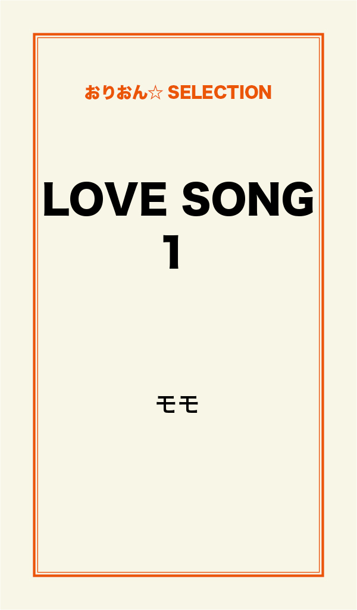
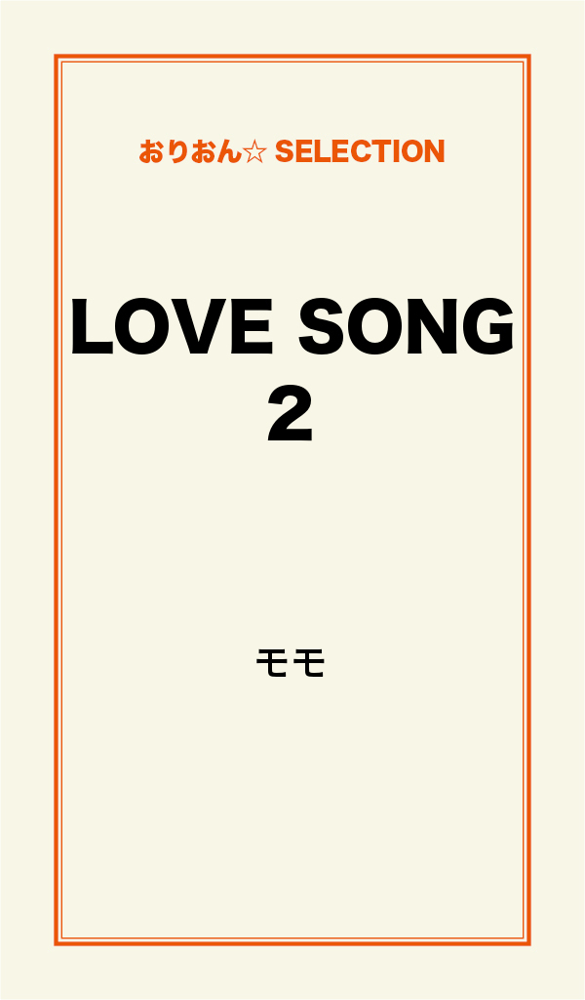
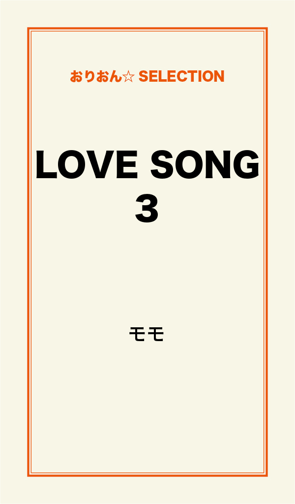

| LOVE SONG 完全版 | |
| モモ | |
この本は横書きでレイアウトされています。
また、ご覧になる機種により、表示の差が認められることがあります。

ど～なってるの？
青南学院高校 昼休み。
「はづき～入学してかれこれ2カ月経つのにさ～」
小学校以来の親友 奥野 真里菜が頬を膨らませている。
「な、なに？」
葉月と呼ばれた女の子は何を言われるのかと首をかしげる。
「拓海に会えないよ～！」
葉月は長いアッシュグリーン色の髪の毛を軽く引っ張られる。
「ま、真里菜？」
「ごめん、葉月の髪の毛すごく綺麗だからつい触りたくなっちゃうんだよね」
「それは触ってるんじゃなくて引っ張ってるんでしょ」
真里菜に怒った振りをする葉月。
「葉月がそんな顔しても可愛いだけだよ」
と、頓珍漢なことを言う真里菜はショートヘアーが良く似合う女の子だ。
「もう！」
少しふくれた振りをした葉月は目の前にある真里菜のお弁当箱の中から卵焼きを取って口に入れる。
「おいし～真里菜のママ、料理上手だよね」
エメラルドグリーンの目が真里菜を見てにっこり笑う。
「取ったな！ と言いたい所だけど1人暮らしの葉月だから許しちゃう」
葉月の両親は10才の時に交通事故で亡くなった。
その後養育をしてくれた祖母も今年の1月、病気で亡くなってしまったのだ。
「今日撮影あんの？」
窓から校庭を見ている葉月に聞く。
「うん」
校庭から視線をはずすと真里菜ににっこり笑う。
にっこり笑う葉月をいつもながら可愛いな～と思ってしまうのだ。
葉月は雑誌のモデルをしていた。
派手に見える容姿とは正反対に、引っ込み思案で内向的の葉月がモデルをしている事が不思議に思える。
まあ、街を歩けば必ずスカウトされる葉月なのだが。
「もしかして＜セシル＞の撮影？」
有名なティーン向けのファッション雑誌だ。
真里菜も2回ほど撮影の見学をさせてもらった事がある。
「そう」
＜セシル＞はティーン向けと言ってもお嬢様系の雑誌だ。
「拓海に会いたいよ～！」
真里菜がそう叫ぶとすぐに重いため息を吐く。
「そのうち学校で会えるよ」
葉月が机にうなだれた親友を慰める。
（私だって会いたいよ。でも別世界の人なんだよね。拓海は超売れっ子のミュージシャンで俳優だもん）
葉月も拓海のファンだったがそれは憧れであって恋をしている訳ではない。
6時間目が終わりホームルームが終わると渋谷のスタジオに向かう。
学校から電車で20分程の所にある。
廊下で雑誌の男性スタッフとすれ違って挨拶をする。
「おはよ～葉月ちゃん、制服姿も可愛いね」
「おはようございます」
立ち止まるとペコっと頭を下げる葉月。
「葉月、これからスタイリストさんと打ち合わせよ」
モデル事務所のマネージャー森本 多恵子がドアから顔を出した。
「はーい」
今日の撮影はパーティードレスの特集で5人のモデルが呼ばれている。
葉月以外はみんな売れっ子のモデルだ。
レモンイエローのくるぶしまであるドレスは葉月のエメラルドグリーンの瞳を明るくさせる。
カシャ......カシャ......。
シャッターを切る音がスタジオに響く。
「君！ すごくいいね～ちょっと左上を見て、そう いいよ～笑って！」
カメラマンは初めて見る人だ。
＜セシル＞の専属カメラマンではない。
若く見えるが聞く所によると有名なカメラマンらしい。
スタジオの入り口が騒がしくなり、葉月の視線が入り口を見る。
「気が散っちゃった？」
レンズから顔を上げる。
「す、すみません」
すぐに向き直る。
「いいよ。たぶん拓海が来たんだろう」
（え？ 拓海......？）
「拓海って......あのミュージシャン......ですか？」
「そう、葉月ちゃんファンなの？」
フィルムを確認しながら葉月に付き合ってくれる。
「友達がファンなんです。サイン貰えたらなって」
「後で貰えるよ」
（あとで......？）
撮影
（いつ頼めば良いの......？）
カメラマンの言葉に戸惑いながらフィルムの確認している間、椅子に座って足をぶらぶらしていた。
そこへ黒皮のパンツに黒のシャツを着た拓海が葉月の目の前に姿を現した。
（うわっ！ 本当に拓海だ！ どうしてここに？）
拓海は真っ直ぐカメラマンの所へ行く。
「信也！ わりィ。遅くなった」
拓海がカメラマンに言う。
拓海はカメラマンを良く知っているようだった。
「おう！ こっちも押してた。やっと終わったところ」
信也が答える。
その言葉に葉月がはっとして時計を見る。
もう九時を回っていた。
（うそっ......宿題があるのに......もうわたしの分の撮影は終わりかな？）
葉月が時計を見る動きが目に入ったのか拓海が葉月の元へやってきた。
いきなり目の前に現れてじっと葉月を見ている拓海のせいで顔が赤くなる。
（な、なんでじっと見るの？ なんかついている？）
「こ、こんばんは......」
突然の大スターを目の前にしてそんな言葉しか出ない......。
「へえっ、お前の目と髪、本物じゃん」
綺麗なエメラルドグリーンの瞳を見つめられている。
よくコンタクトレンズを入れていると間違われるのだ。
「いい被写体だろ！」
信也と呼ばれたカメラマンが満足げに言う。
「ああ......お前の顔って......なんか、ミスマッチだな」
（な、なんですと～。なんか口悪いっ）
「だろっ」
とニヤリ笑うカメラマン。
（2人でなにを分かり合っているのぉ？）
葉月が2人の顔を交互に見る。
「外人の容姿をしているくせに顔の造りは日本人。親しみ湧くなお前の顔」
拓海が信也から写真を受け取り見ている。
（それってさっき撮った写真？）
「意味が......」
葉月が小さく呟く。
マネージャーの多恵子が部屋に入ってきた。
「多恵子さん！ 葉月ちゃんに決まり！ あれに着替えさせて」
と信也が指示する。
（あ、あれ？）
頭の中がはてな？マークでいっぱいだ。
（うそ～っ!!）
衣裳部屋に入った葉月が絶句する。
一着のウェディングドレスがかけられていた。
オーガンジー素材で前は短めで後ろは引きずる位長い。
全体に花模様のレースが入り若々しいデザインだ。
（すごく綺麗......女の子なら1度は着てみたいよね）
「まさか、これに着替えるわけじゃないですよね？」
（ウェディングドレスの企画など聞いていないし）
「そのまさかよ」
多恵子が控えていたメイクさんの所に連れて行く。
「髪の毛は長いままにね。このティアラが映えるわ」
葉月は鏡の前に座らされるとアップにしてあった髪の毛を下ろされ、艶が出るまでブラッシングされる。
お化粧も濃くならない程度に直される。
葉月の肌はしみひとつなく透明感がある。
「すごく素敵よ！ 葉月が選ばれるって思っていたわ」
花嫁と言うよりどこかの国のお姫様のようだ。
「私が着ちゃって良かったんですか？」
葉月を除く他のモデルは引っ張りだこなのだ。
「信也さんが決めたのよ。行くわよ。拓海さんが待っているわ」
「どうして拓海さんが待っているんですか？」
「あらっ、言わなかったかしら。花婿は拓海さんよ」
多恵子がにっこり笑いかける。
（絶対に聞いてないっ～ドキドキしてきた）
先ほどのスタジオとは違う部屋に入ると黒のタキシードを着た拓海が信也と話していた。
日本人が着ると似合いそうもないタキシードを身長が１８５センチある拓海は見事に着こなしていた。
（うわっ！ めちゃくちゃカッコイイ。目の毒だよ）
直視出来ずに拓海から目をそらしてしまう。
顔は熱を帯びてパタパタと手で顔を仰ぐ。
良く見るとスタジオの中は教会になっていた。
「すごく可愛いじゃん」
葉月に気が付くと近寄って拓海が言う。
「キスして今すぐ連れ去りたいな」
信也に言われ葉月は真っ赤になりうつむく。
「それセクハラ発言だぞ」
拓海が指摘して信也を小突く。
「本当のことだろっ」
信也はそう言うとライトの確認に呼ばれ行ってしまった。
「あ、あのよろしくお願いします」
戸惑いつつも頭を下げる。
「そんなに緊張するとブスに映るぞ」
そわそわしている葉月に拓海がまじめな顔をして言う。
（やっぱ、口悪っ！）
ちょっと不機嫌な顔になる葉月の顔を見てくすっと笑った。
キス
撮影はうまく行き過ぎる程だった。
信也は拓海の専属カメラマンなので拓海の魅力を引き出す術を知っておりスムーズに進む。
信也の巧みな話術で葉月はリラックスして撮影を楽しむことが出来た。
拓海の手が腰に回るたびにうずく様な甘い感覚に襲われていたのだが。
「はい！ 終了ね～お疲れ～」
信也がファインダーから顔を上げて2人に言う。
「お疲れ様でした」
葉月がスタッフと信也、拓海に頭を下げる。
時計を見てホッとする。
（良かった。11時過ぎたけど終電に間に合う）
「お疲れ」
拓海が疲れた様子もなく葉月に声をかける。
「お疲れ様でした」
サインを貰わなきゃと思った所に多恵子が来て衣裳部屋に連れて行かれる。
（やばっ！ 遅くなるなんて思わなかったから着替えがない......こんな時間に制服はいやだな......）
メイクを落とし、制服に着替える。
（はぁ～お腹も空いた......合間にサンドイッチは食べたけど......）
支度を終えて廊下に出るとスタッフと共に拓海と信也が話をしていた。
「お2人さん、これから食事に行くけど？」
信也が多恵子と葉月を誘う。
「信也さん、葉月は高校1年生よ。制服だし、まずいでしょ」
多恵子がたしなめる。
「明日も学校がありますから。お疲れ様でした」
葉月は挨拶をするとエレベーターに向かう。
「あの制服、拓海と同じ学校じゃないか？」
信也が気が付き拓海に言う。
葉月は到着したエレベーターに乗り込む。
閉まる寸前、形の良い長い指が扉を押さえて、拓海が乗り込んで来た。
「拓海さん！ 帰るんですか？」
突然乗り込んできた拓海に驚く。
「忘れもん......」
拓海の頭が近づく。
顔をそむける時間も無く、拓海の唇が葉月の唇に重なる。
（えっ......）
思いっきり目が開く。
やさしいキスが葉月の輪郭をなぞり、泣きたいほどの物足りなさを残して離れる。
葉月は大きな目で訴えるように拓海を見つめている。
エレベータが1階に止まった。
突然のキスにびっくりして慌ててエレーベーターを降りようとするが、伸びて来た手に腕をつかまれる。
「送ってく」
帰り道
地下2階の駐車場に到着した。
葉月は拓海に手首を掴まれて車へと進んだ。
黒塗りの車の横に来ると持っていた鍵を押して小さな音とともにロックが解除される。
（ジャ、ジャガー!? さすが芸能人！）
助手席に座らされると葉月はぼーとして初めて乗る外車の車内を見る。
拓海が車の前を回って運転席に着く。
突然、葉月の身体に覆いかぶさるように拓海の身体が動く。
かたまる葉月を見てくすっと笑う。
拓海は葉月のシートベルトをつけただけだった。
（なんか......遊ばれているみたい......）
住んでいる所を聞かれて住所を教える。
頭に地図が入ったようだ。
流れるように車が発進する。
「あ、あれ？ 運転免許......は......？」
「4月で18になった」
（4月に免許を取ったばかりでこの手馴れて運転はおかしいでしょ？）
「う、運転上手なんですね」
話す言葉が見つからずそんな言葉が出ていた。
「ロスで乗っていたから」
（ロス！ そうだ！ 拓海はアメリカ育ちなんだっけ）
車は渋谷の大通りをを抜けるとスムーズに進んだ。
車内での拓海は無口だった。
葉月には分からないクラッシックの曲が小さく車内を流れている。
（クラッシックも好きなのかな？）
静かな曲と車の揺れが気持ちよくて葉月のまぶたは意思とは反対に閉じていく。
「葉......」
名前を呼ぶ声が心地よい。
「葉月、着いたぞ」
もう1度呼ばれる。
（着いたって？）
ハッとして目が覚める。
目の前に拓海の整った顔がある。
（いや～ん。寝ちゃったんだ）
「お前ってすごくいい。俺と一緒に居て寝る女なんていないからな」
「ご、ごめんなさい......」
（暗いから真っ赤になった顔はわからないといいけど......どーして眠っちゃたんだろう......ありあえないシチュエーションだったのに）
自己嫌悪に襲われてうなだれる。
（こんなすごい人と一緒なのに寝る人なんていないよね......）
「ここでいいのか？」
百面相をしている葉月に聞く。
車の外を見ると見慣れたワンルームマンションがあった。
「あ、はい。ありがとうございました」
葉月は慌てて車から降りると頭を下げる。
「お前、青南学院だろ？ クラスは？」
「あ......1年3組です」
「了解！ おやすみ」
「ありがとうございました。おやすみなさい」
もう1度、頭を下げて葉月は部屋に向かう。
が拓海の運転する車はまだ出ない。
（もしかして......部屋に入るまで見守ってくれている？）
部屋の前で葉月は立ち止まり、もう1度見ると拓海は手を振って去って行った。
「拓海とキスしちゃた......」
思い出すだけでドキドキ心臓が高鳴る。
（でも平然としちゃうなんて遊び人なんだ。でも何で寝ちゃったんだろう......あ～ん。おバカ......）
「ふわ～ぁ～」
教室に入るそうそう大きなあくびが出る。
「おはよう！ 葉月 すごく眠そうだね」
今にも瞼がくっつきそうな葉月を見て笑う。
「真里菜！ おはよう。聞いて！ 聞いて！」
真里菜が来てようやく頭が冴える。
葉月が昨日のことを興奮混じりに話す。
しっかりキスのことは内緒にして。
拓海の大ファンの真里菜に言えるわけが無い。
「すごーい！ 拓海と仕事したんだぁ。あっ。サインもらってくれた？」
「ごめん......」
「そんなことだろうと思った。でも今度もらえるね。拓海とお知り合いになったことだし」
「真里菜」
後ろに同じクラスの神田 翼が立っていた。
拓海の大ファンの真里菜だが同級生の翼君とラブラブな関係なのだ。
今日は仕事が無い予定だった。
家でのんびりしたかったのにお昼休み、多恵子から仕事のメールが入った。
次の仕事
仕事が入った。
うれしいことだけど気乗りしなかった。
葉月の立場では断ることなんて出来ない。
業界でやり手と評判の多恵子がマネージャーになってから少しずつ仕事が増えてきているのだ。
「はぁ～」
寝不足で身体がだるいし、スタジオに着く頃には頭痛もしてきた。
重い足取りで昨日と同じスタジオのメイク室に入る。
「おはようございまーす」
自分を元気付けて挨拶をする。
鏡の前に座るとメイクさんが近づいて来た。
「葉月ちゃん。今日、すごく顔色悪いよ。大丈夫？」
ヘアーメイクの京子が葉月の髪にブラシを当てながら言う。
「寝不足みたいです」
鏡の中の京子さんににっこり笑う。
「若いから寝不足でもお肌がきれいね。うらやましいわ。私なんかすぐあれちゃうから」
「そんな事ないですよ？」
京子は背が低いが綺麗な顔立ちをしている。
「顔色は誤魔化せないから少し明るめに濃くしておくわね」
今日の衣装は普段着。
夏ものの薄い素材が多い。
「他のモデルさんはもう入っていますか？」
今日は1人も見かけない。
「今日は葉月ちゃんだけよ？ 多恵子さん言っていなかった？」
（聞いてない......私だけ？）
不安を抱えながら指定されたスタジオの中に入ると、昨日のカメラマン信也がいた。
おまけに壁の近くに用意されているイスにジーンズ姿のラフな格好をした拓海が長い足を
組んで雑誌を見ている。
（どうして......？）
「葉月ちゃん！」
信也は入り口に立っている葉月を見つけると近寄って来て抱きつく。
「きゃっ......」
いきなり抱きつかれた葉月はびっくり。
「昨日。拓海に襲われなかった？」
信也の言葉に葉月は耳まで真っ赤になる。
「馬鹿なこと言ってんじゃねえよ」
拓海も近づいて来て軽く信也の頭を小突く。
「拓海さん。昨日はありがとうございました」
葉月は拓海に微笑みかけた。
「おっ。拓海、良いね～葉月ちゃんのこんなにかわいい微笑をもらえるのなら今日は俺が送っていくかね」
信也がにやりと笑って言う。
「なにスケベ爺みたいな事言ってんだ」
もう一度信也の頭が容赦なく拓海に雑誌で叩かれる。
「ふ～ん」
叩かれた箇所を擦りながら信也が意味ありげな笑みを拓海に向ける。
「早く仕事しろよ」
拓海が鋭い視線を信也に向けた。
「デートショット？」
何も聞かされていない葉月は何の事かわからない。
「昨日撮った写真があまりにも良くってさ 結婚前の恋人同士のショットも載せる事になったんだ」
信也が説明する。
忙しい拓海も編集者に泣きつかれてスケジュールを調整したらしい。
外でロケだった。
夕暮れの公園でデートという設定らしい。
蒸し暑い6月だというのにワゴン車の外に出ると葉月はぶるっと震える。
「寒い？」
拓海が震えた葉月に手にしていたジャケットをはおらせる。
それを見ていた拓海のファンはきゃー！ やめて～！ などと叫んでいる。
「もうばれた」
信也がギャラリーの多さにため息を吐く。
仕方が無い......。
拓海は超人気のミュージシャンであり俳優なのだ。
何処にでも追っかけがいる。
ギャラリーの多さにため息は吐いたものの拓海は気にもせず、仕事モードに入っている。
缶コーヒーを持ってベンチに座る。
葉月は足を組んで隣に座る拓海に笑いかけろと信也から指示を受ける。
その通りにしただけでギャラリーがうるさい。
なかなか進まない撮影に葉月は疲れてきた。
拓海が貸してくれたジャケットは撮影中は着られないから長引くほど葉月は異常な寒気を感じ始める。
（まいったな......さっきアスピリンを飲んだのにきかない）
具合が悪くなるのを感じる。
「拓海！ 葉月ちゃん抱きしめて！」
2人は噴水の前にいた。
辺りはすでに暗くなって、噴水のライトアップが甘い雰囲気を出している。
信也の言葉に一段と甲高い否定の悲鳴が響き渡る。
「くそっ。うるせえな」
抱きしめられた葉月の耳元で拓海が小さく呟く。
葉月は思わず笑みがこぼれる。
「そっ！ その笑顔。ばっちり！ もっと拓海を見つめて！」
信也が動きながら2人の姿を撮っていく。
頭がくらくらしてきた。
拓海に抱きしめられているので倒れることは無いが。
「葉月？」
拓海にもたれてきた葉月の様子に顔を寄せる。
「葉月ちゃんの顎に手をかけて唇寄せろ」
信也の容赦ない注文。
拓海が葉月の顎に手をかけ、上を向かせる。
「お前。熱！」
触れる手に葉月の熱が伝わって来る。
「大丈夫......続けて下さい......」
拓海のおかげで信也に悟られる事なく撮影は終わった。
風邪
撮影が終わったにもかかわらず葉月を抱えるようにして歩く拓海にファンの悲痛な声が遠くに聞こえる。
葉月の意識はそこで途絶えた。
「葉月！」
拓海がぐったりした身体を抱き上げるとワゴン車へ連れて行く。
「「葉月ちゃん！」」
信也と多恵子が意識の無い葉月の元へ来る。
「熱が高い」
拓海が額に手を置き確かめる。
信也がすぐに車を出す。
近くの大学病院に向かった。
拓海が葉月を抱き上げて車から出ようとすると信也の手が拓海を押さえる。
「拓海はここにいろ」
拓海のファンが付いてきているので大騒ぎになる。
「病院内までは入ってこられない」
拓海は葉月を抱いたまま譲らない。
「......わかった」信也が折れる。
すぐに診察される。
風邪の診断。
「ゆっくり寝かせて下さい。点滴が終わったら帰ってもいいですよ」
葉月は診察用のベッドに寝かされ点滴を受けていた。
眠っている葉月は人形のようだ。
長いまつげが頬に影を落としている。
信也は機材の片づけがある為、1度スタジオに戻った。
多恵子と拓海はベッドの近くのイスに座り葉月の意識が戻るのを待つ。
「無理させちゃったわ......貴方との撮影で私の方が舞い上がってしまったようね」
多恵子がため息を吐く。
「............」
拓海は答えなかった。
「ん......」
ゆっくり葉月のまぶたが開く。
意識はまだ覚醒しておらず宙を見つめている。
「葉月？」
多恵子がそっと声をかける。
「あっ！」
倒れたことを思い出し起きあがろうとした所を拓海が止める。
「点滴中、それにまだ起き上がれないだろ」
「撮影は......？」
口を開くのもだるいが意識を失ってとんでもない迷惑をかけたか心配になった。
「無事に終わった」
「ごめんなさい......迷惑かけちゃった......」
「具合が悪いのなら悪いって言えよな」
拓海の表情は不機嫌そのものだ。
「ごめんなさい」
もう1度小さな声であやまる。
（迷惑かけちゃった......）
「まあ......気が付かない俺も間抜けだけどな」
拓海がふっと笑みを浮かべる。
（怒ってない......？ 良かった）
点滴が終わった頃、信也が戻ってきた。
「葉月ちゃん、大丈夫？」
信也が葉月に聞く。
「はい。ご迷惑かけてしまって申し訳ありませんでした」
あやまる葉月の顔色は良くない。
「今日は私の所で休んでね」
多恵子が言う。
「そんな......自宅でゆっくりしますから大丈夫です」
多恵子には明日も仕事がある。
泊まったりなんかしたら迷惑をかけてしまう。
「俺が送っていくから」
拓海はそう言うと葉月を抱き上げる。
その言葉に多恵子が何か言いたそうだ。
「じゃあ、頼むよ。車は持って来てあるから」
信也が言う。
「サンキュウ」
拓海が目を閉じている葉月を抱いて出て行った。
「うわさになったらどうするのよ？」
残された多恵子が信也に言う。
「その時はその時だよ？」
にやりと不敵な笑みを浮かべる信也だった。
葉月はそっと助手席に座らされ、襲ってくる眩暈と戦うためじっとしている。
「気分は？」
車を発進させると拓海が静かに聞く。
「大丈夫......」
ぜんぜん大丈夫に聞こえない。
20分ほど走るとマンションの地下に車が入り、専用駐車場に止まった。
マンション
「拓海さん？」
目を開けると知らない場所で戸惑う。
「誰もいない部屋に帰らせるわけにはいかないよ」
葉月の戸惑いを感じた拓海はふっと微笑む。
「病人を襲うほど困ってないから安心しろ」
右手を葉月の頭に置くと髪の毛をくしゃっとする。
運転席から出ると葉月をそっと抱き上げる。
「自分で歩けるよ？」
「まだ無理だろ」
拓海は有無を言わさなかった。
拓海はすぐ横のエレベーターに鍵を差し込むとドアが開き乗り込む。
「めまいは？」
（顔が近すぎ......）
エレベーターが開くと目の前は2畳くらいの玄関だった。
（エレベーターを降りると普通は廊下だよね......？ ）
疲れた過ぎた頭に理解は出来ない。
20畳はあるかと思われるリビングのソファーに座らされる。
きちんと整理されていてモデルルームのようだ。
雑誌が1冊だけ床に落ちているのを見て微笑む。
「ちょっと横になって待っていて？」
鍵の束をテーブルの上に無造作に置くと奥の部屋に消えたがすぐ戻って来て葉月を毛布で包むとまたいなくなった。
座って待っていたいのだが自然と身体が誘惑に耐えられなくて横になってしまう。
目を閉じていると拓海がお盆を持ってきてテーブルの上に置く。
「葉月......」
起こすのはかわいそうだが食べなくては薬が飲めない。
「拓海さん......？」
一瞬自分が何処にいたのか理解できなかった。
「大丈夫か？ おかゆ食べて寝たほうがいい」
拓海の手が葉月を起こす。
テーブルの上には湯気の立っているおかゆと梅干、イオン飲料のペットボトルがある。
「おいしそう......」
「食べさせてやろうか？」
そう言って拓海がレンゲに手を伸ばす。
「じ、自分で食べられます......」
慌ててレンゲを掴んで一口おかゆを口に運ぶ。
「おいしいです」
おもったよりお腹が空いていたようだ。
「残さず食えよ」
拓海は斜め横の1人用ソファーに座ると食べている葉月を見ている。
（そんなに見られたら食べにくい......）
「拓海さん、食事は？」
「さっき食ったよ」
おかゆを口に運んでいる葉月をみて満足そうだ。
（この部屋。すごく綺麗にしている......誰かいるのかな）
「俺しか住んでいない」
「えっ！」
葉月が驚いて顔を上げる。
（なんでわかっちゃうの～？）
一瞬で赤面。
「お前の考えていることくらいわかるよ」
拓海が長い足を組み直す。
「ううっ......拓海さん、お仕事大丈夫でした？」
撮影の後に仕事が入っていたのなら大変だ。
「ああ......あれで終わりだったから」
拓海が立ち上がると部屋から出て行った。
（そっけない返事......もしかしてお仕事あったのかも......）
取り残された葉月は拓海に言われたとおり全部たいらげた。
お盆の脇にあった薬も水で流し込む。
そこへ髪に水滴をつけ白いバスローブを着た拓海が入ってきた。
その姿に葉月の心臓がいっきに跳ね上がる。
（どうしてそんな姿で出てくるのぉ）
「お、おいしかったです ご馳走様でした」
立ち上がりお盆を持ってキッチンに行こうとすると横から拓海にお盆を奪われる。
「ここはいいから。もう寝ろよ」
お盆をテーブルの上に置くと葉月の腕を掴むと部屋に連れて行く。
「あの......シャワー使っても良いですか？」
メイクも落としていないので肌が呼吸できないみたいな感じで気持ちが悪い。
「本当は良くないと思うけど？ そっちが浴室、着替えは俺のシャツで我慢して」
（熱が下がっていないから良くないのだが）
「はい」
葉月ににっこり微笑まれると拓海は体の中の血が一気に全身を駆け巡る感覚を覚える。
拓海が浴室から出て行くと葉月は着ていたものを脱ぎ、さっきまで拓海が使ってまだ湯気が残るシャワーブースに入る。
（このマンションすごいっ！ 浴槽のほかに外国のようなシャワーブースがある......浴槽だって3人は入れちゃうくらい大きい）
そして窓の外は微かな夜景の光......。
すごく贅沢な気分。
清潔な真っ白いバスタオルで体をふき、拓海の白いシャツを着て外に出ようとすると目の前が真っ暗になってとっさにしゃがむ。
座った時に腕が何かにぶつかり大きな物音をたててしまった。
その物音に拓海がやって来た気配がする。
「葉月？」
ドアの外から心配そうな声が聞こえる。
「だ、大丈夫......」
強がるのだが眩暈はまだ治まらない。
「開けるぞ！」
開けるとドアの前にうずくまっている葉月がいた。
「やっぱり無理だったな」
拓海は葉月を抱き上げるとキングサイズのベッドの上に寝かせる。
「ごめんなさい......」
（迷惑ばかりかけちゃってる......）
拓海は寝室から出るとペットボトルを持って戻ってきた。
「少し起きていられるか？」
「うん？」
拓海は葉月を起こすとペットボトルの口を開けて渡す。
一口飲んでいるとドライヤーの温かい風が葉月の髪を包んだ。
「拓海さん......」
突然の事に目を丸くして驚く。
「こんなに長いんだから乾かさないと肺炎になるぞ」
そう言いながら丁寧に葉月の髪を乾かしていく。
「細い糸みたいだな」
乾いていくと次第にサラサラの手触りに変わっていく。
「ヘアーメイクさん泣かせって言われちゃうの」
サラサラ過ぎて扱いにくいらしい。
髪を乾かすゆっくりとした指で葉月のまぶたが閉じてくる。
（もうだめ 気持ちが良すぎて......）
後ろにいる拓海に寄りかかり眠ってしまった。
「ほんと。いいキャラだな」
寝顔が天使のように愛らしい。
まったく警戒しないのも困りものだ。
（お前は無防備すぎる......）
葉月をベッドの中に入れると布団をかけフッと自分に笑う。
（俺って世話好きだったっけ？）
拓海はベッドサイドの明かりだけ付けて部屋の電気を消すとリビングに行き、ソファーで眠った。
ファンレター
葉月はまぶしさに目が覚める。
「ここ？」
まだはっきり目覚めておらず見知らぬ部屋もただ見ているだけだ。
「えーっ！」
布団の中からガバッと体を起こすが頭がくらくらして前屈の体勢になる。
（そうだ！ ここは拓海のマンション......）
眩暈が治まるとゆっくりと起きて部屋を出る。
「拓海さん？」
リビングにはいない。
テーブルの上に紙があるのを見つけると葉月宛だった。
『仕事に出かけてくる。昼に戻る。おかゆは温めて、ちゃんと寝ていろよ』
（うわっ。拓海の字だぁ......って、どーしよ？ 拓海に迷惑ばかりかけている）
とりあえずキッチンに行くと鍋を暖める。
今日のおかゆは卵が入っていた。
（拓海って料理上手）
新しい発見に自然と笑みがこぼれる。
おいしいのだがほんの少ししか食べられなかった。
座っているだけでひどい倦怠感に襲われる。
「早く直さなくちゃ」
時計を見ると10時だ。
（拓海が帰って来るまでに元気にならないとね）
葉月はもう1度ベッドに戻り眠りについた。
（遅くなった......）
拓海は葉月の体が心配だった。
おそらくマンションに電話しても出ないだろうし、葉月の携帯の番号も知らない。
リハーサルがまとまらず昼に帰る予定が3時になってしまったのだ。
部屋の中は静まりかえっていた。
葉月の靴はあるので部屋に居ることは間違いないだろう。
高級和食のお弁当が入っている紙袋をテーブルに置き、寝室をのぞく。
葉月は静かに眠っていた。
（気持ちいい。誰かが冷たいタオルで額に当ててくれる......）
葉月がゆっくり目を開ける。
「あっ」
涼しげな眼差しで見つめられて目をそらす。
「熱が下がってないみたいだな」
拓海が葉月の口の中に体温計を入れる。
そのせいで何も話せなくなる。
「お前、ちゃんと飯食ってないだろ」
怖い顔で葉月をにらむ。
（怒っている......）
「ごへんらはい」
体温計のせいだ。
拓海が葉月の言葉にくすっと笑う。
「38度！ 飯食って、薬飲んだらもう1度寝ていろよ」
「拓海さん、わたし......アパートに帰え......」
「無理にきまっているだろ」
部屋を出て行こうとした拓海は葉月の元へ戻ってきた。
「でも。迷惑かけているし......」
「そんなこと思ってない」
「お願い......」
エメラルドグリーンの瞳が熱のせいか、潤んでいる。
「迷惑だったら最初から連れてこないから」
拓海の指が葉月の頬を撫でると唇の輪郭をなぞる。
「っぁ......」
甘く疼くような感覚が広がる。
「お前はいつもこんなに敏感なのか？」
ささやくような問いかけると葉月はふるふると首を振る。
「食事持ってくる」
そう言って出て行きお弁当の入った紙袋を持ってきた。
「起きられる？」
「うん」
拓海が手伝う前にベッドの上に起き上がる。
「すごく豪華なお弁当......」
「久野の板さんに作ってもらってきた」
（久野って......銀座で有名な料亭の？豪華すぎるよ......）
「おいしいです。拓海さん」
焼き物を口にして言う。
「出来るだけ食えよ」
そう言うと寝室から出て行った。
（元気だったら完食するのに......もったいないな）
10分後、お箸をもてあそんでいると黒っぽいスーツを着た拓海が入って来た。
（かっこよすぎる......）
「結構食べられたな」
お弁当の中を覗く。
「ご馳走様でした」
拓海がお弁当箱を受け取る。
「はい。薬、時間が中途半端になっちゃたな」
水の入ったコップと薬を渡される。
（また粉薬だ......苦手なんだよね......口に広がるあの苦味......）
「早く飲めよ」
「ううっ......」
水を含むと粉薬を口の中へ入れ、やっとのことで飲み干す。
「上出来！」
持っていたコップを拓海が受けとる。
「これから事務所のパーティーに顔出してくるから。夕食はちょっと遅くなるな」
「気にしないでゆっくりして来て下さい。拓海さん」
必要以上に気を使わせている拓海に申し訳ない。
「拓海」
「えっ？」
「さん付けはいらない」
拓海は葉月の唇に軽くキスをする。
「拓海......？」
口付けされた唇に手が行く。
「じゃあ おとなしく寝ていろよ」
そう言うと出かけてしまった。
（どうしよ......このままだと、どんどん好きになっちゃうよ......）
次に起きた時は部屋が真っ暗になっていた。
ベッドサイドの電気をつけて時計を見る。
7時だ。かなり眠っていた。
（のど渇いた......）
起き上がってキッチンに向かう。
寝ていたから身体がふらふらする。
キッチンに入り、コップに水道水を入れて一口飲む。
寝室に戻ろうとリビングを通った時、部屋の隅にダンボール箱が詰まれているのに気が付く。
ダンボールから手紙のような封筒がはみ出ている。
「？」
葉月はそれに近づいて手に取る。
「ファンレターだ......こっちはプレゼント？」
どれも開けられていない。
（そうだった......拓海は超大人気のミュージシャン......私なんか選ぶはずが無い......何でやさしくするの？）
葉月の大きな目から涙がこぼれ落ちた。
～～～～～ ♪
「携帯！」
リビングのソファーの上に葉月のカバンが置いてあった。
ファンレターを元の場所に戻すと涙を手で拭いてカバンの中をゴソゴソ探し携帯を取り出す。
「はい？」
『葉月？』
「多恵子さん」
『葉月、大丈夫なの？ まったく連絡が取れないから心配したわ』
「ごめんなさい、大丈夫です。ご心配かけてすみません」
『じゃあ。あさって仕事だからそれまでに体調整えておいてね』
「はい」
（あさってまで仕事が無くて良かった）
電話を切ると着信履歴を見る。
（やばっ！ 真里菜から電話とメールが入ってる......）
『連絡が取れないから心配だよ。電話ちょーだい。真里菜』
すぐに真里菜の携帯に電話をかける。
『葉月！ 良かった！ 学校無断欠席するから心配したよ？』
「ごめんね 昨日具合が悪くなって寝ていたんだ」
『1人で大変でしょ。あたしこれから行くよ』
今にも飛んできそうだ。
「だ、大丈夫！ もう寝るから！」
慌てて止める。
『なんか変だよ？』
こういうときに限って感が鋭い。
「本当に大丈夫！」
『なに？ 彼氏でも居るの？』
「ち、違うよ。アパートにはいないの」
『じゃあ どこにいるの!?』
「と、友達の所」
しどろもどろになる葉月。
『なーんか あやしい』
「友達だよ」
あくまで否定する。
『ほんとかな～？ 親友の真里菜様に嘘ついていない？』
（う......そんな事言われたら......嘘つけないよ......）
「実は......誰にも言わないでね......？」
『うん、うん』
保護欲
（なんか期待してるぅ......真里菜さん......）
「拓海のマンションなの......」
『た、拓海～！』
驚いた声が葉月の耳に痛い。
耳から携帯を少し離す。
「な、なりゆきで......ごほっ！ ......ごほ」
その後の言葉を咳の発作が葉月を襲い話すことが出来ない。
苦しそうだ。
『大丈夫？ もういいよ！ あとでゆっくり聞かせてもらうからね～』
「......うん......」
『早く直してね』
真里菜のにんまりした顔が想像できる。
（話さないほうが良かったかも......）
カチャリ。
玄関の鍵が開く音がした。
「......信也さん!?」
入って来たのは拓海ではなかったので驚く。
「よっ！ 葉月ちゃん、起きていて大丈夫なのか？」
「はい......昨日はご迷惑おかけしてすみませんでした」
「俺も気が付かなくて悪かったよ」
信也の言葉に葉月は首を横に振る。
「だけど......写真の出来は最高だったよ」
「信也さん、拓海さんは外出してますけど？」
拓海に用があったのだろうと思い言う。
「その姿......色っぽいなぁ 俺のモデルにならない？」
「えっ？ きゃっ！」
拓海のシャツから腿が丸見えだ。
シャツのボタンも上から三段目までいつの間にか外れているから胸のふくらみが見える。
一気に顔が赤くなり、パタパタと寝室に戻る。
何か着るものがないかと寝室を見渡すとバスローブがかかっていた。
急いで拓海のバスローブを着る。
（はずかしい......）
「葉月ちゃん？」
ドアの向こうから信也が呼ぶ。
「信也さん......どうしてここに？」
「拓海に頼まれたんだ。お偉いさん達に捕まって遅くなるからって」
「葉月ちゃんの食事のことを気にしてたから代わりに来たって訳」
バスローブを羽織った葉月が寝室から出てきた。
そういえば信也もスーツ姿だった。
「これは拓海から」
高級ホテルの紙袋を渡される。
「？」
手渡された紙袋の中をのぞく。
「ホテルに言って作ってもらったらしい」
信也が何かを思い出し笑っている。
「気にすること無かったのに......って、なに笑っているんですか？」
「いやっ、拓海がこんなことするのを見るのが初めてだから」
信也の言葉に首をかしげる。
「奴はもてるだろ？ っていうか周りがほっとかないから女なんて選り取りみどりで、のめりこむことが無かったんだよ だけど今日のやつは......くくくっ」
腹を抱えて笑う始末だ。
「笑いすぎなんですけど......？」
（それに信也さんの言っている事がわからないし）
葉月はテーブルの上に紙袋の中身を出した。
かなりの量で1人では食べきれない。
「信也さん、お腹空いていませんか？ 良かったら一緒に食べてくれませんか？」
「ああ、おいしそうだね あまり食べられなかったからいただくよ」
信也はキッチンに入るとお茶を入れて戻ってきた。
信也の行動を見ていると良くここに来るらしい。
物のありかが分かっている。
「さすが一流芸能事務所ともなるとこんな超高級ホテルでパーティー開くのですね」
「疲れるだけだよ 所で熱は下がった？」
「たぶん下がりました。眩暈もしないし」
「そう。良かった」
信也の食欲は旺盛で結構な量を平らげてくれる。
葉月の食欲はまだ戻ってないから残さないですむ事にほっとした。
「葉月ちゃんはいい被写体だね。そのエメラルドグリーンの瞳もきれいだし」
「？」
「本当に俺のモデルにならない？」
（超一流カメラマンの信也さんが何で私なんかに？）
信也ならばモデルなど選り取り見取りだ。
誰もが取ってもらいたがるだろう。
「......わたし、もう少ししたらモデルやめるんです」
＜セシル＞の契約が終わったら辞めるつもりだ。
勉強に専念して幼稚園の先生になるのが夢なのだ。
「なんだって!?」
驚いて食べたものがのどに詰まりそうになりお茶を飲む。
「わたし幼稚園の先生になりたいんです。不器用だから両立は無理なんです」
モデルの仕事をずっとやろうとは思っていない。
「もったいないよ！」
「ありがとうございます。超一流カメラマンの信也さんに言ってもらって光栄です」
葉月がうれしそうににっこり微笑む。
（この微笑に拓海は惚れたのか？ 拓海でなくても惚れるか......）
「もう大丈夫なのでアパートに帰ります」
（拓海にはあとでお礼の手紙を書こう。見てもらえないかもしれないけど......）
「だめだよ！ 葉月ちゃんが帰ったら拓海に殺されるよ」
「でも直ったから帰ります」
立ち上がって後片付けを始めようとした。
「なにしているんだ？」
いつの間にか拓海がリビングルームに帰ってきていた。
「おう！ 拓海！ 助かった」
信也がほっとする。
「拓海......さんお帰りなさい」
信也がいる前で呼び捨てに出来ない。
「助かったって？」
不機嫌そうに葉月を見てから信也に聞く。
「これから帰るって」
「ったく！ まだ良くなってないだろう？」
片づけをしている葉月の腕を掴む。
「良くなったよ」
信也が興味津々な顔をして2人を見ている。
「信也～？」
「おっと、わかったわかった！ 帰るとするよ」
信也がジャケットを手にして立ち上がる。
「信也、サンキュウ 助かったよ」
拓海はジャケットを脱ぐと無造作にソファーに投げ、蝶ネクタイもジャケットの上に投げる。
「葉月ちゃんの為ならいつでも」
信也が葉月に近づき頬に軽くキスをすると拓海に殴られないうちに出て行った。
葉月がぽかんとあっけに取られていると、突然拓海に引き寄せられ唇を奪われる。
「んっ......」
巧みなキスに葉月は立っていることが出来なくなり拓海の背中に腕がまわる。
拓海の舌が容赦なく葉月の口の中を探る。
「ん......風邪......移っちゃう......」
「移っても良い......」
拓海の唇は葉月の敏感な耳たぶに移っていく。
「いやっ......」
首筋に熱いキスをして、舌でなぞられる。
「ぁん......」
バスローブの紐が解かれ足元におちる。
「！ 拓海？ ......んっ......」
再び唇を攻められ葉月は何もい言えなくなる。
拓海の手が葉月のシャツのボタンを外していく。
葉月は拓海の愛撫に何も考えられなくなるのだが、拓海の手が背中に移動すると理性が戻る。
「だ、だめ！」
思いっきり拓海を突き放すと前をかき合わせてしゃがみこむ。
「ごめんなさい......」
涙があふれ出てくる。
「......あきれちゃたでしょ？ 拓海の周りにはすごい美人や良い女の人がたくさんいて......私なんか......相手にもならないのに......」
（嫌われちゃう......）
バスローブがそっとかけられる。
「すまない......お前をこわがらせた......」
（えっ？）
葉月が顔を上げて拓海を見る。
葉月はそっと立たせられてやさしく抱き寄せた。
「拓海？」
（なんで......やさしく抱くの？）
いけないと思っているのに拓海の胸に頬を寄せる。
「最低だな......俺のお前を怖がらせた......」
「私は......」
（拓海に抱かれたかった......でも......）
「もう何もしないから寝ろよ」
拓海は葉月を抱き上げると寝室に連れて行き、そっと下ろした。
「拓海......」
拓海は葉月の額に軽いキスをして出て行ってしまった。
（どうしたらいいの......？）
翌日......土曜日。
（あまり眠れなかったな......今日は帰ろう、二日もベッドを占領しちゃったし）
葉月は倒れたときに来ていた薄手のワンピースを着て、その上に拓海のシャツをはおるとそっと寝室を出た。
拓海は長い足を投げ出してソファーに寝ていた。
テーブルの上には横に倒れた缶ビールが2本あった。
（未成年なのに......）
規則正しい息遣いで胸が上下している。
女の子ならだれでも羨ましがるような長いまつげが頬に影を作っている。
（拓海の寝顔をこんなに近くで見られるなんて夢みたい......）
葉月は足音を立てずにキッチンに向かう。
冷蔵庫の中には1人暮らしの男性とは思えないほどの食材が入っていた。
（スクランブルエッグにベーコン、レタス、トマト、フランスパン......）
作るものを決めると作業に取り掛かった。
キッチンは綺麗に整頓されていてすぐにコーヒーの粉も見つかる。
（パーコレーターに水入れて、コーヒーの粉をセットしてっと）
ソファーの前のテーブルではなくダイニングのテーブルに作ったものを用意する。
「葉月」
急に名前を呼ばれてビクッとする。
「た、拓海、おはよう」
顔を合わせるのは気まずいかったが拓海を見て挨拶する。
拓海はソファーから葉月を見つめていた。
「勝手に作らせてもらったよ」
「具合は？ 大丈夫なのか？」
立ち上がって葉月の元へ来る。
「うん。もう大丈夫」
出来たばかりのコーヒーを拓海に差し出す。
「二日もベッド占領しちゃってごめんね。ソファーじゃ良く眠れなかったよね」
拓海をそっと見ると何か言いたげな表情で葉月を見ていた。
拓海は黙ったままで葉月は気まずい思いで立ったままだ。
「あの......」
告白
拓海の手は葉月の顎を取ると上を向かせ容赦なく唇を奪っていく。
「ん......」
「お前は何もわかっていない......」
葉月の唇を奪った唇は先程のキスとはうって変わり優しいキスになる。
「帰したくない......」
拓海の漆黒の瞳が真っ直ぐ葉月を見る。
「............」
「お前の心が手に入るまで手は出さないよ」
「えっ!?」
拓海の言葉に顔を上げる。
「愛してる」
拓海が少し照れたように葉月に言う。
「!!」
葉月はショックを受けた顔で拓海を見ている。
「葉月？」
葉月は大粒の涙を流していた。
「拓海は何も知らないから......知らないから無理だよ......」
首を横に振るとカバンを手にしてマンションから逃げ出した。
「葉月!!」
追いかけようにも拓海は外に出られる格好ではなかった。
ランニングシャツとスウェット。
「くそっ！」
テーブルにこぶしをぶつける。
その反動でコーヒーカップがひっくり返り中身がこぼれた。
拓海は携帯を手にするとどこかに電話した。
「お願いしたいことがあります......」
マンションから逃げるように出てきた葉月は走り疲れて歩き始めた。
「うっく......ひっく......」
（私も愛しているって言いたい......拓海......）
シャツの袖で涙をぬぐってハッとする。
（拓海のシャツだ......）
自分がすごい格好をしていることに気が付いた。
どう見てもこの格好はおかしい。
立ち止まると袖をまくり、裾を短めに結ぶ。
（これだったら変に見えないよね？）
翌日......月曜日。
「おっは～葉月ちゃん」
葉月の沈んだ表情とは裏腹に真里菜の悪魔的な笑みに迎えられた。
「おはよう。真里菜」
「いまさ～うふふ......拓海見かけちゃったｖ」
「えっ？」
「朝からラッキー！ ここの女生徒と歩いていたんだけどさ」
葉月は女性徒と一緒と聞いて胸が痛む。
「葉月の話も早く聞きたいっ！」
何も知らず、無邪気に言う。
「制服来た拓海もかっこよかったな～早くお昼休みにならないかな～」
朝から真里菜はルンルン気分だ。
（もう！ 人の気も知らないで......）
真里菜が楽しみにしていたお昼休みになった。
窓際に机を並べると真里菜が来るまで頬杖をついて外を見る。
1階なので校庭が良く見える。
（拓海！）
拓海が女の子と歩いているのが見えた。
葉月の視線を感じたのか拓海と葉月の視線が絡み合った。
が、隣の女の子に話しかけられ拓海の注意がその子に向けられてしまった。
「はぁ～」
葉月の深いため息がもれる。
（やっぱり暇つぶしだったんだ......本気になるわけないじゃん）
「おまたせ～」
真里菜がやって来た。
教室の中にはあまり人がいない。
というのもこの学校の学食は安くておいしいと評判なのでお弁当を持ってくる人はほとんどいないのだ。
しかし食堂は混雑がひどいので葉月と真里菜はほとんど行くことはない。
「さあさあ、話して？」
クラスメイトに聞かれないように小さな声で真里菜が言う。
（そのほうが聞き耳立てられそうだど......）
「翼君は？」
「やつは学食よ。育ち盛りの彼は学食がお好みらしいわ」
葉月が頷く。
「って、話すり替えないでよ？」
「う、うん......＜セシル＞の仕事でスタジオに行ったら拓海と仕事だったの。撮影の終わりに具合が悪くなっちゃって病院に運ばれて、そのまま部屋に連れて行かれて......」
「うん、うん。それで？」
真里菜の瞳が輝いている。
「おしまい」
「えーっ！ 肝心なこと聞いていないよ」
真里菜の頬が膨れる。
「あたしの妄想はどうしてくれんの!?」
「だって。何もなかったもん」
真里菜から目をそらして校庭に視線を送る。
「でもさ～どんな感じだったかとか、部屋はどうだったとか。ない？」
「お弁当を買ってきてくれたよ、おかゆも作ってくれたし」
「拓海が料理!? それってすごい！ おいしかった？」
「うん......上手だったよ」
（ごめん......真里菜......話したくても離せないよ......まだ心の整理ができないから）
「親しくなったことだし、今度会ったらサインもらってね」
「う、うん」
「見てみて！ 拓海が校庭歩いてる～超かっこいい～！」
真里菜が目ざとく見つけた。
「ねえ、ねえ。こっち見てるよ！」
見ようともしない葉月をトントンたたく。
「きゃーっ。拓海～」
真里菜が腕をぶんぶん振って気を引こうとしている。
「こっち来るよ～」
真里菜が気を引いたわりに拓海が近づいてくるとなると慌てる。
「葉月、風邪は良くなった？」
慌てて葉月が席を立とうとした時にはすでに窓の外に拓海が立っていた。
「う、うん」
無視するわけにもいかず答えた。
「あきらめないからな」
拓海の言葉にかーぁと顔が赤くなる。
真っ赤になる葉月の顔を満足げに見ると拓海は友人たちの元へ戻って行った。
「拓海と話してた～！ すごい！ 拓海はなにをあきらめないのかな～？ 葉月ちゃん？」
真里菜が意味ありげににんまり葉月に微笑んだ。
葉月は机の上に顔を伏せ、真里菜の言葉を締め出した。
（どういうつもりなのかなぁ。拓海......）
今日も渋谷のスタジオだったがカメラマンは信也ではなかった。
「葉月、風邪はどう？ 良くなった？」
多恵子が葉月を見ると飛んできた。
「はい。先日は申し訳ありませんでした」
ペコリ頭を下げる。
「こちらこそ無理させてしまったわね」
その日の撮影はモデルの1人が病気で来られなくなり、その分葉月に回ってきて終わった頃にはくたくたになっていた。
翌日は仕事もなく久しぶりに真里菜と買い物に行くことになった。
授業が終わり渋谷の街へ出た。
オープンカフェに入り飲み物を注文する。
～～～～～～♪
葉月の携帯が鳴る。
「多恵子さん？」
仕事の用事ならメールと決まっているのだ。
電話をしてくるのは珍しい。
『捕まって良かったわ』
電話の向こうの多恵子はほっとしたようだった。
『貴方もこれでスターの仲間入りね！』
「え？ ......」
（嫌な予感がする......）
『拓海との写真の事だけど、シリーズで出すことになったのよ。おめでとう！』
「えっ？」
葉月は耳を疑う。
『私の目に狂いはなかったわ』
電話の向こうから多恵子が興奮した声が響く。
「......多恵子さん......その話、断ってください」
『葉月！ なにを言っているの!? この話を断ったらうちの事務所は大損失よ！ 潰されちゃうわ！』
「............」
『聞いているの!? 葉月！ 今週の土曜日11時にお台場のホテルのロビーに来るのよ、分かった？ じゃあね』
ホテルの名前を言うと一方的に電話は切れた。
「どうしたの？」
真里菜は最近お気に入りのマンゴージュースを飲むと聞く。
「うん......仕事......」
「最近忙しくなったね。葉月は可愛いからどんどん売れっ子になるよ」
座っているだけで店の中にいる人や通りを歩いている人がチラッと葉月を見ていく。
店の中にいる女の子たちは雑誌と葉月を見比べたりしているのだ。
特徴のあるアッシュグリーンの髪と鮮やかなエメラルドグリーンの瞳では目立つなという方が無理なのだが。
（あの仕事はもう無いと思ってた......）
「友達として鼻が高いから仕事がんばってね」
真里菜がうれしそうに言った。
2人はこのあとアクセサリーショップをのぞいた。
「これ可愛いよ！ 葉月に似合うよ」
真里菜が見せたのはシルバーの台にエメラルドグリーンのカラーストーンが入った雫形のピアスだ。
「瞳の色とマッチングよ？」
真里菜が勧める。
「うん、可愛いかも」
学校の時と仕事の時はピアスをはずしているが穴は開けている。
いろいろ見て迷った挙句最初に真里菜が勧めたピアスを買うことにした。
買い物に満足して坂を歩いていると2人の大学生っぽい男が声をかけてきた。
「君たち～暇でしょ～？ 俺たちと遊ばない？」
そう言って葉月の腕を掴む。
「けっこうです」
掴まれた腕を振り解こうとするが離しくれない。
「いいじゃん！ 君、すごく可愛い！ ハーフ？」
「葉月に触らないで！」
真里菜が男たちをにらむ。
「君も可愛いよ、俺たち楽しませてあげるから」
渋谷でナンパは日常茶飯事だがこの2人はしつこい。
「離して！」
葉月が男の腕を振り切るように身を動かす。
「葉月ちゃん!?」
名前を呼ばれて振り向くと信也がすぐ側に立っていた。
「信也さん！」
信也の顔を見てほっとする。
「この子達に何か用か？」
信也が2人の男をにらみつける。
信也はこの男たちより背が高く体格もいいが、
ケンカになったら相手は2人だ。
信也は不利だ。
しかし信也に睨まれて葉月の腕を放す。
「悪いけど俺の妹なんだ」
「くそっ！」
男たちは意外とあっさり引き下がり立ち去った。
「助かりました。信也さんありがとうございました」
葉月がほっとして信也に微笑んだ。
「信也さんって言うんですか、ありがとうございました」
真里菜がとっておきの笑みでお礼を言う。
真里菜の周りには信也のようなタイプはいない。
目がハートマークになっている。
「気をつけないとね あんな連中が多いからね。これから帰るんだったら駅まで送っていくよ？」
「ありがとうございます！」
真里菜はうれしそうに信也の隣に並んで歩く。
「葉月、なにしてるの？ 早く行こうよ」
動かない葉月に真里菜が振り返って呼ぶ。
（真里菜......貴方には翼君がいるでしょう？）
まあ。真里菜の一目ぼれはいつものことだ。
策士
「これでよしっと」
あっという間に土曜日は来てしまった。
出かける前に鏡を見る。
真里菜の勧めで買ったピアスを付け、洋服をチェックする。
多恵子に言われた約束の時間10分前にホテルに着いた。
多恵子はロビーのソファーに座って待っていて
その他は誰もいない。
「おはよう」
多恵子が葉月を見つけると立ち上がる。
「おまたせしました」
葉月がはにかんだような笑みを浮かべる。
「葉月、この仕事断ろうとしたこと絶対に言ってはだめよ。今日は拓海の事務所の社長さんも来ているから」
多恵子が説明をして念を押す。
「............」
多恵子の後に付いていく。
（何で私なんだろ......）
「拓海は混乱を避けるために部屋で待機しているわ」
（どんな顔をして会えばいいの？ 会いたくないといったら嘘になるけど......）
多恵子の後からエレベーターに乗り込む。
着いた場所が１８１１号室。
最上階のスイートルームだ。
「今日はプールでデートよ」
「え？ プール......って水着ですか？」
（ビキニだったら着られないよ）
「当たり前じゃない、プールでドレスを着ている人なんていないでしょ」
葉月の足取りが重くなり立ち止まる。
「とびきり可愛いビキニだったわよ！ あら？ どうしたの？」
立ち止まってしまった葉月を不思議そうに見る。
「多恵子さん、私、ビキニは嫌です！ 着られません！」
葉月の顔が青ざめ肩をこわばらせていた。
激しい拒絶に多恵子の笑みが消える。
「どうしたの？ モデルなら当たり前でしょう」
「他の人にして下さい......私、出来ません」
「どうしたの？ 何を言っているのかわからないわ。葉月？」
多恵子が詰め寄る。
ドアが開いて、部屋の中から信也が顔を出す。
「何を廊下でもめてるの？」
「とにかく中に入りなさい」
多恵子が葉月の手首を掴むと部屋の中へ入れてソファーに座らせる。
「ビキニを着られないだけじゃわからないわ。貴方はプロなのよ」
中へ入ると問題を切り出す。
「ふ～ん。葉月ちゃんのプロポーションならビキニじゃないと引き立たないと思うけど？」
信也がうつむいている葉月に言う。
今まで黙って見ていた拓海が葉月の手を取り、奥の部屋に連れて行く。
「きゃっ......」
拓海に手を取られ気がつくとベッドルームのベッドの上に座らされていた。
「信也さん、どうなっているの？ あの2人」
多恵子は分けがわからず信也に答えを求める。
「拓海に任せよう」
信也はそれだけ言うと部屋を出て行った。
「違うモデルを使って、拓海」
じっと自分を見つめている拓海から目をそらす。
「ふざけたことを言うなよ」
「ふざけてなんかいない！ そもそも私が拓海の相手に選ばれたのが間違いだったの」
（早くここから去りたい）
勇気を振り絞って立ち上がる。
「お前変だぞ？ 何をかくしている？」
拓海の目が鋭く葉月を見る。
「何もかくしてない......」
拓海から離れようとあとずさる。
いきなり拓海が葉月のブラウスに手を掛ける。
「いやっ！」
のがれようとするがかえってブラウスのボタンが飛んでしまいブラジャーがあらわになる。
「やめて！」
「!!」
拓海が息を呑む。
「いや......見ないで......」
葉月の目から涙があふれて頬を伝う。
拓海の目に映ったのは......
葉月の腰に15センチ程の引きつったような傷跡......
「この傷のせいか......」
「モデルなんかにならなければ良かった......」
葉月が両手で顔を覆う。
「見ないで......こんな醜い傷あと......」
（こんな姿見られたくない......）
拓海は葉月を抱き寄せてから膝を折ると葉月の傷跡にに唇をあてる。
「拓海さん！」
思っても見なかった拓海の行動にビクッと身体を震わせる。
「っあ......」
拓海の舌が傷跡をなぞっていく。
「やっ......やめて......」
「醜くなんかない」
敏感な背中、わき腹を舌で攻められ全身の力がなくなる。
「お前は綺麗だ 誰よりも......俺にはこの傷でさえ愛しい」
立ち上がると唇で葉月の涙を拭い取る。
「拓海......」
葉月の瞳を見つめ、両手で葉月の顔をやさしくはさむと唇にキスをする。
次第にやさしいキスは深いものに変わる。
「安心しろ。この傷は写らないようにする」
葉月の震える身体を引き寄せ、髪を撫でる。
「いいな？」
葉月の頭がコクッとうなずく。
「行こう、そうしないと今すぐお前を愛したくなる」
（信じていいの......？）
拓海は葉月の指に自分の指を絡ませるとベッドルームから出た。
出て来た2人を見て多恵子がホッと肩を撫で下ろした。
「心配かけました、葉月はやります」
「良かったわ」
多恵子は2人の関係が気になったがそんなそぶりは見せずに微笑んだ。
ちょうど信也が戻り拓海が説明をする。
写す時の角度やポーズなど信也と打ち合わせしているのを葉月は静かに見ていた。
ここで一番権限があるのは拓海なのかもしれない。と葉月は思う。
「葉月、大丈夫？」
多恵子は話さない葉月が心配で声をかける。
「は、はい」
拓海に見とれていた葉月は多恵子の声でびっくりする。
「良かったわ」
「はい。ご心配かけました......もう大丈夫です」
スタイリストに渡されたベビーピンク色の生地に花柄をあしらったビキニを着る。
白いワイシャツが一緒に渡されていた。
（これ......さっき拓海が着ていたシャツ？）
ビキニの上に拓海のシャツを着ると色っぽさがました。
16才には見えない。
「用意できた？ メイクさんが待っているわ」
多恵子がドアの外から聞く。
「あ、はい」
慌てて葉月はベッドルームから出た。
「！」
多恵子の目が大きくなる。
「へ、変ですか？」
多恵子の反応に心配になる。
「違うの......すごく綺麗よ」
多恵子がにこっと微笑む。
ヘアーメイクさんがドレッサーの前で待っていた。
髪の毛二つに分けてそれをみつあみにして上でお団子にする。
髪を上げた事で葉月の細い首が引き立つ。
「拓海はプールに行ってるわ。行くわよ？」
プールは6階にある。
エレベーターを降りて少し歩くとジムがあり、その先が室内開閉型プールだ。
この季節まだ寒いのだが撮影の関係で半分天井が開いている。
入り口には「本日貸し切り」の看板。
拓海は黒いタオル地のバスローブを水着の上にはおって椅子に座って待っていた。
撮影スタッフとは別にスーツを着た人、数人もプールサイドにいた。
背の高い美しい40代と思われる人がその中にいた。
「葉月ちゃん、すごく可愛いよ」
葉月が中へ入ると信也が近寄ってきた。
信也にまで褒められてうなじまで赤く色づく。
困った視線を拓海の方にずらす。
拓海は目が会うと微笑み、葉月の元に来た。
「お前のその姿......おいしそう」
耳元でささやかれ葉月は湯気が出そうなくらい全身が真っ赤になる。
「もう......」
信也の配慮により限られた人数で撮影を行うことになった。
その他はプールを眺められるサロンに移動した。
拓海の事務所の者も。
エレガントな膝丈のドレスを着た女性はサロンの中に入ってもずっと拓海を目で追っている。
「さあ！ はじめるぞ」
信也が指示を出す。
拓海はバスローブを脱ぐと、葉月のシャツも拓海の手でそっと脱がされる。
葉月の背後に回るとプールの中に入る。
プールに入るときも拓海が傷跡の場所に手を置き、スタッフの目に付かないように配慮する。
拓海のやさしさに葉月はだんだん笑顔が戻り本来の生き生きとした表情で周りのものを魅了した。
2人は本物の恋人同士のようだ。
カメラのシャッターの音とプールの水しぶきの音、2人の笑い声だけが聞こえる。
「拓海！ 葉月ちゃんにキスをして！」
信也が指示。
（え？ 無理！ みんなの前でなんて無理......）
拓海と目が合うが葉月は大きく首を横に振る。
そんな葉月を見て拓海が微笑む。
「どの角度だ？ 信也」
拓海が葉月の頬をそっと撫でながら聞く。
「お前に任せる。男冥利に尽きるな。拓海クン」
信也がにやにやしている。
「うらやましいだろ？」
しれっと言い返す。
（なんていう会話をしているのぉ？）
恥ずかしくなり葉月が拓海から目をそらす。
「葉月？」
やさしくあごに手がふれ、唇が上を向かされる。
多恵子は信也と拓海の会話に目を真ん丸くした。
「さっきからおかしいと思っていたんだけど、信也さん、もしかして......あの2人......」
ラブラブモード全開の2人に驚く。
「そっ、あたり～」
レンズを覗きながら言う。
「知っていたんですか？」
「まあね。俺と拓海の仲だからな」
（この仕事持ちかけたのは拓海だし......）
楽しげな信也をよそに多恵子が深くため息を吐く。
「俺たちもそういう関係にならない？」
信也がファインダーから顔を上げてウインクする。
多恵子は信也に突然言われて目が真ん丸くなる。
2人は大学の先輩後輩の仲だった。
今までそんなアプローチは一つもなかった。
信也はルックスも良いし、一流カメラマンとして有名だから彼の気を引く女性はたくさんいた。
一緒に飲みに行くことはあっても恋人になりたいなどと思っていることとは夢にも思っていなかった。
「返事はあとででいいから」
信也がカメラを助手に渡して違うカメラを受け取る。
口を動かしながらも2人を撮り続けていた。
「葉月、今夜の予定は？」
2人はプールからやっと出られて葉月は拓海のワイシャツを羽織ってテーブルについている。
目の前には氷がたっぷり入ったオレンジジュースがある。
拓海は水着のままだ。
細身だと思っていたが鍛えているらしくしっかり筋肉がついていて見るたびに葉月の心臓がどきどきする。
拓海のシルバーのネックレスが揺れ、葉月の唇が奪われる。
「拓海～！ そんな指示は出していねーぞ」
それを見ていた信也が茶化す。
信用のおけるスタッフを揃えているので言いふらされる心配はない。
「予定は？」
返事を待っている。
葉月は小さく首を横に振る。
拓海が葉月の耳元に口を近づける。
「今夜は逃がさないから」とささやく。
葉月はうなずくことしか出来なかった。
「あ～！ 拓海！ もう一度！」
信也が催促。
「私達、信也さんに遊ばれてみたい」
葉月がにこっと拓海に笑いかける。
撮影は休憩を挟んで5時間にもおよんだ。
ふとサロンの方を見ると誰もいなかった。
事務所の人たちは帰ったらしい。
暖房は入っていたものの何回か水着を着替えたりプールに出たり入ったりしていたのでかなり疲れた。
「くしゅん」
葉月がくしゃみをする。
「大丈夫か？」
着ていたバスローブを脱ぐと葉月に着せる。
「うん。大丈夫。ありがとう」
多恵子が2人に近づいてきた。
「拓海さん、葉月、お疲れさま」
「お疲れ様です」
葉月が答える。
「くしゃみしていたわね。風邪がぶり返さないといいけど......」
葉月の青くなった唇を見て言う。
「大丈夫です」
「早く熱いお風呂に入って温まりなさい」
「さっきのスイート使って」
拓海が言う。
「拓海は？」
拓海も早く入りたいはず。
「俺はスタッフ用の部屋に行くから気にしないでいいよ」
「でも......くしゅん......」
もう1度くしゃみが出た。
「ほら、早く行けよ」
拓海が促す。
「葉月、行きましょう」
多恵子が葉月を連れて行った。
「信也、時間長すぎ、葉月が風邪を引いたらお前のせいだからな」
拓海が信也をにらむと出て行った。
初めての夜
拓海はこの階のスタッフ用の部屋でシャワーを浴びるとジーンズに長袖のシャツを着てバスルームから出る。
「拓海」
「冴子さん。どうしてここに？」
エレガントな黒のドレスを着たあの女性だ。
「こんな所で時間潰してていいの？」
拓海が不機嫌な声で言う。
「あの子の事、本気なの？」
「ああ」
「今は大事な時よ？ スキャンダルになりにでもしたら......」
「そんなこと？」
不敵な笑みを冴子に送る。
「拓海！」
冴子が声を荒げる。
（かまわないほどあの子に溺れているの？）
「事務所はノータッチだ」
拓海はそう言うとサングラスをかけ冴子をその場に残して部屋から出て行った。
葉月のいるスイートルームへ行く。
チャイムを押すと信也が出てきた。
中へ入ると多恵子だけソファーに座っていた。
「葉月、大丈夫？」
「今髪の毛を乾かしているわ」
多恵子が拓海の心配そうな顔を見て微笑む。
「そう」
空いているソファーにドカッと座る。
「で、なんで2人はくっついて座っているの？」
目の前の信也と多恵子を見て口の端をあげて笑う。
「お前たちと同じかな」
信也が多恵子の肩に腕をまわした所に葉月がドレッサールームから出てきてその光景を目にして立ち止まる。
「あっ......」
2人から目をそらす。
「葉月が困ってるぞ」
拓海は自分の隣をポンポンたたいて手招きする。
素直に葉月が拓海の隣に座る。
「ゆっくりしたいからルームサービスにしたよ。お腹空いただろう？」
信也が葉月に言う。
「あ、はい。すごくお腹空いたかも」
「プールの中って体力使うんだよな。しかも誰かさんが鬼のようだったからな」
拓海が信也をにらんで言う。
信也がそ知らぬ顔をする。
（誰かさんって......もろ信也さん見て言ってるじゃない......）
この2人の上下関係がわからない。
撮影の時は信也に従うが、その他は拓海が言いたい放題だ。
「そうだ！ 葉月ちゃん、これをあげるよ」
1枚のポラロイド写真を葉月に渡そうとした寸前に拓海に取り上げられる。
「拓海っ！」
葉月が怒って拓海を見る。
「さすがだな、信也！」
拓海が笑って写真を葉月に渡す。
「？」
手渡された写真を見る。
2人が見つめ合っている写真だった。
（うわ～っ......拓海、めちゃくちゃかっこいい！）
「これ、もらってもいいですか？」
「ダーメ、これは俺がもらう」
拓海が写真を葉月から取り上げ、ポケットにしまう。
「信也さん、あの写真拓海はどこ見て微笑んでいたの？」
葉月は拓海が見ているものに嫉妬を覚えた。
「ふ～ん......拓海君に聞いてみたら？」
信也が拓海にふる。
葉月は首を斜めにかしげて拓海を見る。
なんとも愛らしい。
「ないしょ」
「教えて？」
「だーめ」
「もう！」
葉月の頬がふくれる。
拓海に会話を打ち切られた所へ頼んだ料理をボーイが運んできた。
葉月はテーブルに並べられた料理を見る。
「おいしそう！」
湯気のたったおいしそうなものばかり並んでいる。
「お前の方がおいしいと思うけど？」
拓海に耳元でささやかれ信也たちに聞かれなかったかとワインを開けている2人のほうを見る。
「葉月、どうしたの？ 顔が真っ赤よ？」
多恵子が葉月の顔を見て聞く。
「熱でも出てきたのかしら」
多恵子が心配そうだ。
「な、なんでもないです」
首をふるふる振る。
信也がワイングラスに赤ワインを注いでいく。
未成年だし飲めない葉月は一口だけ口を付ける。
未成年の拓海は本当に18歳？
と疑うくらいに飲んでいる。
たくさん飲んでいるはずなのに顔にまったく出ないし、酔っ払っているようにも見えない。
（拓海って......大人だね......）
葉月は感心してしまう。
とても同じ高校生だとは思えない。
あっという間に10時を回っていた。
葉月は2人に手を振り見送っていると突然背後から抱きつかれた。
「きゃっ！」
「やっと2人きりになれた」
自分のほうを向かせてぎゅっと抱きしめる。
拓海の唇が葉月の首筋から鎖骨へと移動する。
「っあ......」
心臓の音が聞こえちゃうんじゃないかと思う程がドキドキが止まらない。
「もう限界......」
唇が葉月の唇に移動する。
軽々と抱き上げられて寝室へ向かう。
移動する間も拓海の唇は葉月に口付けをしていた。
腰に重みを感じて葉月は目覚める。
目を開けると向かい合った形で目の前に拓海の整った顔があった。
ドキンと心臓が高鳴る。
（うわ～眠っている顔も綺麗だな～）
葉月は動いて起こさないよう眠っている拓海の顔を見つめていた。
「いつまで見ているつもり？」
拓海の目が開く。
「きゃっ！」
寝ているものと思っていた拓海に話しかけられ驚いて身を引く。
「そんな顔をして見つめられると襲いたくなっちゃうんだけど？」
再びしっかりと引き寄せられる。
「拓海......」
拓海の唇が葉月の唇に重なる。
「襲いたい所だけどお前が壊れると困るからやめとく」
（壊れるって......）
「もう！」
真っ赤になって拗ねる葉月の姿もかわいい。
今も身体の奥が痛い。
初めての経験は最初のうちかなり痛かったのだ。
拓海はやさしかったけど避けられない痛みだ。
「葉月がしたいんならいいけど？」
「いじわる！」
再び唇が塞がれ、葉月は幸せな気分になった。
～～～～～♪
サイドテーブルにおいてある拓海の携帯が鳴る。
「はい？ ああ、わかっている。11時にスタジオへ行くよ」
そう言って携帯を切る。
「11時......って！ もう10時だよ！」
葉月は時計を見て驚く。
シーツに身体を巻きつけベッドの上に座る。
「慌てなくても大丈夫」
すぐに引き戻される。
「離したくないな」
（朝から殺し文句言わないで......）
拓海の言葉に真っ赤になる。
「だめだよ？ シャワー浴びてきて？」
首筋に拓海の唇がさわる。
「冷たいな 葉月チャン」
嘆く振りをして葉月を離すと軽い足取りで洗面所に消えた。
拓海が出てくると葉月も急いでシャワーを浴びて用意をした。
「葉月～。携帯貸して」
葉月はピンクのバッグからサーモンピンクの携帯を取り出して拓海に渡す。
「？」
拓海は手馴れた作業で何かを打ち込んだ。
「はい。携番、メアド交換終了」
「あっ......そういえば知らなかった......」
拓海から携帯を受け取る。
ノックがありルームサービスが朝食を運んできた。
拓海が葉月のシャワーの間に頼んだらしい。
「拓海......時間大丈夫？」
ボーイが出て行くと葉月が聞く。
「朝食はしっかり食べないとな。レコーディングだから少しくらい遅れても問題ないよ。送ってやれないけど大丈夫？」
「送るなんて......大丈夫だよ」
葉月は目の前のオレンジジュースを一口飲む。
「葉月、可愛すぎるから心配」
そんな一言で真っ赤になってしまう。
一緒に部屋を出るのは誰かに見られる危険があるので先に拓海が出ることにした。
濃いめのサングラスをかけて拓海だと分からないようにしているのだが立っているだけで目立ってしまう。
30分待ったのだが部屋を出る時には緊張で汗ばんでしまう。
記者が見張っていたら大変なことになる。
気持ちが落ち着かないまま駅に向かい電車に乗ると近くにいた女子高生が葉月を見て何か話している。
最近雑誌に載ることが多くなった葉月だから気がつく人はいるだろう。
居心地の悪さを感じて窓の外を見る。
電車を乗りついでアパートに着いたのは12時を過ぎていた。
（拓海、大丈夫だったかな～？）
～～～～～♪
カバンの中の携帯が鳴る。
着信は真里菜だった。
「真里菜！」
『はづき～。相談にのって～』
いつもの元気な真里菜らしからぬ声だ。
「これからうちに来られる？」
『さんきゅ～。すぐに行く～』
「やばっ！ 掃除、掃除」
昨日からのワンピースを脱ぎ、半そでのペパーミントグリーンのＴシャツと膝上のデニムのスカートに着替えた。
親友の悩み
髪の毛もポニーテールに結ぶ。
それから掃除を急いで終わらせた。
ピンポーン。
真里菜が玄関に立っている。
「どうしたの～？ 相談って？」
真里菜をソファーに座らせると自分はキッチンに行き、真里菜にはアイスコーヒー、自分はミネラルウォーターを持ってきた。
「う、うん」
話しづらそうだ。
「翼君のこと？」
真里菜の相談は恋愛ぐらいだろう。
「わかる？」
苦笑いしている。
「けんかでもした？」
「それがね......夏休みに泊まりに行こうって」
「あと1カ月位で夏休みだもんね～って、そんなこと？」
「だって～。泊まりに行ったらエッチすることになるでしょ......あたしまだ処女だし......」
進んでいる様に見える真里菜が処女だなんて知らなかった葉月が目を見張る。
「うそ？」
葉月が真っ赤になっている真里菜を見つめる。
「もう！ そんなに可愛い顔で見つめないでよ！」
「だって......てっきり......」
葉月も真っ赤になっている。
色白だからなおさら目立つ。
「は......づ......き？」
真里菜の目が葉月の首筋に釘付けになっている。
「ここどうしたの？ 虫刺され？」
真里菜が自分の首筋を指差す。
「えっ？」
立ち上がってドレッサーの前に行く。
「それって......キスマーク？ なわけないよね」
浮いた話一つない葉月だ。
真里菜は1人で納得している。
（うわ～拓海ったら......）
～～～～～♪
葉月の携帯が鳴った。
「拓海！ どうしたの？」
『葉月、今日の夜のベスト見て』
拓海の甘いかすれた声が耳に響くと会いたくなる。
「それって歌番組だよね？」
『ああ』
「拓海が出るんだね。かんばってね」
『ああ、じゃあ切るよ』
葉月の言葉がおかしかったのか笑いをこらた声で電話は切れた。
（がんばって......っておかしかったかな？）
携帯を閉じて振り向くとにんまり顔の真里菜がいた。
「ちょっと～いつの間に拓海とそんな仲になったの～？ 話なさいよ？」
腕を引っ張られて座らされる。
「......昨日......かな？」
葉月は具合の悪くなった時の事から説明した。
「やるな～」
一通り話を聞くとますますにんまりしている。
「いや～ん。憧れちゃう！」
真里菜の想像が暴走している。
「わたしの事は良いから真里菜と翼君の事を話そうよ？」
「葉月の話を聞いていたら勇気が出てきたよ。もう大丈夫！」
真里菜が大きく頷いてみせる。
「拓海ってやさしい？」
「やさしいけど意地悪なときもあるよ」
「うん、うん」
「私もびっくりしているくらいなんだよ」
葉月が興味津々の真里菜に困る。
「拓海が告白したの？」
葉月がコクリ頷く。
「良いな～漫画みたい。芸能人の彼氏だよ？ それもすごい有名人」
「芸能人じゃなくても好きになっていると思う」
「でも、これからが大変だね？」
「うん......」
（わかってる......世間にばれないようにつき合うのは大変だと思う）
真里菜はしばらくすると拓海のサインを必ずもらってねと念を押して帰って行った。
葉月は明日のお弁当の食材を買いに行き、帰ってくると簡単なパスタを作った。
テレビをつけるとちょうど拓海が映っていた。
今人気の女性ボーカリスト、ヒロの横に座っている。
（拓海、かっこよいな～。ん？ 髪の毛が黒くなってるよ？）
黒皮のロングコートに、皮のパンツ、すごく似合っている。
全てが真っ黒で悪魔みたいだ。
ヒロと談笑している。
（仲良いんだ......）
わかっていてもそんな姿に嫉妬してしまう。
席順は決められていると思うのだが、ヒロが歌いに行くと違う女性アーティストが拓海の横に座る。
ラブソング
歌手が歌に移る間カメラは拓海を映す。
女性アーティストがうれしそうに何か話しかける。
（うぅっ......拓海もて過ぎっ！）
何組か歌ったあと司会者から拓海の名前が出る。
「拓海君、今日の曲はいつもと違うメロディーだよね。何か意味はあるのかな？」
男性司会者が拓海に話をふる。
「しかもこの歌はラブソングって言うタイトルですよね」
横のアシスタントの女性アナウンサーもすかさず聞く。
（ラブソング？）
「ご想像にお任せします」
拓海はうっとりするような笑みを2人に向けステージに向かった。
ステージには黒いグランドピアノが置かれていた。その前に座ると静かに弾き始める。
（うわ～拓海、ピアノも弾けるんだね）
長いきれいな指が美しいメロディーを奏でていくと共に拓海の甘い歌声がはじまる。
今までの拓海のイメージと違う大人な拓海にぼうっとなる。
（すごいね......拓海）
頬杖をついて画面の拓海を見ていた。
曲が終わった。
スタジオ中が拍手の渦と化した。
「いや～拓海君～素晴らしい歌でしたね」
男性司会者が絶賛する。
「女性ファンはたまらなかったですね～」
と女性司会者。
「拓海！」
席に戻る拓海に若い女性が近づくと抱きついた。
出演者の磯崎 ひかるだ。
今年出てきたアイドルで人気急上昇中なのだ。
歌もうまいし可愛い。
そんなひかるが拓海に抱きついたのだ。
生放送中の出来事でその場面はばっちり映ったのだ。
（え......？）
葉月は目を疑う。
すぐに違うカメラになり司会者達が映し出された。
「ひかるちゃんは拓海君の熱烈なファンなんですね」
と男性司会者がフォローする。
「私も抱きつきたいですよ」
とアシスタント。
～～～～♪
『葉月！ 今の見た!?』
「真里菜......」
『大丈夫？ あんなの気にしなくていいよ』
「びっくりしちゃって......」
『みんなの拓海様なんだからそんなこともあるって』
「わかってるけど......胸が痛いよ」
『そんなことよりすごいじゃん！ 葉月のために歌った曲でしょ？』
「そんなことないよ」
『そうに決まってるじゃん。何のために番組見てコールがかかってきたのよ！ 鈍感なんだから～』
「そうだったらうれしいけど......」
曲を聴いているときは幸せだった。
だけど今の気分は......どうしょうもなく落ち込む。
『ほら元気だしなって！ そんなんじゃ拓海に嫌われちゃうよ？』
受話器の向こうからため息が聞こえた。
「うん......」
『大丈夫だって、あたしに比べたら羨ましい限りだよ？ じゃあね～また明日！』
言いたいことだけ言うと切れてしまった。
もやもやした気持ちは治まらない。
（嫉妬なんてしちゃダメ......拓海に嫌われちゃう）
宿題を片付けそろそろ眠ろうとした時、携帯が鳴った。
着信の名前は拓海。
「はい」
『葉月』
名前を呼ばれて拓海の声にどきどきする。
「お仕事お疲れ様です」
『ひかるとは何でもないからな』
「うん......びっくりしちゃった」
『おかげで記者に追い駆け回される』
「そうなんだ......」
これから収まるまでの間拓海は記者に付きまとわれるだろう。
葉月もなかなか会えなくなる。
『会いたい』
拓海がささやく。
「うん......今どこ？」
（わたしも会いたい）
『羽田......スケジュールが変わって福岡で仕事が入ったから』
「そっか～大変だね。気をつけてね」
すぐには会えないのだが東京にいないだけで気持ちが落胆する。
『俺の気持ちは本物だから』
「え？」
携帯を取り落としそうになる。
『葉月、愛してる』
「わたしも......」
思っても見なかった告白にうれしさがこみ上げる。
『葉月、顔真っ赤になっているだろ？ 私もの後は？』
「あ、愛してます......」
『上出来！』
「もう！」
『また連絡する。戸締りしたか？ オヤスミ』
そう言って、電話が切れた。
顔が自然と微笑むのが止まらない。
幸せな気分で葉月は眠りについた。
嫉妬
「おっはよ～はづき～」
真里菜が満面の笑みで教室へ入ってきた。
「おはよ。真里菜何か良いことあった？」
親友の表情を見て聞く。
「葉月が落ち込んでいると思って明るくしてるんじゃない」
「大丈夫、落ち込んでないよ？」
落ち込むどころか幸せな気分なのだ。
「なんかあったんだね？」
こういう事には鋭い真里菜が詰め寄る。
「昨日電話をもらったから」
「さすが拓海！ 女の扱いがうまいよ」
「もう、真里菜！」
お昼休みになりいつもの位置でお弁当を広げる。
「もうすぐ夏休みだね」
真里菜がうれしそうに言う。
「その前に期末考査だよ」
「うう......」
葉月に落とされた真里菜だった。
今週の金曜日から期末考査が始まる。
（拓海はテスト大丈夫なのかな？ 学校もほとんど出ていないし......）
「おや～？ 今、拓海のことを考えていたでしょ～」
真里菜がにんまりする。
「え？ う、うん......学校もほとんど出ていないし、テスト大丈夫なのかなって」
「葉月、知らないの？ 拓海はアメリカで大学、出てるんだよ」
「本当？」
真里菜の言葉に驚く。
「この情報は確かだよ。15歳で博士号取った天才だって。その証拠に毎回テストはダントツ1位だし。そんな人がなんでこの学校にいるんだろうね？」
「............」
「どうしたの 葉月？」
「そんなにすごい人だったなんて知らなかった......」
「いまさら言う？」
真里菜が葉月の華奢な肩を軽くたたく。
「世界が違う......」
「そんなすごい人に愛されちゃってるんだから自信もっていいんだよ」
授業が終わると今日は青山のスタジオでティーン向けの雑誌の写真撮りだった。
青山のスタジオで多恵子が待っていた。
「葉月、この間の撮影で風邪ぶり返さなかった？」
最初は怖い人なのかなと思っていたが今ではお姉さんみたいな存在だ。
「はい。大丈夫」
にっこり微笑む。
「良かったわ。信也さんが心配していたのよ」
「信也さんが？」
首をかしげる。
「風邪がぶり返したらお前のせいだって、拓海が脅していたから」
ふふっと笑う。
その言葉に葉月が真っ赤になる。
「幸せそうです事」
「でも気をつけてね。この業界、誰が見ているかわからないから。葉月ももうすぐトップモデルの仲間入りだしね」
「トップモデル？」
耳慣れない自分とは縁のない言葉を聴いて聞き返す。
「そうよ。拓海と特集組んでいるんだもの。注目浴びないわけないじゃない」
多恵子はキョトンとしている葉月にあきれた顔をする。
（まったくこの子は欲というものが無いんだから）
「今日だって1人撮りよ」
多恵子がメイクルームに案内する。
そこには初めてのメイクアップアーティストの女性が待っていた。
「理沙さん、この子が葉月です。よろしくお願いします」
多恵子が葉月を紹介する。
「うわ～すごくキュートな子ね～メイクしなくても十分いけるわ～」
「葉月です。よろしくお願いします」
理沙の賛辞に戸惑いながら挨拶をする。
「さあ座って」
理沙は葉月を鏡の前に座らせるとこれから着る
洋服に合わせてメイクを施した。
「葉月、理沙さんはすごいのよ。ロンドンのメイクアップアーティストのコンテストで金賞を受賞したの そんな人にメイクしてもらうなんてそうそうないわよ」
「うわ～すごいですね！ うれしいです」
鏡に映る理沙を見てにっこり微笑む。
「さあ。出来上がり！ すごくかわいいわよ～」
理沙が完璧にメイクをした葉月を見て言う。
完璧なのだが薄化粧でいて葉月のエメラルドグリーンの瞳がよりいっそう魅力的になっていた。
スタジオに入るとよく一緒になる同じ事務所の中野 せりがいた。
「せりちゃん！」
久しぶりに会う友達に葉月が近寄る。
が、敵対視した表情のせりだった。
「拓海と一緒に仕事したからっていい気にならないでよね！」
せりと呼ばれた背の高い女の子はきつい言葉を投げかけて立ち去り際に葉月の肩ぶつかっていった。
せりはモデル仲間の所へ。
「せりちゃん......」
傷ついた表情の葉月がいた。
「大丈夫？ 気にすることないわよ？」
ぶつかられてふらついた葉月を多恵子が心配してきた。
「モデルの世界はこんなこと日常茶飯事よ」
この子は優しすぎるからこんな事にもすぐに傷ついてしまう。
「はい......」
そう答えるが今にも泣きそうだ。
「気にしちゃ駄目よ。ほら、アシスタントが呼んでいるわ」
多恵子が近づいてきた。
ほかのモデルたちは帰ってしまったのかいつの間にかいなくなっていた。
「............」
「今日の仕事は終わりよ。今日は車だから送るわ。着替えたら玄関に来てね」
多恵子は葉月を控え室に残し行ってしまった。
ひどくのろのろした動作で着替えると多恵子の待つ玄関に向かう。
心が凍ってしまったように冷たい。
やっぱりモデルの仕事は向いていない。
車の横で待っていた多恵子は硬い表情をした葉月を見ると黙って助手席に乗せる。
「どこかで食事していこうか？」
葉月が首を横に振る。
「まだ気にしてるの？」
「多恵子さん......私、モデルやめます」
「なんですって!?」
驚きすぎて他の車に衝突しそうだ。
「いきなり!? さっきのことが原因ね」
「さっきのこともありますけど......ずっと考えていたことなんです」
多恵子の方を見ようとしない。
～～～～～♪
葉月の携帯が鳴る。
いつまでも葉月が出ようとしないので葉月のカバンから携帯を多恵子が出す。
着信は拓海だ。
多恵子が携帯を葉月に渡す。
葉月は携帯の電源を切ってしまった。
「出なくてよかったの？」
その問いにも答えなかった。
「期末考査が終わるまで仕事は入っていないからゆっくり考えてね。貴方がモデルをやめたくても周りがほっとかないわよ」
葉月のマンションの前に車が止まる。
「来週の月曜日が＜セシル＞の発売日よ」
お辞儀をしてエントランスに入っていく葉月に多恵子が声をかけた。
（＜セシル＞の発売日に葉月はトップモデルの仲間入りよ）
～～～～～♪
部屋の中へ入ると再び携帯が鳴る。
「拓海......」
『どうした？ 何かあった？』
「ううん、さっきはごめんね。移動中だったから 」
『声が変だぞ？』
「そんなことないよ？ 拓海はまだ福岡にいるの？」
『ん、あさっての夜帰る。迎えに行ってもいい？』
「......試験勉強......しなくちゃ......それに拓海、疲れてるでしょ？」
『俺の事はいいの。そういえば期末かあ～困っている所あるの？』
「数学......」
文科系は得意なのだが数学はどうも苦手だ。
『教えるから来てくれる？』
（う......そんな甘い声で言われたら断れないよ......）
「う、うん......」
『じゃあ、九時ごろな。下に着いたら電話する 』
そう言って切れた。
葉月と別れた後、多恵子は信也と待ち合わせをして良く行くバーで飲んでいた。
「何かあった？」
多恵子の顔を見るなり信也が聞く。
「するどいわね？」
「もちろん」
「......葉月がね。モデルやめるって言うのよ」
多恵子が目の前に置かれたソルティードックを一口飲む。
「ふ～ん」
「ふ～んって！ 信也さんは驚かないの？」
「葉月ちゃんが倒れた時に拓海の所で会ってね、俺の専属モデルのスカウトしたんだ。その時幼稚園の先生になりたいからモデルは続けないってあっさり断られたからな」
「葉月が幼稚園の先生？」
「そう、でもすぐにはやめないような感じだったけどな」
信也がタバコに火をつける。
「今日ね、モデル仲間から嫌味を言われたのよ。そんなに酷くはなかったと思うけど......」
「多恵子、酷いか酷くないかは本人が感じることだよ？ 葉月ちゃんはあの通り、すれていないし、こんな世界知らないで生きてきたんだからショックの受け方は俺たちには判らないよ」
先生
拓海と約束した夜になった。
拓海は時間通りに葉月を迎えに来ると自宅へと連れて帰った。
「ん......」
葉月は深まっていく拓海のキスに溺れていく。
「会いたかった」
拓海にぎゅっと抱きしめられる。
拓海は抱き上げると葉月を寝室へと連れて行った。
「葉月......」
頬を優しく撫でられ拓海の声がする。
「ん......」
覚醒していないせいか、目の開いた葉月だがぼーっとしている。
「明日テストだろ、勉強しなくていいのか？」
「も......う......いい......」
眠気には逆らえない。
（テストなんてどうでも良い......）
「葉月、勉強しないならもう1度襲うぞ」
眠りに落ちていく葉月の鎖骨に唇をあてる。
「ん......あ......だめ！」
チリッと首筋に痛みを感じてようやく目が覚めた。
「眠ってて良いよ」
唇はだんだん下に移動する。
「たくみ～勉強教えてくれるって......」
「了解」
葉月の困惑している瞳をじっと見てから軽く唇にキスをして離れる。
「腹へらない？」
拓海が葉月を残して寝室を出た。
葉月は急いで服を着てリビングに行くとちょうど拓海がピラフを運んできた。
おいしそうだ。
すごくお腹がすいていた事に気づく。
「拓海が作ってくれたの？」
「そ、俺って尽くす男だから」
「みんなにそう言ってるんだ......」
拓海が今まで付き合った女の人に嫉妬してしまう。
「なわけないじゃん。今まで誰1人、女のために作ったこと無いから、お前限定な」
葉月の頬を軽く突っつく。
拓海の言葉にホッとしてにっこり笑いかける。
「もう12時だから早く食って勉強だ」
2人は急いで食べた。
「数学はあさって？ ふ～ん......」
葉月の数学の教科書を見ている。
「拓海もテスト受けるんでしょ？ 拓海の勉強をして？」
拓海の勉強道具は何一つ出ていない。
「ん......受けるけど大丈夫」
葉月の教科書から顔を上げない。
「やっぱり本当だったんだ......」
「なにが？」
葉月の言葉が気になったのか教科書から顔を上げる。
その途端前髪が目にかかりうっとおしそうに払う。
「15歳で大学を卒業しているって」
「ああ、そのこと」
再び葉月の教科書に目を落とす。
「どうして学校に行くの？」
「仕事の他にはすることないし？」
「そんな理由なの？」
「ほら。これさえやっとけば80％は出来るから」
そう言って数学の出そうな範囲を教えてくれる。
「どこが分からないの？」
拓海の教え方は分かりやすく丁寧だった。
いらいらすることも無く辛抱強く葉月に教えてくれた。
「拓海、先生よりも教えるの上手だね」
「そんな事言われたの初めてだ」
「え？」
「ダチにはもう教えてくれなくて良いって逆切れされたことあるし」
「本当？」
「お前だからじゃないか？」
そう言って葉月の唇に拓海の唇が重なった。
翌日の朝。
「えーっ！ 絶対にだめ！」
葉月が首を大きく振る。
「一緒に登校する位いいだろ？」
制服を着た拓海がごねる。
「無理だよ。絶対に無理！ 私は電車で行く！」
「じゃあ。俺も電車にするわ」
「それも駄目！ パニックになっちゃうよ」
「近くで降ろすから。それでいいだろ？」
仕方なく葉月は拓海を迎えに来た車に一緒に乗り込んだ。
約束どおり目立たない場所で葉月を降ろしてくれる。
「テストがんばれよ」
葉月は笑みを返す。
校門を抜けると後ろから葉月の名前が呼ばれた。
後ろを走ってくるのは真里菜だった。
「はづき～。今日は遅いんじゃない？」
「1本遅らせたから」
言い訳をする。
「あれ？ 拓海だ！ めずらし～」
真里菜の目線を追うと拓海がすでに数人の生徒に囲まれ歩いていた。
突然、拓海が立ち止まり振り向く。
視線をさまよわせ葉月と目が合うと前を向き歩き始めた。
「いや～ん。なんか意味深～」
真里菜の言葉で真っ赤になった葉月をからかう。
「真里菜っ！」
数学は拓海のおかげで今までに無く出来た。
（拓海のおかげだ......でも出る問題の傾向までわかっちゃうなんて凄すぎるよ）
下駄箱でメールの着信音がなる。
屋上？
葉月は身を翻すと屋上へ向かった。
重い扉を開け日差しがまぶしい屋上へと出る。
「た......きゃっ！」
拓海の名前を呼ぼうとしたとき後ろから抱きしめられる。
「葉月、心臓の音うるさい」
くるっと振り向かせられ唇をふさがれる。
「ん......」
簡単に唇を開かされ、歯列を拓海の舌で舐められる。
「ぁん......」
「......葉月、感度良すぎ」
抱きしめられながら髪の毛を撫でられる。
「もうっ！」
「早かったな」
「どうして屋上に？」
「制服を着たお前といちゃつきたかったの」
その言葉に葉月が鈴を転がしたような声で笑う。
「その制服姿、たまんねえ」
「拓海のエッチ！」
そう言いながらも拓海のくだけた姿を見て葉月はホッとする。
「心配なんだけど？」
「何が？」
小首をかしげて拓海を見る。
「お前もて過ぎ」
「え？」
何のことか分からない。
「え？ じゃない。今日、何人の男からお前の名前を聞いたことか」
「し、しらないよ。誰かと間違えているんじゃないの？」
「気をつけろよ？ お前は無防備すぎるから」
（無防備って......）
「はい。は？」
「あ、はい」
つられて返事をしてしまう。
「拓海、仕事は？」
「今日までオフ」
屋上に設置されているベンチに連れて行かれるが......。
「いやだよ」
拓海の膝から降りようとする。
「誰も見ていないだろ」
簡単に再び引き寄せられてしまう。
「それでもいや......はずかしいよ」
首筋まで真っ赤になっている。
「この方が都合いい」
拓海の唇が首筋を攻める。
「お前モデルなのに小さいな」
葉月はすっぽり拓海の腕に包まれている。
「拓海が大きすぎるのっ」
葉月はモデルにしては１６５センチと小さいが
拓海の身長は１８５センチあるのだ。
「まあな......」
～～～～～♪
拓海の携帯がなる。
「はい？」
邪魔をされて不機嫌な声だ。
「今日はオフだったろ」
いつもの甘い声とは違う。
（怖すぎです......拓海......）
「はぁ～。わかった。これから行く」
拓海が折れたようだ。
携帯を切る。
「悪い、葉月。仕事入った」
「うん、仕方が無いよ。少しの時間でも楽しかったよ」
ストンと拓海の膝から降りるとスカートの折り目をさっと直す。
「気をつけて帰れよ」
名残惜しそうにキスをして葉月から先に帰す。
＜セシル＞
日曜日の朝、葉月の携帯が鳴る。
「おはよう！ 真里菜」
画面に真里菜の文字だ。
『おはようどころじゃないよ！ 今渋谷にいるんだけどさ、もう驚いちゃって！』
「いったいどうしたの？」
『葉月と拓海のポスターがありとあらゆる所に貼ってあんの！』
「ポスター......？」
『しかも！ ウェディングドレスを着た葉月とタキシードの拓海！ めちゃくちゃ絵になってるよ～！』
かなり興奮している。
「＜セシル＞の撮影のだ」
『渋谷ジャックって感じだよ、これは』
葉月の携帯に違う音が入る。
「あ......キャッチ入っちゃった」
『うん、またね～』
興奮している真里菜の電話切りと電話に出た。
『葉月？』
多恵子だ。
「多恵子さん......今日仕事なかったですよね？」
一瞬、遅刻をしたかとあせる。
『渋谷がすごいことになっているのよ』
「＜セシル＞の写真ですね」
『あら、もう知っているの？ 手に届く位置のポスターはだいぶ持っていかれているわよ それより社長が呼んでいるの。これから事務所に来てね』
「これからですか？」
『帽子をかぶって来なさいね』
事務所は渋谷にある。
長い髪の毛をポニーテールにし、スポーツブランドのＴシャツ、ジーンズを身に着ける。
キャップをかぶって出来上がりだ。
スポーティーな葉月になった。
「これでよしっと」
渋谷の駅に降りた瞬間から拓海の姿が飛び込んできた。
（うわぁ～すごい......。本当にあちこちに貼ってある......多恵子さんの言ったとおりかなり剥がされてるし）
女子高生らしい女の子たちがポスターを見て騒いでいる側を足早に通り、葉月は事務所に急いだ。
「葉月、大丈夫だった？」
事務所のエレベーターを降りると多恵子が待っていた。
「はい。問題なかったです」
「拓海のファンは過激だから気をつけるのよ」
「社長の話って......？」
キャップを取る。
「かなりご機嫌よ」
「？」
社長室の前に来ると多恵子がノックする。
中から返事があり2人は中へ入る。
「急に呼んですまなかったわね。貴方が葉月ね」
背の高い美しい女性が窓を背にして立っていた。
元パリコレのモデルだけあって50歳を超えているのに30歳代に見える。
「はじめまして、高坂 葉月です」
「かけて」
ソファーに腰をかける。
葉月が座ると横に多恵子が座る。
「今日呼んだのは貴方の目覚しい活躍のお祝いと契約の延長よ」
「え？」
（契約の延長？）
「貴方はもっと売れるわ。芸能界入りの話も出てきているの」
「困ります」
葉月の凛とした声が部屋に響いた。
「何が困るのかしら？」
赤い口紅をした唇が引きつる。
「私、＜セシル＞の契約が終わったらやめようと思っています」
「まあ！ こんなに騒がれてすんなりやめられるとでも思っているの？」
突然の葉月の言葉に不機嫌そうな顔になる。
多恵子は2人の会話をはらはらして聞いていた。
「長くモデルをやるつもりはありません」
「これから夢のような世界が待っているのよ？」
「興味ありませんから」
「仕方ないわね」
ふふっと笑うと葉月に帰って良いと言った。
葉月と一緒に出て行こうとする多恵子を社長が引き止めた。
「多恵子、必ず考えを変えさせなさい。あの子は売れるわ」
かなり強引な命令だ。
「やってみます......」
社長命令だ。
言うことを聞くしかない。
「やってみます。ではなくてやるのよ。行っていいわ」
多恵子は一礼をして社長室から出た。
葉月はエレベーターの横のベンチに座っていた。
視線は窓の外をじっと見ている。
「葉月？」
多恵子が声をかけるとビクッとして多恵子を見る。
「大丈夫？」
隣に座る。
葉月がこくりと頷く。
「ここでは話が出来ないから私の家に行きましょう」
多恵子が促すと葉月は素直に立ち上がり付いてきた。
タクシーの中でも葉月はほとんど話さず、多恵子は拗ねている葉月をほうっておくことにした。
10分ほどでマンションに着く。
「多恵子さん......引っ越したんですか？」
以前来たマンションではない。
やっと口を開いた葉月に微笑む。
2人の警備員が多恵子の方に頭を下げる。
多恵子はエントランスで鍵を差込み、エレベーターに乗り込むと8階を押した。
「すごいマンションですね......」
内装が豪華でセキュリティーも万全だ。
「拓海のマンションの方がすごいでしょ？」
「あ......」
そういえばそうだった。
駐車場からエレベーターは直通だし扉が開くとすぐ玄関なのだ。
多恵子がインターホンを押すと中から信也が顔を出した。
「お帰り～」
にっこり笑う信也だ。
「えーっ!?」
思いがけない人を見て葉月が驚く。
「最近、一緒に暮らし始めたの」
多恵子は驚いている葉月を中へ入れる。
「お2人が恋人同士だったなんて......」
「信也のマンションの方が広いし、交通の便が良いからこっちに移ったってわけ」
「葉月ちゃん、かけて」
「渋谷ジャックどうだった？」
信也が目の前に座る。
「あっという間に剥がされちゃっているわ。明日の＜セシル＞は売り切れ確実よ」
多恵子が氷がたくさん入ったアイスコーヒーを運んで来た。
「あれは自信作だからなあ」
「自信過剰ね」
多恵子が笑う。
「＜セシル＞のちんけなカメラマンだったら無理だったと思うけど？ 葉月ちゃん......浮かない顔しているけどどうかした？」
「葉月は半年後の契約満期でモデルをやめるつもりだけど社長が放してくれないのよ」
多恵子もソファーに座ってため息を吐く。
「ゴメンナサイ......多恵子さんに迷惑かけてしまって」
泣きそうな顔をしている。
「いやあね。わたしは貴方のマネージャーよ」
「社長に圧力かけられているみたいだし......」
これからの多恵子の仕事に差支えるだろう。
「葉月......」
多恵子はようやくわかった。
拗ねていたのではない......。
やさしい葉月は自分のために多恵子が困ったことになっている事に心を痛めていたのだ。
「葉月ちゃんがどうしてもモデルをやりたくないのであれば契約が終了してしまえば誰も無理強いすることは出来ないよ」
信也が真剣な眼差しで葉月を見る。
「君がやりたいことをやればいい。モデルをやめることで多恵子が困った立場にさらされるのなら俺の所に永久就職してもいいし、仕事がしたいのならいくらでも紹介する」
「それって......プロポーズに聞こえますけど......？」
固まってしまった多恵子の変わりに葉月が聞く。
「まあそんなところかな。ようは葉月ちゃんの事で多恵子が縛られることは無いって事」
信也は照れを隠すようにアイスコーヒーを口にした。
多恵子も真っ赤になっている。
「信也さん、多恵子さん、ありがとうございます。とても心強いです」
葉月がにっこり微笑んだ。
「ん～。やっぱりもったいない。やめる前に俺のモデルやらない？」
「良いですよ」
「やっぱりだめか......って......え？ いいの？」
信也があっさり返事をした言葉に驚く。
「はい」
葉月が頷く。
「うお～っ。早速構想ねらないと」
すごくうれしそうだ。
「本当に私で撮るんですか？」
今の今まで冗談かと思っていた。
「冗談かと思ってた？ 俺は真剣だよ」
「本当にそうなら条件があるんですど......」
まだ信用していない葉月に多恵子が笑う。
「条件って？」
「撮影は今の事務所の契約が切れた後でお願いします」
「まあそれが妥当かな。うん、了解！」
信也はにっこり笑って右手を差し出した。
葉月も笑いながら握手をした。
「これから拓海の新曲のジャケット撮りだけど葉月ちゃんも行く？」
「私なんかが行って大丈夫ですか？」
（拓海に会いたいけど......）
「もちろん。撮影スタッフは気心知れたメンバーだけだから」
戸惑い
「葉月！」
信也の後ろから入ってきた葉月を見つけるといきなり拓海に抱きつかれる。
「拓海」
スタッフの前で抱きしめられ真っ赤になる。
「やべ......すごくうれしい」
王子様系のひらひらしたシャツを着ているのに子供みたいな拓海がいた。
「今日は雰囲気が違うな」
葉月を放すと上から下まで眺める。
「うん......事務所に言ったから」
「ああ、一応変装したんだ？」
「おかしいかな？」
拓海にまじまじと見られて自分の服装に自信が無くなる。
「いや、すごく可愛いよ。ポスターすごくいい出来だったな。信也」
葉月に綺麗な笑みを向けると機材を確かめている信也に拓海が声をかける。
「もちろん～。拓海君のすべてを知っている俺ならではの写真でしょ」
話しながらポラロイドで拓海を撮っていく。
「お前が俺のすべてを知っているわけないだろ」
そんな話をしていると大柄な女の人が拓海に近寄ってきて少し乱れた拓海の髪の毛をさっと直す。
「ちょっと～。拓海～小娘に抱きついたりして髪乱さないでよ～」
唇を尖らせて拓海を軽く睨む。
（うわ......背の高い女の人？）
露出の高いドレスを着ている。
（メイクさんだよね......？）
「お前うるさい」
拓海がその女性を一瞥する。
「なによ～。もう！」
くやしかったのか葉月を見る。
（え？ おねえ......おにいさん？ しっかりオネエ言葉なんですけど......）
「貴方がうわさの葉月ちゃんね。拓海の趣味がいいことは認めるけど、私負けないから」
つかつか葉月に歩み寄る。
オネエさんの気迫に押されて葉月は一歩下がる。
「ったく、冗談言って葉月を困らせるんじゃねえぞ」
拓海が近づいてオネエさんの頭をポカッとグーで殴る。
「もう！ 拓海ったら～わかったわよっ」
顔は納得していない。
「葉月、こんなんだけど、いいやつだから怖がらないでいいよ」
拓海が葉月の頬を撫でる。
「もう！ ラブラブなんだから～信也さん～」
そういい残して信也の所に行ってしまった。
「ああ見えてすごく腕がいいんだ」
拓海が近くのイスに葉月を座らせる。
「やっぱり......拓海の側にいると葉月ちゃんいい顔するね」
信也も来て缶ジュースを葉月に渡す。
「何それ？ 何かあったのか？」
拓海が信也を見てから葉月をじっと見る。
（拓海......鋭すぎ......）
じっと見られて目をそらす。
その時、
「時間で～す！」
スタッフの大きな声が響いた。
「後で聞くからな、嘘なんか考えてんなよ」
そういい残して拓海がライトの前に立つ。
（うわぁ～。拓海......色っぽいよ......）
信也の指示はほんの少しで拓海自身が自由に動いていく。
信也は集中してシャッターを切っていく。
「拓海さ～ん。次の衣装、お願いしま～す」
スタッフが何か書かれているボードを見て叫ぶ。
拓海は葉月と視線を合わせると隣の部屋へ行ってしまった。
カメラをアシスタントに任せて信也が葉月の元へ来た。
「拓海にちゃんと話したほうがいいよ」
喉が渇いたのか一気にペットボトルからミネラルウォーターをごくっと飲む。
「拓海に心配かけたくないんです」
「話してくれない方が余計心配するよ？ 大丈夫、奴はスーパーマンだから」
信也がにっこり笑う。
（スーパーマンって......意味がわからないんですけど......？）
ジーンズとシャツに着替えた拓海が戻ってきて、撮影が再開された。
葉月は自分の見せ方を知っている拓海をずっと目で追っていたが、隣に誰かが座る気配がしてふと隣を見た。
「あら、葉月さん？ だったわね」
拓海の事務所の社長、冴子だった。
今日はオフホワイトのスーツを着ていてさわやかで女らしい。
「あっ......拓海さんの事務所の......」
あの時は紹介をされていないのでどんな立場かわからないが上の人だと分かる。
「社長の立花 冴子です。よろしく。高坂 葉月さん」
きれいにネイルされた指を葉月に差し出す。
「よろしくお願いします」
葉月は冴子の手をとる。
「今日は見学かしら？」
「はい......」
（う～。すごく気まずいんですけど......）
「葉月さん、拓海に飽きられないようにね？」
突然の言葉に驚いて顔を上げると冴子が不敵な笑みで葉月を見ている。
「え？」
聞き間違えかと思った。
「拓海に泣かされた女の子、たくさん知っているから。すぐ飽きちゃうのよね。その度に私が処理をしてきたわ」
（何を言ってるの？）
葉月の大きな目がよりいっそう大きくなって冴子の顔を見る。
「貴方は拓海の相手としてふさわしくないわ」
（私を傷つけたいのだ。ここで動揺しちゃダメ......）
「あなたも......貴方も拓海に泣かされた1人ですか？」
「な、なんですって！」
今まで周りに聞こえないくらいの声だっだのだがいきなりの反撃で驚いたのか声がスタジオに響いた。
葉月ははっとして拓海を見ると目が合うと心配そうな顔とぶつかる。
「信也、ちょっと休憩」
拓海はそう言うと葉月の元へ行った。
「冴子さん、何の用ですか？」
拓海が葉月の横に来る。
「あら、冷たいわね。拓海、事務所の社長が見に来てはいけないのかしら？」
拓海に微笑む。
「俺よりもひかるを心配した方がいい」
磯崎ひかるは冴子の姪なのだ。
そして拓海の後輩になる。
拓海は冴子を一瞥すると葉月の腕を取った。
「葉月、ちょっと手伝って」
手を引かれて葉月はライトの下に立たされた。
「拓海？」
拓海は二つに結んでいた葉月の髪の毛のゴムを取ると手でとかす。
「信也、ちょっと撮ってくれる？」
白いソファーの上に寝かされる。
「いやっ......拓海？」
「しっ......黙って」
拓海が覆いかぶさり2人の唇がくっつきそうになる。
拓海の唇は葉月の唇ぎりぎりの所で止まるのだ。
（どうして。冴子さんに見せ付けるような事をするの？）
「何も考えずに俺だけを見て」
甘い言葉に何もかも忘れそうになる。
「大丈夫、顔は俺で隠れているから」
スタジオ内はシャッターの音だけが響いた。
バタン！
扉が壊れるほど大きな音がして冴子が出て行った。
「はい。終了！」
拓海が葉月を起こす。
夢から覚めた感覚が葉月を襲う。
急に起こされたせいでせいで足元がふらつく。
「大丈夫？」
腰に手が回されて再び拓海とくっつく形になる。
「大丈夫......」
頭の中が混乱状態で拓海からするっと逃れる。
「葉月？」
拓海の形の良い眉の片方が上がる。
「わたし、よ、用事思い出して、お邪魔しました」
拓海から離れてテーブルにおいてあったバッグを手に取ると葉月は拓海に言う隙も与えず逃げ出した。
「あ～あ......キャップ忘れて行っちゃったよ。大丈夫かな」
信也が残されたキャップを指差した。
勘ぐる様な視線を信也に向けると拓海は無表情のまま衣裳部屋へいなくなった。
（ああいう顔の時の拓海が一番怖いんだよね）
拓海が入ったドアを見ていた信也が肩をすくめた。
葉月は通りに出て初めて自分がキャップをかぶっていない事に気が付いた。
じろじろと見られている葉月は急いでタクシーを止めた。
自宅へ戻ると真里菜の携帯へ電話した。
『あれ、葉月、どうしたの？』
「真里菜......これから会える？」
『大丈夫だよ。もうすぐ家に着くところ。たまには泊まりにおいでよ？ 葉月に会えばママも喜ぶし』
「うん、これから行く......」
真里菜と話が終わると携帯の電源を切った。
真里菜の家のインターホンを鳴らすと真里菜のママが迎えてくれた。
「葉月ちゃんいらっしゃい。一段ときれいになって」
「おばさん。こんにちは」
ぺこりとお辞儀をする。
真里菜が2階から降りてきた。
「早かったね。飲み物もって行くから先に上がってて～」
葉月は真里菜の言うとおり先に部屋に上がった。
すぐに飲み物を持って真里菜が戻ってきた。
「じゃ～ん！」
と言って見せられたのはあの＜セシル＞のポスターだった。
「はがして......きたの？」
「うん！ だってみんなやってたから」
「あとで多恵子さんから貰ったのに」
「顔が暗いよ？ 拓海となんかあったの？」
「ん......いろんなことがありすぎてここがいっぱいになっちゃって......」
自分の胸に握り締めた手をあてる。
「話して楽になるなら聞くよ？」
変化
葉月はゆっくり話し始めた。
ここ数週間に変わってしまった自分の生活。
「信也さんが言うとおり葉月がやめたいのならモデルをやめればいいよ。あたしはちょっともったいないかな～って思うけど」
「うん」
葉月が頷く。
「それからさ～。拓海は芸能人だよ。しかもトップスターだし、いろいろあったんじゃん？ 拓海と付き合うには大変だと思うけどまだ私たちは若いんだから一生懸命な恋愛をしたって良いと思う。先のことは分からないけど今が大事。葉月が何も拓海に相談しないなんて、拓海がかわいそうだよ。あたしだったら信用されてないとがっかりするよ？ もっと素直に甘えちゃいなよ」
「わたし......すごく嫉妬しちゃったんだ......テレビの中の共演者の女の人とか、冴子さんとか......わたしの中のドロドロしたものが渦巻いて嫌な子になっちゃったみたいで......拓海の顔が見れなかった......」
深くため息を吐く。
そんな仕草もすごく可愛いことを本人はわかっていないようだ。
「着いたとき怖い顔してたよ？」
真里菜が笑う。
「どうしよ......拓海にどんな顔して会えばいいのかわかんない......逃げるように出てきちゃった」
「素直に話してみれば？」
真里菜はそう言うとすっかり氷が解けてしまったアイスティーに口をつけた。
（何があったんだ？）
あれからもう1度他の衣装に着替えて撮影を終えた拓海は携帯を出すと葉月に電話する。
だがすぐに留守番電話になる。
「くそっ！」
携帯を乱暴にソファーに向かって投げるとシャワーを浴びに行く。
シャワーを浴びて出てくると時計は8時をまわっていた。
携帯が点滅しているのに気がつく。
（葉月か？ くそっ！ 信也のメール......紛らわしいんだよ！）
腹立たしく感じながらもメールを開く。
「しっかり葉月ちゃんと話し合うように」
だった。
「言われなくてもそのつもりだ」
ぼそっと呟く。
このあとの仕事は入っていない。
拓海は駐車場にとめていたジャガーを走らせ葉月のマンションに向った。
マンションの前に着くとそこから見える葉月の部屋を車の中から見る。
部屋は真っ暗だった。
拓海は携帯を取り出しもう1度かけてみる。
つながらない。
「電源落としてやがる」
苛立ちを隠せない。
深くため息を吐いて拓海はマネージャーに電話する。
「原田さん？ 明日の午前中、学校に行きたいから取材キャンセルして欲しいんだけど？」
「ん、わかっている。その分埋め合わせするからよろしく」
電話を切るともう1度葉月の部屋を見上げるとエンジンをかけた。
「そうだ、葉月～携帯の電源切ってる？ うちに来る前にお菓子買ってきてもらおうと思って電話したけどつながらなかったよ？」
「あっ......そうだった......」
携帯の電源を入れる。
着信が4件入っている。
（拓海から3件......）
時計を見ると12時30分。
「どうしたの？ ダーリンから入っていた？」
真里菜がにんまり笑いかける。
「うん......3回......」
「忙しいのに3回かぁ～愛されてるね～」
真里菜は葉月をうらやましげに見る。
「でも。もうあきれられちゃってるかも......怒ってるかもしれない......」
涙目になっている。
「大丈夫だって～」
真里菜が肩をポンポンと叩く。
（真里菜は簡単に大丈夫だって言うけど拓海はきっと怒ってる......）
だから朝、教室の自分の席に拓海が腕と足を組んで座っているのを見てびっくりした。
すでに登校している数人のクラスメイトも遠巻きに拓海を見ている。
「拓海......さん......」
呼び捨てにしている所を見られたら何を言われるかわからない。
「何でさん付けなんだ？」
葉月を認めると立ち上がり歩いてきた。
「携帯電源入ってる？ メール見ろよ」
通りすがりにそう言うと出て行った。
「さすがお仕事一緒にしただけのことはあるのね。教室入ったら拓海がいたからびっくりしたよ～」
クラスメイトの笠間 直子が話しかけてきた。
「あ～残念！ サインもらえばよかった～！」
直子が残念そうに叫ぶ。
「無理無理、入って来た時、めちゃくちゃ怖い顔してたんだぜ」
クラスの委員長、澤田 洋平だ。
「高坂のイス、何処？って聞かれて、座るとさ～腕組みして、目を瞑って近寄るなオーラ出まくり！ あれじゃサインのサの字も無理、無理」
「でもさ～高坂さんに用事じゃなかったの？」
直子が不思議そうに葉月を見る。
拓海がすれ違いざまに言った言葉は聞こえなかったようだ。
「言ってたよ？ 今日＜セシル＞の発売日だねって」
真里菜がでたらめなことを言う。
こういう事には頭が回るのだ。
「そうだよ！ 帰りに本屋寄って買ってかないと！ まさか売り切れなんて事は無いよね？」
葉月に同意を求める。
「た、たぶん......」
そう言って席に着いて携帯を開く。
「1時間目の休み時間に屋上へ来て」
と書かれてあった。
1時間目の授業は古文、葉月は授業に集中出来ない。
これから拓海と会ってどう話したらよいのかばかり考えていた。
しかも休み時間は10分しかない。
10分の短い時間に話すことなど無理だろう。
（真里菜に保健室へ行った事にしてもらおう）
終了のチャイムが鳴ると真里菜に後のことをお願いして急いで屋上へ向かう。
そっと屋上の扉を開ける。
拓海はベンチに仰向けになって眼を閉じていた。
「拓海......眠ってるの？」
名前を呼んで顔を覗き込む。
「くすぐったい」
拓海の目が開く。
「え？」
葉月の髪の毛が拓海の顔に当たっていたのだ。
慌てて身体を引こうとしたとき拓海の腕が葉月を引き寄せて抱きしめる。
「きゃっ......」
拓海の身体に体重がかかる。
「拓海......重いよ？」
力強く抱きしめられていて動けない。
「重くないし......放せばまた逃げるだろ？」
（か、顔が近いよ......）
「逃げてないよ？」
小さな声になる。
拓海の瞳とまともに。
「本当？」
意地悪く笑う。
「......逃げ......ました」
目を伏せると長い睫が頬に影を作る。
「よろしい」
葉月ごと起き上がると葉月は拓海の膝の上に座る格好になってしまった。
「お前は、俺と別れたいのか？」
「ち、違うよっ！」
予期せぬ言葉に首を思いっきり振る。
「避けた理由は？」
「あの時ちょっと言われたくらいで醜いくらい嫉妬してしまったせいなの......拓海があの人にあてつけるみたいに絡んできたし......何かあったのかなって......」
拓海の瞳を直視できなくて広い肩に額を置いて話す。
「愛している女に触れていたいと思うのはだめなのか？ 冴子さんとなんでもないし俺の恋愛に口出してきたから見せ付けてやったんだけど。お前を困惑させたんだな」
拓海の綺麗な指が頬を触り唇をなぞっていく。
そうして拓海の唇が重なる。
「ん......」
葉月の口を割ると舌は歯列をなぞり甘いキスは深くなっていく。
「何かあったらすぐに言って？ お前の沈んだ顔は見たくない 冴子さんが来る前も悩んでいただろ？」
「うん、今年いっぱいでモデルを辞めるつもりだったの......でも昨日社長が......」
昨日信也に話した事を話す。
真剣な眼差しで聞いてくれる。
「信也の言うとおりだな。気にすることは無い。辞めたいのならやめればいい。お前の人気が出すぎると心配事が増えるし？」
「私が人気出るわけないでしょ。今回だって拓海がらみだから話題になっただけだし」
拓海の言葉に安心していつものような笑顔がこぼれる。
拓海がはぁ～とため息を吐く。
「お前って本当に自分の事がわかってないんだな」
ぼそっと呟く。
「お前に魅力が無かったら信也や俺があの時選ぶはずないだろ」
初めてスタジオ出会った時の事を言っているのだ。
「あの時、拓海と会えてよかった」
「そう言う事言われると授業に戻したくなくなる......」
ピンク色の唇に拓海はもう一度キスをした。
「拓海？ よく皆にばれないでここに来られたね？」
拓海が学校にいるのに今日は騒がれていないのだ。
「お前のクラスから真っ直ぐここへ来たから」
朝早かったせいでファンと思われる生徒には会わなかった。
「......私に会いに学校へ来てくれたの？」
「そう、昨日の夜もマンションの前まで行った」
少し不機嫌そうな声になる。
「......ごめんなさい......」
「そういえば何処にいたんだ？」
「親友の真里菜のお家に泊まったの」
「良かった。男の所だったらそいつに何するかわからないからね？」
「そんな人いないし......拓海だけだよ。今度真里菜に会ってくれる？ 拓海の大ファンなの。喜んでもらいたいから」
「オッケー。これからもお前の面倒見てもらわないといけないからな」
「面倒見てって......子供じゃないから......」
「今日仕事は？」
拓海が時計を見てから聞く。
「青山のスタジオで雑誌の撮影なの」
今日の授業は午前授業だからその後、仕事が入っている。
「終わったらうちに来て。遅くなると思うけど待っていて欲しい」
「待ってていいの......？」
「あたりまえだろ。はい、お前の鍵」
手のひらにポトッと合鍵を落とされる。
「うれしい......」
とっくに授業は始まっていて終わりのチャイムがなる前に拓海は学校を出た。
やすらぎ
教室に戻ってちゃんと話せた事を真里菜に話すと喜んでくれた。
「有名人になっちゃったから電車に乗りづらいね」
鏡を見ながら変装している葉月に真里菜が言う。
「これでいいかな？」
そう言うとアッシュグリーンの髪の毛を二つに分けてカチッとしたミツアミにし、黒ぶちのメガネをかけるがエメラルドグリーンの瞳は隠せない。
「良いね～葉月、ちゃ～んと変身してるよ。お堅いがり勉女子みたい」
葉月の姿にうけて笑い過ぎって言うくらい笑う。
「あたしも本屋によってセシル買って帰ろ～っと」
2人は駅前の本屋の前で別れて葉月は仕事場へ向かった。
葉月の姿を見ると開口一番に多恵子が笑い出した。
「多恵子さん......笑いすぎっ！」
（そんなに笑える姿なのかな？）
電車の中でも違う意味でじろじろ見られていた。
小説で顔を隠したのだが。
「すご～くいいわ！ 葉月。一瞬誰だかわからなかったわよ」
「この姿、気に入っているんですよ？」
「信也に見せてあげたいわ。きっと口をあんぐり開けてショックを受けるわよ」
「かえって、萌え～だったりしますよ」
ヘアーメイク担当の京子さんが言う。
「葉月のファンだからどんな格好をしていてもいいのかもしれないわね」
焼けるくらい葉月に信也は優しいのだ。
「恥ずかしいから早くお願いします」
鏡の前に座ると京子にお願いする。
ミツアミを解かれて京子の思うままに形を変えられていく。
「葉月、もう見た？ セシル持ってっていいわよ」
目の前の棚に雑誌セシルが置いてあった。
「まだです。ありがとうございます」
本屋さんで買いにくかったのだ。
雑誌を手にとってめくってみる。
「葉月ちゃんすごく綺麗ね」
手を動かしながら京子が写真を見て言う。
（全ての写真がラブラブモードで写っているんですけど......信也さん）
見ていると恥ずかしくなってくる。
「照れない照れない」
京子が笑う。
「すごい売れ行きみたいよ。出版社が舞い上がっているって」
多恵子が言う。
葉月はぱらぱらとめくっている。
「プールの写真はないんですね？」
「あれは次の号なの。この分だと次もありそうね」
葉月の変身を鏡越しで見ている。
「それも拓海のスケジュールしだいだけど」
多恵子の言葉に葉月が頷く。
仕事が終わると制服は紙袋にしまって私服で拓海のマンションに向かった。
誰にも会わないでマンションにロビーに来れた。
ロビーには警備員がいたが拓海が話をしてあったのかすんなり通れた。
エレベーターに乗ると鍵を差込み、ボタンを押す。
（相変わらずきれいなんですけど......）
リビングはゴミ一つ落ちていなかった。
「拓海は掃除が好きなのかな？」
口に出して言ってしまう。
途中でスーパーに寄って食材を買って来た物を冷蔵庫にしまう。
「何時に帰ってくるんだろ......まだ8時だからもうちょっとかかるよね」
ソファーに座り多恵子からもらった＜セシル＞をゆっくり見ることにした。
～～～～～♪
拓海からのメールが来た。
「ごめん、ちょっと遅くなる」
簡単な拓海らしいメールに微笑む。
「了解です♪」
返信する。
メールを送ってから再び雑誌に目を向ける。
「葉月？」
拓海はリビングに入るとソファーの上で眠っている葉月を見つけた。
座っていて眠ってしまったのだろう。
足は床に垂れ下がり上半身だけ横になっている。
床には見慣れた雑誌が落ちていた。
読んでいて眠ってしまったようだ。
そんなあどけない姿に安らぎを感じ微笑えんでいた。
気配を感じて葉月の体がいきなり起き上がる。
「拓海っ！ ......お帰りなさい......」
眠い目をこすって拓海を見る。
（うわぁ......恥ずかしい寝ちゃったんだ......）
「ただいま」
拓海が隣に座り、葉月の肩を抱き寄せる。
「ごめんね 眠ってた......」
自然と拓海の肩に頭が寄りかかる。
まだぼんやりしている。
「俺が悪い......遅くなってごめんな」
「え？ 今何時？」
（あまり時間が経っていない気がするけど）
「12時になる。葉月、食事は？」
話しながら葉月の髪の毛を無意識に撫でている。
「まだ......」
「俺もまだ。なんか作るよ」
「材料買ってきたの。私が作るよ。拓海は休んでて」
葉月が立ち上がってキッチンに向かう。
冷蔵庫を開けると中から材料を出す。
「拓海、たらこは食べられる？」
「好き嫌いないよ」
床に落ちていた＜セシル＞を拾う。
拓海はまだ見ていなかった。
「簡単にパスタにするね」
「手伝うよ」
＜セシル＞をテーブルの上に置くと立ち上がり葉月の後ろに立つ。
「拓海？」
後ろから長い腕が腰に回って抱きつかれる。
「葉月を食べたい」
首筋に拓海の唇が触れる。
ぐぅ～っ。
（いや～ん お腹なっちゃった）
「お前の方が飢えているみたいだからおとなしくあきらめるよ」
葉月が恥ずかしそうにしているのを見てくすっと笑い頬にキスをして離れた。
「う......拓海は座ってて」
葉月に言われておとなしくソファーに戻り雑誌を見始めた。
「うまい！」
拓海が一口食べて喜ぶ。
「大根おろしとシソが入っているから食欲のない時でも食べられるから好きなの」
「料理上手なんだな」
「10歳の頃にお父さんとお母さん交通事故で亡くしちゃったからその後育ててくれたおばあちゃんが困らないようにって教えてくれたの。今はちゃんと自炊してるんだよ」
「あの傷はその時の？」
「うん......ドライブの帰りにねトラックがわき見運転で突っ込んできたの」
「............」
「両親は即死で私は車から投げ出されて助かったの」
助かったと言っても両親を亡くした悲しみ戦った。
その怪我のせいで1年ほど歩くことが出来なかったのだ。
「葉月が生きて俺と出会ってくれて感謝してる」
「うん」
葉月の心に温まる何かを拓海は残してくれた。
拓海はあっという間に食べてしまって缶ビール片手に葉月が食べるのを見ている。
本当に18歳なのかと考えてしまう。
お酒も飲めて運転がうまくて、年齢詐称？
くすっと笑ってしまった。
「なに？」
「本当に18歳なのかなって......」
「そんなに老けてる？ 俺......」
「ちがう！ お酒飲んでも変わらないし運転もうまいから......」
じっと見つめられて口ごもってしまう。
「親父に鍛えられたせいかな」
「お父さん？」
（未成年にお酒を勧めるお父さんって......）
想像がつかない。
「拓海のお父さんとお母さんは？」
「今はロンドンにいる」
「今は？」
「ああ、ロンドン支社の立ち上げでここ1年はロンドンに住んでいるよ」
（ロンドン支社って......拓海のお父さんって何者？）
「兄弟はいるの？」
「今日は知りたがり屋なんだな。ほら食べろよ」
話に夢中で葉月の食事が進んでいない。
「俺は1人っ子」
「じゃあお父さん達寂しがっているね？」
「いや、あの人たちはいまだに新婚だから」
「新婚？」
（訳が分からないよ）
「人前でも俺の前でもいちゃついてるってこと」
「葉月は化粧すると大人っぽいけど今は、年相応かな？ それよりも幼く見えるかもな」
「そんなに見ないで......」
じっと見つめられて耳まで赤くなる。
「拓海、私の事は良いからシャワー浴びてきて？ もう時間も遅いし」
「ん......そうする」
拓海は立ち上がると食べた皿と缶ビールをキッチンに運び、リビングから出て行った。
葉月は食べ終わるとキッチンに入り、洗い物を済ませた。
〈２巻につづく〉

ファン
バスローブ姿の拓海がリビングに入ってきた。
「お先、葉月も入っておいで」
冷蔵庫をのぞいてミネラルウォーターを取り出す。
バスローブの胸が少しはだけてきれいな鎖骨がのぞいている。
（もう......そんな格好で歩かないで......）
お風呂から出ると寝室のキングサイズのベッドで拓海がうつ伏せになって眠っていた。
顔は葉月が眠る位置の方を向いている。
微かな寝息を立てて気持ちよさそうだ。
（眠ってる......）
葉月は微笑んだ。
拓海を起こさないようにそっと隣に横になるとあっという間に眠りについたのだ。
腰に重みと鎖骨の上にくすぐったさを感じ葉月が目を閉じたまま身じろぎする。
肌にかすかな痛みを感じるのだが眠くて目が開かない。
「んっ......」
腰にある重みから逃れようとするが引き戻される。
胸の頂に触られると葉月の目がパチッと開いた。
「いやっ......」
パジャマがはだけて形の良い胸が見えていた。
「おはよう」
拓海の長いまつげが数えられるほどまじかに顔がある。
「た、拓海......おはよう」
貪欲なキスが降りてきた。
「あふっ......い、今何時？」
「6時30分」
愛撫する手とキスは止まらない。
「遅刻しちゃう......」
「葉月を食べさせて」
拓海のキスと愛撫で葉月の身体は溶けていった。
「あ～ん。拓海、嫌い......」
鏡の前で二つのミツアミに結んでいる。
「嫌いって......強引だったのは認めるけど......」
時刻は8時だった。
拓海はジーンズと半そでのシャツの私服姿だ。
「お前何やってんの？」
「何って......変身？」
鏡の中のエメラルドグリーンの瞳が拓海を見る。
「送っていくから必要ないだろ？」
「だめ！ 電車で行くよ」
誰かに見られでもしたら大変どころではすまない。
「じゃあ、この前の路地で降ろしてやるよ。このままだと遅刻するぞ？」
「う......でも。ジャガーじゃ目立っちゃうよ」
「大丈夫。国産車で送っていくから」
とりあえず拓海のおかげで朝の予鈴には間に合った。
（もう！ 国産車って言うから乗ったのに......国産車の高級車なんだもん。しかもスモーク張っててかえって目立ってたよ......）
「おはよう～葉月。珍しいね。ぎりぎりじゃん？」
走って教室に入って来た葉月に真里菜が近づいてきた。
「ん......寝坊しちゃった」
苦笑いする。
「寝坊したわりには眠そうじゃない～？」
真里菜は朝から元気がそうだ。
「真里菜はうれしそうだね？」
「あったりまえじゃな～い？ あと1週間で夏休みだよ。海に、映画に、遊園地、お祭り、あと花火ね、待ちきれないよ～」
心は夏休みらしい。
ルンルン気分だ。
部活に入っていないのでたっぷり夏休みを満喫できる。
しかし彼氏の翼はバスケ部で毎日練習だ。
大事なことを真里菜は気が付いていない。
「あとお泊りもでしょ？」
葉月が足りない言葉を言う。
「もう！ 葉月ったら～」
今週は午前授業で終わる。
放課後、真里菜と帰る途中数人の同じ学校の女生徒に囲まれた。
「何のようですか!?」
真里菜が持ち前の気の強さで聞く。
「あんたには用はないわ。そっちのハーフちゃんに用があるの」
リーダーらしき生徒が言う。
「なんです......か？」
「拓海と一緒に雑誌に出たぐらいでいい気になってんじゃないよ！」
「仕事なんだから仕方がないじゃない！」
真里菜がきっと気の強そうな目で睨む。
「だからお前じゃないって！」
「どいてな！ うざいんだよ！」
（この人たちは拓海と仕事をしたから怒ってるの？）
「何をしているの？」
凛とした声がした。
その声で一斉にその人物を見る。
「香澄さん！」
今までしゃべっていた女生徒がリーダーが名前を呼ぶ。
「こんな場所でみっともないわよ。葉月さんね。＜セシル＞見たわ。とってもきれいだった」
香澄が葉月に微笑む。
「とばっちりを受けたわね。私達、拓海の熱狂的なファンなの」
（あっ......この前、拓海と一緒に歩いていた人だ）
「足止めさせてごめんなさいね？」
香澄が葉月と真里菜をその場から行かせてくれた。
「香澄さんってかっこいいね～」
真里菜が思い出したように言う。
2人は葉月の住む駅前のコーヒーショップでお茶をしていた。
「うん、同じ高校生だとは思えないね」
「学校では拓海の彼女だってうわさの人だよね？ この間も一緒に歩いてた。あ......ごめん」
「ううん。気にしないことにしたんだ。噂は噂でしょ？」
頼んだアイスカフェが来た。
氷がたくさん入っていておいしそうだ。
「そうだよ。葉月は自信もって良いよ！」
「そうだ！ さっき拓海からメールが来たの。終業式の夜、真里菜を誘ってマンションへ来ないかって」
「本当!? すごい！」
真里菜が歓喜する。
「うん。翼君も誘えば？」
「えーっ......拓海に会うのに彼氏付だなんて......」
「私が料理するからみんなで騒ごうよ」
葉月が苦笑いする。
パーティー
「そうだね！ 翼も拓海のファンだからすごく喜ぶよ」
そう言って早速メールしている真里菜だった。
明日から夏休み～と真里菜が朝っぱらからうきうきと教室に入ってきた。
教室全体が浮き足立っているって感じ。
「おはよ。真里菜」
葉月がにっこり真里菜に微笑む。
「もう～朝っぱらからその可愛い笑顔見せてんじゃないよ～男ども暴走しちゃうよ？」
葉月の笑顔にドキッとする。
最近色っぽさが増した笑顔だ。
（あたしがドキドキするくらいなんだから男たちはたまらないだろうな）
と考えてしまう。
「今日、6時よ。住所は大丈夫？」
葉月が確認する。
「今日を待ち焦がれていました！」
終業式だけど拓海は仕事で欠席。
期末考査の結果はダントツの1位の拓海だった。
苦手な数学が拓海のおかげで出来たから上位になれたんだけど......。
（やっぱり拓海って凄い......）
張り出された結果を見てため息をついたのだった。
自分の下駄箱の中に水色の四角い封筒を見つけた。
「ファンレター？」
葉月の動きが止まったのを見て真里菜が下駄箱の中をのぞき込む。
直接手紙を渡される事はあっても下駄箱の中に入っているのは初めてだ。
鍵がかかっているので隙間から滑り込ませたらしい。
「いけない、急がなきゃ。早く行こう」
カバンの中に手紙を入れた。
真里菜と別れて食材を買いに行き、スーパーの袋二つ抱えるようにして拓海のマンションへ急いだ。
～～～～♪
拓海だ。
『今どこ？』
「拓海のマンション」
『6時に来るんだっけ？ 俺もその時間には戻るから』
「うん、忙しいのにありがとう」
『俺が葉月の友達に会いたいの』
「うん」
『じゃあな』
葉月は皆が来る前に支度を終えた。
ガチャと音がして玄関が開き、拓海が帰ってきた。
「お帰りなさい」
葉月がぬれた手をクリーム色のエプロンで拭きながら迎える。
「ただいま」
拓海のきれいな顔が葉月を見て微笑むといきなり抱きつく。
「燃料切れ......」
そう言って葉月の唇を奪い、口内を堪能し始める。
「あっ......」
拓海の口付けに足の力が入らなくなり拓海にしがみつく。
横抱きに抱きかかえ上げるとリビングのソファーに連れて行く。
「葉月のエプロン姿、かわい過ぎる」
そう言いながらもエプロンのリボンに手がかかる。
「拓海？」
拓海が耳たぶを軽く噛む。
「ぁん......」
何も考えられなくなる。
ピンポーン！
インターホンが鳴る。
「くそっ！ いい所だったのに」
そう言いながらも葉月を放さない。
「た、拓海？」
大きな子供みたいだ。
もう1度インターホンが鳴る。
「はい、はい」
拓海は苦笑いをして葉月の頭をポンポンと軽くたたくとセキュリティーを解除しに行った。
「1番左のエレベーターに乗って」
拓海の言葉の後に真里菜が何か言ったらしく
「そう」
って返事していた。
たくさんあるスイッチの一つを押す。
ここからでもエレベーターを動かせるのだ。
「着替えてくるよ」
拓海が寝室に消える。
拓海に脱がされたエプロンが床に落ちている。
慌てて拾うとたたんで、自分のカバンの上に置いて、玄関行く。
「葉月～」
なぜか葉月の顔を見てほっとしている真里菜がいた。
「どうしたの？」
「ここ、すご過ぎ......なんだもん。拓海がいきなり出るし......」
（って......拓海の家なんだから当たり前なのに......）
「こんにちは。葉月ちゃん」
真里菜の後ろにいた翼君が声をかける。
「翼君、いらっしゃい。すぐにわかった？」
2人を室内に招き入れる。
「目立つマンションだからね」
翼が頷きながら言う。
「入るとき気後れしちゃったよ」
そう話しながらリビングに入ると真里菜が絶句する。
「真里菜、落ち着いて落ち着いて」
翼君が真里菜の頭を撫でる。
「なにこれ！ モデルルームみた～い凄すぎ～！ 本当に拓海の部屋に来たんだね！」
（私と同じ反応かも......初めてきた時は熱出していたから思う暇はなかったけど）
今更ながらよく見るとすごく贅沢なオーディオセットやシンプルな高級家具がセンス良く配置している。
（初めての人は驚くよね）
「葉月、紹介して」
真里菜のすぐ後ろに拓海が立っていた。
真里菜はガバッと後ろを向いて拓海を見る。
「た、拓海だっ！」
真里菜が驚きと歓喜の声をあげる。
葉月からくすくす笑いが漏れた。
2人を紹介すると拓海と翼君は意気投合したらしくてオーディオをいじり始めた。
葉月はリビングのテーブルに作ったものを真里菜に運んでもらう。
「拓海、かっこ良いね～」
真里菜がルンルンで葉月の耳打ちをする。
ブルグレーのTシャツと黒のジーンズ姿だ。
さりげなくシルバーネックレスと右手には指輪をしている。
センスの良さは生まれつきなのだろう。
「翼君がやきもち焼くよ？」
「大丈夫だよ。あたしには別世界の人だもん」
葉月はリビングのテーブルに作った物を真里菜に運んでもらう。
「出来たよ～」
葉月の言葉で拓海と翼がテーブルに着く。
「うまそう！ これ全部葉月ちゃんが作ったの？」
食欲旺盛の翼が言う。
「うん、口に合うか分からないけど食べてみてね？」
取り皿を皆の前に置いていく。
「葉月はお料理上手だから大丈夫だよ！ 味は保証するよ」
時々、葉月のアパートに行くと手料理をご馳走になるのだ。
「信じられないよ、拓海が目の前にいて一緒に食事してるなんて」
うれしそうな真里菜を見て葉月もうれしくなる。
「あ、そう言えば期末考査ダントツ1位でしたね。忙しくて授業受けられていないのにすごいですね」
翼が期末考査の結果を思い出した。
「翼～拓海はアメリカでは大学卒業してるんだよ」
真里菜が得意げに話す。
「よく知ってるね？」
拓海が驚く。
「えっと、雑誌の情報なんですけど」
「拓海、真里菜は拓海に会いたくて青南学院に入学したんだよ」
「葉月は違うの？」
「え......私は......」
「葉月は異性に全然興味なかったからね？」
「へえ～葉月ちゃん、中学でももてたでしょう？」
翼が身を乗り出して聞く。
「そんなことないよ？」
「すごくもててた。うらやましいぐらい。でもぜ～んぶ断っちゃって。一部では伝説になるくらい」
「真里菜......言い過ぎ」
拓海の顔を伺うと表情は読めなかった。
グラスに注いだミネラルウォーターを飲んでいる。
拓海はジュース類は飲まないのだ。
誰が用意しているのか冷蔵庫の中や食料庫にはたくさん用意されている。
「もうやめようよ」
「俺もっと聞きたいけど？」
葉月の心配をよそに拓海が言う。
「そうだ！ 今日も下駄箱の中に手紙が入っていたじゃん。もう読んだ？」
思い出さなくて良い事を口にした。
葉月が首を振る。
「葉月、持ってきて？」
拓海は少し考えるような表情で葉月に言う。
「ただの物好きなファンレターだよ？」
なんとなく拓海の前では開けたくなかった。
「葉月」
もう1度不機嫌そうに名前を呼ばれ葉月は仕方がなくカバンの中から水色の手紙を取り出して元の席に座る。
「開けて、開けて」
真里菜がわくわくして葉月が開けるのを待つ。
横にミシン目がある封筒だったから葉月はその通りに切った瞬間、赤い血がピュッと飛び散った。
「いたいっ！」
あまりの痛さに手紙を落とす。
手紙にはカッターの刃が仕込まれていた。
「葉月！」
拓海がすぐに葉月の指を取って傷の具合を見ている。
真里菜に取って貰ったティッシュを傷口に当てる。
右手の人差し指の指先をざっくり切ってしまっていた。
「ぎゅっと持ってて？」
そう言ってから戸棚を開けて救急箱を持ってきた。
「葉月、痛い？ ごめんね......開けてっていったばかりに......」
真里菜の目が涙目だ。
「真里菜のせいじゃないよ？ 何も考えないで開けた私のせいだから」
拓海は消毒薬をかけて滅菌ガーゼで傷を押えて止血する。
「しみるだろ？」
拓海が聞く。
「う......ちょっとだけ」
痛みにちょっと顔をしかめてしまう。
新しい滅菌ガーゼに代えて包帯を器用に巻いていく。
「ありがと。ここで手紙開けて良かったかも」
自宅で開けていたら手当てにも困っただろう。
「でもひどいよ。こんなことするなんて！」
真里菜が怒っている。
「葉月ちゃんのファンじゃないね？」
翼が言う。
「あ......」
真里菜が思い出して声が出る。
「もう大丈夫だから。ケーキあるんだよ。今もって来るね。真里菜、手伝って？」
真里菜に余計なことを言われないように手伝いをお願いする。
キッチンに入り、冷蔵庫からお気に入りの店のケーキを出す。
「言った方がいいよ 葉月」
「いいの。このくらい平気だから」
「でも！」
「心配かけたくないのっ。さあ、持ってって」
にっこり真里菜に笑いかけると自分は紅茶の用意する。
真里菜が戻ると翼だけだった。
「あれ？」
「すぐ戻るって」
翼がケーキのお皿を受け取りながら言う。
葉月が戻って席に着かないうちに拓海が戻ってきた。
「真里菜ちゃん、翼、これ」
拓海が2人にＣＤを渡す。
「え～っ！ 良いんですか？」
まだ発売前の最新のアルバムで拓海の直筆サインもしてある。
「ああ」
「ありがとうございます」
拓海に貰ったなんて妹が知ったら驚くななんて思いながら翼がお礼を言う。
翼の妹も拓海の大ファンなのだ。
いや、まず信用しないだろう。
「あ......」
葉月が小さく呟く。
「なに？ 葉月も欲しいの？」
「そうだけど、このジャケット、この間の撮影のでしょ？」
見覚えのある拓海が映っている。
あの時の王子様系の衣装を着ている写真だ。
「あたり。そうだ、信也から預かっていたんだっけ」
もう1度席を立つ。
「？」
「葉月～ありがとね～今日はすごくうれしいよ！」
真里菜が葉月に抱きつく。
「喜んでもらえて良かった」
真里菜の喜ぶ姿に葉月も喜ぶ。
「はい。信也から」
戻ってきた拓海はＢ４サイズの包みを葉月に渡す。
「？」
きれいに包装された包みをはがしていく。
「！」
葉月の顔が真っ赤になってプレゼントを後ろに隠す。
「葉月チャン。何を隠したのかな？」
拓海がニヤニヤしている。
「なになに？ 葉月？」
真里菜が見たがって後ろを覗き込む。
「だめ......見せれない......」
ふるふると首を振る。
「見せて、葉月」
拓海が有無を言わせない口調で言う。
（あ～ん。拓海......知ってて言ってる？）
「んもう......恥ずかしいから......」
言いといわない拓海に仕方なく拓海に渡す。
「きゃ～っ！ らぶらぶ～」
真里菜がそれを見て真っ赤になる。
信也から渡された物とは......あの時のジャケット撮影で撮られたツーショット写真。
葉月が潤んだ瞳で拓海を見て、拓海も葉月をこれ以上にないくらい優しい眼差しで見つめている。
もう少しで唇が重なりそうだ。
「うわっ......ここまで雰囲気が出ている写真はざらにありませんよ」
翼君が真っ赤になって困惑している葉月に言う。
「あたしも欲し～い」
真里菜が恨めしそうに言う。
「信也に言っとくよ」
拓海が笑いながら真里菜をなだめる。
「ありがとうございま～す♪」
ころっと態度が変わる姿を見て翼君が頭を抱えている。
葉月をよそに3人で盛り上がっている。
「ほら。ケーキ食べろよ」
拓海がフォークにきったケーキをのせて葉月の口に持っていく。
「ん......」
無意識に口を開けて食べさせてもらう。
「う......目に毒だね」
真里菜がぼそっと呟く。
「えっ？」
2人に見られててびっくりしている顔を見ると首まで真っ赤になってうつむく。
「葉月ったら、可愛すぎる！ あたし安心しました。葉月をよろしくお願いしますね」
突然、真里菜が真顔になってぺこりと拓海に頭を下げた。
「真里菜......」
葉月のことを自分のことの様に考えてくれる真里菜なのだ。
「もちろん。大事にするよ」
隣にいた葉月を抱き寄せて拓海が約束したのだ。
心配
玄関に2人を見送る。
「「お邪魔しました～」」
2人は来たときより仲良くなって？
帰って行った。
「葉月、話しがあるんだけど？」
「な、何かな？」
ソファーに座らされる。
「お前、俺のファンに嫌がらせ受けてるな？」
拓海は斜め横の1人がけのソファーに座り真っ直ぐ葉月を見る。
「ぅ、受けていないよ」
「正直に言って欲しい？」
葉月がひどい目に会うと思うと身が引き裂かれるような気持ちになる。
「大丈夫だよ？ 今日が初めてだし」
「葉月？」
拓海の片方の眉が上がる。
葉月が首を横に振る。
「明日から夏休みだし。大丈夫だよ」
こういう時の葉月は頑固になる。
「俺、あさってから全国ツアーで留守にする。葉月の事がすごく心配なんだ」
「全国ツアー？」
（知らなかった......）
「1カ月帰って来られない」
「私の事は心配しないで？ 何かあったら多恵子に相談するから」
（1カ月も会えないなんて......）
考えると泣きたくなる。
「葉月......」
拓海に抱きしめられる。
長いキス......。
お互いの唇が離れた時には息が上がっていた。
「た......くみ......」
耳たぶを甘噛みされて拓海に身体を預ける。
「......2人がいた時、俺が何考えていたかわかる？」
拓海の愛撫で何も考えられなくなり無意識に首を振る。
「早く葉月を抱きたかった......」
唇は形の良い胸の先端を弄ぶ。
「ぁん......」
抱き上げられ寝室に連れて行かれる。
「シャワー......」
「無理、待てない」
慣れた手つきで脱がされていく。
身体は拓海に慣らされてビクンとはねる。
「声出して......いい声聞かせて？」
「いやっ......」
拓海に愛されて最後には気を失うように眠りにつく。
「気がついた？」
口移しで水が喉を流れる。
「ん......」
コクッと喉が鳴る。
「わたし......？」
まだ覚醒していないらしい。
「可愛すぎ！」
唇に軽くキスされる。
「たく......み......がんばる......から......」
「え？」
葉月から出た言葉に鎖骨を愛撫していた動きが止まる。
見ると葉月は眠っていた。
「寝言か？」
（つらい思いをしているのだろうか......？）
葉月が少し動いて拓海に寄り添ってきた。
「愛してる......」
額にキスを落とすと明かりを消して眠りについた。
あの日から2週間がたった。
拓海から毎日メールが入るが電話はつながらなかった。
（声が聞きたいよ......拓海）
ぼんやり新聞を見ていると今夜放送の歌番組に拓海の名前を見つける。
スタジオには来られなくてコンサート会場からの生放送らしい。
今は北海道にいる。
昨日のメールに書いてあった。
北海道のアナウンサーに紹介されて熱気いっぱいのコンサート会場にいる拓海が映し出される。
まだ観客も残っていてすごい興奮が伝わってくる。
（元気そう......良かった。拓海......会いたいよ）
目から涙がこぼれる落ち、テーブルを濡らす。
葉月は＜セシル＞のおかげで人気がうなぎ上りで夏休みに入ると忙しくなった。
毎日仕事が入っていて食欲が無くなっていた。
今晩もやっと食べれそうなソーメンにしたのだ。
ＣＭの仕事も入ってきて社長が喜んでいたらしい。
葉月の綺麗なアッシュグリーンの髪を生かしたシャンプーのＣＭだ。
今年いっぱい社長の言いなりにならないといけないのがつらい。
自分が売れていくほど拓海との距離が広がっていく気がして不安になっていく。
昨日、真里菜から電話があって翼君と海に泊りがけで行ってきた事をすごくうれしそうに話してくれた。
自分は拓海と海にも行けないんだな～と思うと悲しくなる。
（海へ行く約束をしたのにな......うそつき）
なんて拓海をうらんでみる。
三日前から拓海のメールが来なくなった。
葉月がメールを送っても返事がないから消極的な葉月はメールを送れなくなってしまった。
拓海のコンサートツアーもあと1週間と言うところで女性週刊誌に拓海と歌手のヒロのお忍びデートが取りざたされたのだ。
レストランの前を2人で歩いている写真だ。
ヒロがにっこり拓海に微笑んでいる。
「こんなことでめげちゃダメ！」
そう思っても涙は止まらなかった。
「葉月、目が腫れているわね」
迎えに来た多恵子が顔色の冴えない葉月を見て言う。
夏休みに入って多恵子が葉月担当で動いてくれている。
「あ......うつ伏せで寝ちゃったからかな？ お水いっぱい飲んじゃったし......」
「無理しないでいいのよ？」
多恵子も記事の事は知っていた。
「大丈夫ですよ？」
葉月は微笑むと多恵子の運転する車の助手席に乗り込む。
「事務所で取材のあとは＜セシル＞の撮影よ」
事務所に着くと多恵子が冷凍庫からアイスノンを持ってきた。
お礼を言って受け取るとイスに座って目を冷やす。
「高坂 葉月さん？」
目の前で男の子の声がした。
「はい？」
アイスノンを動かして声の持ち主を見る。
拓海と身長が同じくらいの髪の毛を赤く染めた男の子が立っていた。
「オレ、高柳 黎人（れいと）」
「あ......知っています」
メンズの雑誌で特に人気のある男の子だ。
葉月よりモデル暦が長い。
（同じ事務所だったんだ）
「今日の取材オレと一緒、よろしく！」
「よろしくお願いします」
あわてて頭を下げる。
（相手がいたなんて......）
「すごくきれいな髪の毛だね。ずっと触ってたいな」
そう言いながら葉月のサラサラの髪を触っている。
髪を撫でられて不快な気分を表に出さないように立ち上がると化粧室へ向かった。
（なんなのよ～あの人！ セクハラだよ！）
気持ちを落ち着かせてお化粧を直し、部屋に戻ると多恵子が待っていて、記者のところへ案内された。
高柳 黎人は記者のお姉さんと談笑していた。
部屋にはもう1人カメラマンの男の人がいる。
ほっとしたことに多恵子も隅のイスに座った。
「まあ！ すごく可愛いのね。どうしたらそんなに華奢になれるのかしら？」
記者の女性が葉月を見て笑いかけた。
「よろしくお願いします」
高柳 黎人の方をあえて見ないようにして2人に頭を下げる。
座る位置は隣同士。
さりげなくソファーの背に腕を置いてなにげに葉月の髪の毛を触る。
（もう！ 髪フェチ？）
「美男美女ですごく絵になりますね」
「そうでしょ～」
そんなことを言われて黎人がにっこり笑う。
「葉月ちゃんは拓海とお仕事しましたよね。あの写真はとてもすてきだったわ～」
拓海の名前を出されてドキッとする。
「はい、良い経験をさせていただきました」
話題を変えて欲しくてさらっと流す。
「あんなやつよりオレと仕事しようよ。葉月ちゃん」
葉月は答えに困り多恵子のほうを見る。
「黎人！ 葉月にちょっかい出さないで」
多恵子がたしなめてくれた。
「だって、葉月ちゃんフリーでしょ？ こんなに可愛い子が彼氏いないなんて良くないよ。オレどう？」
記者がいる前であっけらかんとした態度だ、
「困ります」
（なんて軽い人......）
「葉月ちゃんと黎人君、すごくお似合いですね」
なんて記者のお姉さんものりのりだ。
写真を撮られ質問に答えると取材は終わった。
「ありがとうございました」
葉月がお辞儀をする。
「お疲れ様でした」
記者のお姉さんがそう言うと出て行った。
「葉月ちゃん、これから暇？」
黎人が部屋を出ようとした葉月を追いかけて聞く。
「高柳さん、誘わないで下さい。迷惑ですから」
きっぱり断ると部屋から出た。
（拓海しかいらない）
「そう言うことよだから、黎人」
多恵子があっけにとられている黎人に言う。
「おもしれえ」
「黎人？ 葉月はやめなさい。貴方が遊ぶ相手ではないわ」
多恵子が忠告する。
「無理、もろつぼに入っちゃった」
「何かしたら許さないわよ」
そう言って多恵子が去った。
「葉月」
取材の部屋を出てエレベーターの近くのフロアーで飲み物を買おうと自販機の前に来たとき名前を呼ばれた。
「拓海っ！」
聞きたかった声の持ち主を見たくて振り返る。
拓海は自販機がある部屋の入り口に立っていた。
葉月が近づくとこげ茶色のサングラスをはずす。
最後に見た時より髪の毛は少し茶色になっている。
葉月は拓海に駆け寄ると抱きついた。
「会いたかったよ......」
葉月が呟く。
拓海が視角になる場所に葉月を導いて唇を塞ぐ。
「どうしてここに......？」
葉月は訳がわからない。
「これから大阪に行く途中。お前に会いたくて」
「うれしい......」
拓海の腰にぎゅっと抱きつく。
「ヒロとはなんでもないからな。一緒にスタッフもいた。ただの食事会だから」
拓海の言葉に葉月はコクリと頷く。
「信用する......」
「へぇ～。そう言う訳？」
入り口に黎人がたっていた。
「高柳さん！」
突然の声にビクッとして葉月は拓海から離れる。
「誰？」
拓海の悪魔モードな声が聞こえた。
「オレ、葉月ちゃんの事務所の先輩」
ニタニタ笑っている。
「あ、そう」
拓海が葉月の腰に手を置いて引き寄せる。
「君たち、恋人同士なんだ？」
「だからなに？ 邪魔しないでくれないか」
拓海が不敵な微笑を見せる。
「た、拓海？」
引き寄せられたままなので葉月が戸惑う。
「ん～邪魔するかもよ？ 葉月ちゃんに惚れっちゃったみたいだから。葉月ちゃん、ほっとかれてるんでしょ？ 女の噂も耐えないし？ 君が忙しいから葉月ちゃん取っちゃうかもよ」
黎人も負けていない。
「夢でもありえねえよ。さっさと行け！」
「了～解！」
笑いながら黎人がその場を立ち去った。
「むかつく奴！」
ボソッと口にする。
「大丈夫かな......ばれちゃった......」
「あいつ、知り合い？」
「事務所の先輩だって、今日会ったばかりなんだけど」
黎人にばれてしまった。
葉月は不安になる。
動揺を隠すように拓海の胸に顔をうずめる。
「お前気に入られたみたいだから気をつけろよ？」
拓海がやさしく髪をなでる。
「うん」
「やべえ......時間だ。あと1週間の我慢だな」
拓海は名残惜しそうにキスをしてサングラスをかけると行ってしまった。
拓海が行ってしまったエレベーターをじっと見つめている所へ多恵子が来た。
「どうかした？ 行くわよ？」
多恵子が葉月のバッグも持って来ていたのでそのまま事務所から出る。
スタジオに行く途中の車の中で携帯を取り出す。
拓海へ
忙しいのに会いに来てくれてありがとう。
うれしかったよ。
残りのコンサートもがんばってネ♪
短いメールだがもうすぐスタジオに着いてしまうのでそのまま送信した。
「葉月、いい事あった？ 顔が笑っているけど？ 朝とえらい違いね？」
メールを送信した葉月を運転しながら盗み見た多恵子が聞く。
「良い事があったから」
「拓海のアルバム、発売と同時に1位ですって」
多恵子が教えてくれる。
「そうなんですか？ すごいですね」
撮影が終わる頃迎えに来ると言い残して多恵子が行ってしまう。
「なんで貴方がここにいるんですか？」
撮影用の衣装に着替えてからスタジオの中へ入ると黎人がいたのだ。
「なんでって、オレも撮影だから」
葉月に向かってにやりと笑う。
よく見ると自分が来ている秋物のワンピースと黎人の衣装が合っている。
「もしかして......？」
（嫌な予感......）
「そういうこと。良く出来ました。葉月ちゃん」
手なんかたたいたりしている。
（なんか、胃が痛くなってきたよ......）
「拓海といつから付き合ってるの？」
「貴方に教えたくありませんっ」
「いいじゃん。教えてくれたって。ばれちゃったんだし？」
「いやです」
「奴と付き合うのは大変だよ？ オレに乗り換えちゃわない？」
「いやです」
そんなやり取りが撮影中、黎人からもちださられて葉月の顔がだんだん不機嫌になっていくから......。
「葉月ちゃん～笑って？」
＜セシル＞のカメラマンに笑顔を催促される始末だ。
取り終わったときにはどっと疲れが押し寄せてきていた。
そこへ中野 せりと数人のモデルががスタジオに入ってきた。
黎人と一緒にいる葉月をキッと睨みつけると近づいてくる。
「あら、葉月さん、拓海の後は黎人さんなの？ 売れっ子はうらやましいわ～どんな手で取り入ってるのかしら」
他のモデルがせりの言葉にクスクス笑っている。
「それって嫉妬してるの？」
黎人がせりににっこり笑う。
「えっ？」
突然聞かれてせりが戸惑いの表情を見せる。
「葉月ちゃん、可愛いもんな～嫉妬して当然！」
黎人の言葉に顔を真っ赤にしてカメラマンの方へ逃げるように行ってしまった。
（助けてくれたの？）
「葉月ちゃんが人気出たからひがんでいるんだよ」
そう良いながらまたも葉月の髪の毛を撫でている。
「もう！ 撫でるのはやめてくださいっ」
（ただのセクハラ男っ！ 見直して損したっ）
黎人の手から逃れた所へ多恵子が入ってきた。
「葉月、お疲れ様。えっ？ 黎人も一緒だったの？」
多恵子が葉月の側にいる黎人を見て驚く。
「そうなんですよ～多恵子さん......疲れちゃった......」
本人の前でそんなことを言うのは葉月らしくないのだが本当に嫌だっただろう。
「ひで～」
言われた本人はその割に、にやけている。
「お疲れ様でした」
一応先輩なので挨拶をして多恵子と一緒に出ようとした。
「葉月ちゃ～ん」
黎人に呼ばれて振り向くと素早く唇を奪われる。
「！ いやっ！」
無意識に手が出て黎人の頬を叩いていた。
その光景に多恵子もびっくりしている。
「黎人！ 貴方って人は！」
多恵子がたしなめる。
葉月を見ると涙目になっている。
「はいはい。ご馳走様」
そう言って黎人は出て行った。
「大丈夫？」
思いっきり手の甲で唇を拭いている葉月に声をかける。
「はい......」
帰る途中、廊下に設置してある飲料水の機械の所で唇を洗う。
（拓海に気をつけてって言われたばかりなのに......）
自己嫌悪に陥る。
イベント
眠る時になっても悔しくてなかなか眠れなかった。
寝返りばかりを繰り返す。
身体は疲れているのに頭は冴えてしまって眠ることが出来ない。
翌日は仕事が入っていないからゆっくり眠ろうと決めた。
お昼近くまで寝てしまった。
（今日はずっと眠っていたい）
と思ったところへ携帯が鳴る。
～～～～♪
真里菜からのメールだ。
元気～？
あっという間に夏休みも半分過ぎちゃったね。
明日は登校日でしょ。
仕事なかったら帰りにお茶しようよ？
明日は登校日......すっかり忘れてた。
（了解♪のメールを打って送信っと）
翌日教室へ行くと1年生の夏ということもあってほとんどの生徒が日に焼けていた。
思いっきり夏を満喫しているようだ。
何処へも行っていない葉月の肌は白く自分だけ取り残された気分になる。
「そっか～。コンサートで会えてなかったんだ......かわいそう」
真里菜が慰める。
2人は学校の帰り道、時々寄るカフェに来ていた。
葉月はミツアミと黒縁のめがねで変装している。
「真里菜、翼君とお泊りしたんでしょ。どうだった？」
葉月の言葉に真里菜が首まで真っ赤になる。
「真里菜？」
真っ赤になった真里菜を見て葉月まで顔を赤らめる。
「ごめん......聞くだけ野暮だったね」
葉月がにっこり笑う。
「すごく幸せな気持ちだった」
その一言だけで良い恋をしていると確信する。
真里菜と別れて家に戻ると拓海からの電話がなる。
「拓海！」
「葉月、今大丈夫？」
すぐ近くにいるように聞こえる。
「うん、登校日だったんだよ」
「あさって戻るから 出かけないか？」
「あ......あさって仕事で大阪......」
「大阪？」
「イベントで1泊......」
あさって大阪へ行くから次の日の朝に東京へ戻ることになる。
「次の日から2日、休みもらった。葉月は仕事？」
「ちょっと待って？」
カバンをゴソゴソ探して急いで手帳を出してみる。
「大丈夫！ 仕事は入ってないよ」
「良かった。入っていたら多恵子さんに何とかしてもらおうと思ってたけどね」
「？」
「海へ行かないか？」
「海っ？ 本当？」
「まじめだけど？」
「拓海ってばれちゃうよ？」
「変装するから大丈夫！ で、何時に戻ってくる？」
「え......っと......10時30分に東京駅」
「じゃあ、昼にそっちへ迎えに行くから泊まる用意しておいて？」
「うん」
（拓海すごくうれしいよ）
拓海の電話から拓海を呼ぶ大きな声が聞こえる。
「拓海、呼ばれてるよ？」
「ん？ あぁ、じゃあな」
電話が切れた。
「葉月！ こっち」
新幹線のホームで5、6人の中から手を振る多恵子がいた。
艶やかな集団だ。
多恵子に手を振られなくてもすぐ分かる。
その中に中野 せりを見つける。
最初の頃は中が良かったのに＜セシル＞で拓海と共演してから葉月を目の敵のようにしている。
同じ時期のデビューで最初はモデル仲間の間でもダントツの人気だったのだ。
今では葉月の方が人気が出てしまっている。
拓海のファンからは妬まれているのだろうが。
今や葉月はカリスマモデルの仲間入りだ。
1泊用のちょっと大き目のカバンを肩からさげた葉月が多恵子を見ると手を振って近づいてきた。
「遅くなってすみません」
「大丈夫よ。あと15分あるから」
他のモデルと違って多恵子は葉月を信用していた。
遅刻や欠席はした事がなかった。
多恵子から視線を移すとせりと目が合う。
せりは葉月を見るとつんとそっぽを向いて話し始める。
「はぁ～」
先が思いやられて小さくため息が出る。
大阪のイベントはティーン向けの雑誌のサイン会だ。
会場に到着するとモデルたちはすぐに着替えされられた。
広い会場で葉月は気後れする。
（お客さんと握手か～大丈夫かな......）
このようなイベントは初めてだ。
「葉月ちゃん！」
名前を呼ばれて振り向くと黎人がにこやかに立っていた。
「またあなたですか......」
ため息の元が増える。
「つれないな～葉月ちゃん。オレは会えてうれしいのに」
そう言いながら両手が葉月に回ろうとしたが一歩下がってそれを防ぐ。
頬を軽く膨らませて黎人を睨んでいる。
「あら？ 黎人もこのイベントに？」
多恵子が聞く。
確か女の子だけのイベントで男性はいないはずだ。
「いいえ、ちょっと用事で」
はぐらかすように微笑む。
そう言って微笑む姿は大人の男性に見える。
「関係者以外は立ち入り禁止よ？」
多恵子が指摘する。
「え？ あぁ......じゃあまたねっ。葉月ちゃん」
黎人の唇が葉月の頬をかすめる。
「もう！」
またしてもやられた......。
（隙がありすぎるのかなぁ......？）
慣れないサインをしたり、握手をしたりで手がだるい。
抽選で当たったファンには一緒に写真を撮るのだ。
夜にはパーティードレスが用意されていた。
葉月は白いドレスだ。
膝丈ですそに黒いラインが施されていて、葉月を大人っぽく見せている。
袖はひらひらと肩を隠しているのでほっとする。
肩紐だけというのは苦手なのだ。
多恵子もシックな濃紺色のスーツを着てモデルに引けをとらない程綺麗だ。
会場は葉月たちが泊まるホテルなので多恵子と共に下に降りる。
大きい規模のパーティーでないらしいが雑誌のスポンサーの人たちやスタッフで会場は賑わっている。
多恵子は自分用にシャンパングラスを持ち、葉月にはオレンジジュースを手渡す。
「せり達、スポンサーに気に入られようと必死ね？」
多恵子の見ている方向に目を移すとスーツを着た数人の男性とこびる様な笑顔で話をしていた。
「多恵子さん、食べませんか？」
モデルの仕事を早くやめたい葉月にとってスポンサーと話など興味はないのだ。
立食式のテーブルに多恵子を引っ張っていき、お皿の上においしそうな食べ物を乗せる。
そこへ黎人が背の高い年配の男性と共にやって来た。
「葉月ちゃん」
会いたくなかった人だ。
どうしてか最近黎人の出現率が高くなった。
拓海には会えないというのに。
「こんばんは。高柳さん」
笑顔を作って2人に会釈する。
「葉月ちゃん、東和の高柳社長」
東和といえば、エレクトロニクスの会社で知らない人はいない。
「高柳社長......？」
（って......？）
「オレの親父」
「葉月ちゃんだね。はじめまして」
黎人の父が手を差し出す。
葉月も手を差し伸べると心地よい力加減で握り返される。
「貴方、財閥のおぼっちゃんだったのね？」
多恵子は知らなかったらしい。
「事務所の連中はほとんど知らないよ」
「親父がね。葉月ちゃんを紹介してくれってうるさいもんで連れてきたんだ」
仲の良い親子がうかがえる。
「ぜひわが社のイメージキャラクターとしてお願いしたいと思いましてね」
高柳社長が多恵子に向き直る。
「まあ......」
売り込みはしていないのだが大きな話が葉月には舞い込んでくる。
「え......」
葉月が戸惑いの表情になる。
黎人は葉月が分からないくらいに嫌そうな顔をしたのを見逃さなかった。
オレに興味がわく。
今まであったどの女達より綺麗で控えめな性格なのだ。
オレが近づくと一定の距離を保とうと無意識にしているんだ。
拓海と付き合っていることにも驚いた。
クールで付き合う女とは深入りしないと有名な男があの時は独占欲むき出しだった。
意外と情熱的な男なのか？
葉月が丁寧な言葉遣いで親父と話をしている。
（親父にも気に入られたな......）
ずっと葉月と話をしているわけにもいかない父親はその場から去る。
「おぼっちゃま？ おぼっちゃまも行った方がいいですよ？」
葉月がまだその場にいる黎人に言う。
皮肉めいた口調なのだが葉月が言うと愛らしく聞こえるのだ。
「そのおぼっちゃまと付き合ってよ」
「間に合ってますっ」
拓海の名が出てこないうちに黎人から去った方が良い。
ここでは誰が聞いているか分からない。
「多恵子さん、いきましょっ」
多恵子の腕をガシッと掴んで黎人から逃れた。
その後はスポンサー関係の人と写真を一緒に撮ったりしてやっとのことで葉月は部屋に戻る。
他のモデルは相部屋なのだが多恵子が気を使って1人部屋にしてくれたのだ。
ドレスを脱いでバサッとベッドの上に置くとバスルームへ向かう。
（疲れた......）
でも明日拓海に会えると思うとうれしくて仕方ない。
翌日、少しでも早く家に帰りたいために早足になっていた。
家に着いてノースリーブのクリーム色のワンピースを着替えて、冷房避けに薄いカーデガンを用意して拓海からの連絡を待つ。
デート
～～～～♪
（拓海だ）
手にしていた携帯を急いで見る。
「下にいる」
だけ。
葉月はバッグを手にすると鍵をかけ、下に降りる。
「えっ？ たく......み......？」
大きな４ＷＤ車に背中を預け銀髪でブルーの瞳をした男の人が立っていた。
道行く通行人の注目を浴びている。
（ほんとうに拓海......？）
「あたり」
途中で立ち止まってびっくりしている葉月に近づくと持っていたバッグを受け取り後部座席へ置く。
「うそ......？」
まるっきり別人だ。
別人というより外人さんそのもの。
「キスしてみる？」
道路の真ん中で本当にされそうで首を大きく振る。
「......拓海です......」
（普通の拓海より目立っちゃってるよ？）
葉月の反応が面白いのか声を押し殺して笑っている。
助手席のドアを開けると紳士的な仕草で葉月を促す。
座った所で掠めるようなキスをされる。
「......やっぱりするっ」
（でも嫌じゃない）
だけど黎人にキスされたことを思い出してしまった。
「当たり前だろ？ 我慢できない」
葉月の頬を軽く撫でるとドアを閉める。
運転席に乗り込みエンジンをかける。
「車、どうしたの？」
「信也の車、俺の車だとばれやすい」
なるほどと頷く。
パパラッチは芸能人の車のナンバー表まで持っているらしい。
葉月がそんな事を知ったのも最近の事だ。
「拓海、すごくかっこいい......本当の外人さんみたい」
「お前もかわいいよ」
恥ずかしげもなくさらっと言ってしまう所が拓海だ。
困ったような表情をする所も拓海を飽きさせない。
夏休みだが平日ということもあって高速はスムーズに移動できた。
静かな曲が車の中に流れていて葉月の眠りを誘う。
何とか眠らないように前を見ているのだが微かな揺れが気持ちよい。
まぶたがエメラルドグリーンの瞳を隠す。
そうするとハッと気が付いて目を凝らすように前を見つめる。
拓海がくすっと笑う。
「着くまで眠ってろよ」
「あ......」
すごく眠たいことがばれてしまっている。
葉月の心を鷲づかみするような笑みだ。
「その代わり一晩中寝かさないから。体力温存しといて？」
りんごのように真っ赤になって困惑した顔で運転中の拓海を見る。
「オヤスミ」
葉月の頭を軽く撫でる。
すぐに葉月は眠りに落ちて行った。
側にいてくれるだけで幸せを感じる。
拓海は口元に笑みを浮かべアクセルを踏んだ。
温かい息が首筋に触れた。
頬から唇に移って行く。
「ぁん......」
甘い吐息が葉月の口から漏れる。
ふわふわとした甘い気分が葉月を襲う。
「たく......み......？」
愛しい人の名前が出る。
ゆっくりと葉月のまぶたが開くとブルーの瞳と絡み合う。
「きゃっ！」
拓海のブルーの瞳に慣れなくて腕の中から抜け出そうともがく。
「葉月、落ち着いて？」
しっかり腰を掴まれているせいで動けなかったのだが。
葉月はキングサイズのベッドの上に寝かされていた。
「あ......ごめん。ブルーの瞳でびっくりして......」
「ショック受けた」
腕の中から逃げ出そうとしたことだ。
「だって......」
「葉月からキスしてくれたら許してあげる」
「キス......？」
「葉月からして？」
「うぅ......」
（別人みたいな拓海で緊張するよっ）
「早く」
そう言われてすばやく拓海の唇に軽く唇を重ねて元に戻る。
「だめ」
（だめだし？）
「もっとちゃんとして」
（ちゃんとしてって......）
もう1度唇に重ね拓海の唇をそっと舌で舐めてみる。
それでも拓海は知らん顔だ。
（もうっ！）
少し開いた唇を舌で割り、拓海の舌に絡める。
「上出来」
拓海がにっこり笑いかけるとやさしく葉月を押し倒し、口内を堪能し始める。
「んっ......」
深くキスをされると何も考えられなくなった。
ワンピースのボタンをはずしていくと白い肌があらわになる。
室内は程よく冷房が効いていてそのためか拓海に触られたせいか先端がツンと立ち上がる。
舌と唇とでそれを愛撫する。
「っぁん......あっ......」
その刺激に肢体が反り返る。
「どれだけお前に溺れているか......」
「たく......み......はぁやっ......」
拓海の指が腰に移動してパンティが脱がされる。
「もう濡れてる」
指を葉月の秘所に這わせる。
「あん......」
「我慢しないで、いい声聞かせて？」
拓海の指が葉月を快感の高みに上り詰めさせる。
「あ、いやぁー......」
何回身体を重ねても葉月が欲しくなる。
まだあまり慣らされていないそこは拓海を受け入れるにはきつかった。
「葉月......締め付けてるよ......すごい」
「あん......言わないで......や......やぁ......」
激しい律動に葉月の身体は快感の波を漂った。
脱力して力が入らない。
「葉月？」
背を向けている葉月に拓海がしっかり腰に手を回し抱きしめている。
「もう......ばかぁ......」
あれから何度イカされたのかわからない。
窓の外は暗くなっていた。
今何時なのかな......？
「一緒にシャワー浴びて、食事にしよう。腹減っただろう？」
敏感なうなじに唇をあてる。
「ぁん......」
起きたら部屋で寝ていたのでここがどこだかわからない。
「拓海......ここはどこ......？」
「神崎家の別荘」
葉月を横抱きに抱き上げる。
「拓海の別荘？ ホテルじゃないの？」
どう見てもホテルの一室に見える。
「違うよ」
葉月を丁寧に洗うとバスタブの中へ入れる。
浴室から出るとお揃いのシルクのバスローブを
身に着ける。
「着替えないの？」
鏡の前に葉月を立たせる。
それから美容師のような手つきで髪にドライ
ヤーをあてる。
「また脱がせるからバスローブでいいでしょ？」
鏡に映る銀髪碧眼の拓海に慣れなくて目が合う視線をそらす。
「どうした？」
「その姿に慣れないよ......」
心臓がどきどき音をたててしまう。
「お前にそんな顔させることが出来るのならたまにはこの姿もいいかもな」
葉月の顔を上に向かせ甘いキスを落とす。
「これでよし」
サラサラになった葉月の髪に満足して自分の髪は乾かさない拓海。
拓海に手を引かれて廊下に出ると螺旋階段を降りる。
この別荘......すごい......？
螺旋階段があってお城のようだ。
葉月があたりをきょろきょろする。
本物なのか見分けはつかないが見たことのある絵画が壁に飾られたりしている。
連れて行かれた所は照明をちょっと落としたダイニングルーム。
「お食事？」
貴族が座るようなイスに葉月を座わらせると拓海はキッチンと思われる場所に行ってしまった。
すぐに戻ってきて目の前に料理を並べる。
「おいしそう......」
「通いの家政婦さんのおかげだけどね」
きりっと冷えたワインをグラスに注ぐ。
「葉月はあまり飲めないから少しね」
1カ月ぶりの2人だけの食事だ。
「拓海......今日はありがと......すごく幸せ」
「俺も1カ月辛抱した甲斐があった」
拓海の意味深な発言にまたもや真っ赤になる葉月だった。
食事が終わると隣の部屋に移りソファーに座らされる。
テーブルの上には拓海のワイングラスと葉月のアイスティーが置いてある。
イチゴの入ったフルーツ皿もある。
隣に寄り添って座ると拓海は手を伸ばして葉月の髪に触れる。
指の間からサラサラと落ちていく。
葉月は気持ち良さそうに拓海の肩に頭を預ける。
「ずっとこのままだといいのに......」
「そうしようか？」
拓海が葉月の顔を両手で挟み、拓海の顔が近づいてくる。
端整な綺麗な顔立ち、男性にしては珍しいサラサラの髪の毛。
見ているだけでドキドキしてくる。
唇が何度も何度も優しく葉月の顔をさまよう。
翌日、葉月は鏡を見て驚いた。
（え......？ あちこちに......赤い斑点）
胸や身体に赤い花が咲いているのだ。
「拓海ぃ......これじゃ海に行けないよ......」
テラスのイスに座りゆったりとくつろいでいる拓海の所へ行く。
ブルーの海を背にして絵を見ているようだ。
拓海はのんびりとコーヒーを飲んでいた。
海に行けると楽しみにしていたのにこれでは水着になれない。
「俺はかまわないよ？」
「わたしはかまうのっ！」
「俺の愛情なのに......」
（拓海と海に行きたかったんだもん）
「どっちにしろ日焼けは出来ないんだろ？ 長袖のシャツを着て行く？」
「むう......」
唇を尖らせる。
「じゃあ、我が家のプールで2人だけの時間を楽しもう？」
拓海は明日から仕事だ。
今日中に帰らなければならない。
「プールがあるの!?」
絶句してしまった葉月の唇にちゅっと音をたててキスをする。
「下を見て？」
言われるままに拓海の手をすり抜けてテラスの柵から下を見下ろす葉月。
「うわぁ！ すごいっ！ 大きなプールがあるっ！ 拓海、ジャグジーも」
（なんて贅沢な別荘なのだろう）
拓海はどんな育ち方をしたのだろうか。
自分とは雲泥の差がある気がしてきた。
そんな心を隠すように振り向くと拓海ににっこり微笑む。
「許してあげる」
そう言って葉月は水着に着替えるために寝室へと消えた。
寝室へ向かう葉月の後姿を考えるような表情で見送った拓海だった。
ペパーミントグリーンのタンキニを着て戻ってきた葉月のご機嫌は戻っていた。
白い形のよい足が出ていて寝室に連れて行きたくなる。
（俺も相当入れ込んでるな。葉月を手放すことなど考えられない）
「俺も着替えてくるよ」
鼻に軽くキスをすると着替えに行った。
プールで25メートル泳ぐと葉月は疲れを感じた。
もともと泳ぎは得意ではない。
事故後1年間は歩けなかった時にプールにはお世話になった。
歩けなかった葉月にとってプールはリハビリには欠かせない。
プールで泳ぐと昔のつらかった自分を思い出してしまう。
この間の撮影は緊張感で思い出すこともなかったが。
「どうした？」
プールから出ようとした葉月を見て泳ぐのを中断した拓海が聞く。
「もう疲れた......」
へへっと笑って心の中を悟られないようごまかす。
「パラソルの下にいろよ。お前みたいな肌はすぐに赤くなるだろう？」
「え～日焼けしたいよっ！」
「バカ言うなよ。もう秋冬物の撮影だろ？ 日焼けしたら多恵子さんに大目玉だぜ？」
「むう～」
（それはわかってるけど......）
仕方がなくパラソルの下のイスに座って拓海がきれいなフォームで飛び込む姿を眺める。
力強いストロークで何往復しただろうか......？
氷いっぱいのアイスティーを一口飲むとあたりをきょろきょろする。
（この別荘......本当にすごいな......）
プールはちゃんと25メートルの学校にあるものと一緒で、横にあるジャグジーもかなりの人数が入れるようだ。
高台にあるからブルーの海も眺められる。
ここからの眺めも素晴らしい。
（拓海って何者なの？）
会うたびに拓海の事がわからなくなる。
「なに難しい顔してんの？」
いつの間にかプールから上がってきた拓海の顔が目の前にあった。
体中から水滴が滴り落ちていて色っぽさを感じてしまう。
「拓海は何者？」
「なに？ 唐突に？」
「だって......」
葉月のアイスティーを拓海は一口飲むともう1度口に含んでから葉月に口移しする。
コクッ。
葉月ののどが鳴る。
「俺は俺でしょ？ ここは親父の持ち物だし」
「わたし......何にも拓海の事、知らない......」
「この前話ただろ？」
「すごく簡単にね......」
葉月は腑に落ちない。
「俺も葉月のこと知らないでしょ？」
「うん......」
「俺は今の葉月を愛している。過去は関係ない」
「そうだね。私も今の拓海を愛してる」
「ねっ、ジャグジー入ろうよ？」
葉月は拓海の腕を引っ張って泡の中へ身体を沈めた。
「贅沢～気持ちいいね？」
にっこり笑う葉月に愛しさを感じてジャグジーの中で抱きしめていた。
ジェイク
ランチは帰りがけのレストランに寄ることにした。
葉月はデニムのちょっと短めのスカートとレモン色のキャミソール。
白いカーデガンをはおってミュールを素足にはく。
拓海はスリムなジーンズと白のロゴが入っているTシャツ、指輪とネックレスをシルバーアクセサリーで決めていてちょっとロックテイストな外人さんっていう感じだ。
30分ほど車を走らせるとおしゃれなプチホテルの前に車を止める。
「ここ？」
「そう。ここの料理おいしいよ」
「でも......人がたくさんいるから拓海って事ばれちゃうよ？」
「大丈夫、ばれないから。たぶん葉月の方がばれる」
強引に車から降ろされるとホテルの中に連れて行かれる。
「ジェイク！」
目の前にシェフらしき洋服を着た男性が拓海を見てジェイクと呼んだ。
「？」
葉月が2人の顔を見比べる。
レストランの中に待ち客はいないものの満席に近い。
2人がレストランに入った途端、視線を感じる。
拓海は流暢な英語でシェフに親しげに話しかけた。
「タカ、久しぶりだな。お前の料理食べに来たぞ」
その男の人はタカさんというらしい。
短髪の精悍な顔つきで、シェフ？というより自衛隊や身体を動かす職業の人みたいだ。
年は20代後半といったところだろう。
「すごいことになっているね」
拓海の姿のことだ。
「まあな」
分けがわからないというようにぽかんとしている葉月を2人が見る。
「なんて可愛いいんだ！」
そう言ってタカは葉月を抱きしめた。
「きゃっ！」
驚いた葉月はすぐに拓海の腕の中に引き戻される。
「お前な～」
拓海がタカを睨む。
「すまん。すまん」
拓海の独占欲がおかしくて笑いながらあやまる。
「窓際の席とっておいたからゆっくりしてって。またね、葉月ちゃん」
そう言って厨房らしき奥の扉に入ってしまった。
そこへ若いボーイさんが席に案内する。
「ジェイクって？」
「ここで名前呼んで欲しくないからさっき電話で言っといた」
「そっか～」
2人の会話も相変わらず英語だ。
会話は何とかのレベルだが筆記となると苦手な葉月なのだが。
母がイギリス人だが日本から出たことが無い。
「すごく可愛いホテルだね」
イギリス風の外観で内装も落ち着いた色
くつろいでいる拓海とは反対に視線を感じて緊張する。
拓海とはばれないだろうがすごくかっこ良すぎるのだ。
レストランにいる女性客全員が拓海を見ている気がする。
「どうした？」
背筋を伸ばして座っている葉月を見て聞く。
「ん......落ち着かない......」
「ああ、みんなお前のこと見てるからな」
「え？ 違うよ......たく、ジェ......ジェイクでしょ」
（どうも名前が言いづらい）
名前を呼び間違えそうになってピンクの舌をペロッと出す。
客達は葉月に気づいても拓海の雰囲気に圧倒されて近づいてこない。
最後のデザートになってタカがもう1度顔を出した。
「タカさん、とてもおいしかったです♪」
葉月がにっこり微笑む。
美味しすぎて食べ過ぎたようだ。
お腹が苦しい。
「たく、ジェイクの彼女に会えてうれしかったよ」
タカが拓海の名前を言いそうになって苦笑いする。
「マリアが今来るから」
「マリアさんはタカの奥さん」
拓海が付け加える。
「ジェイク！」
女の人が近づいて来て拓海に抱きつく。
マリアさんは青い目の外人さんだった。
早口の英語で葉月はついて行けない。
マリアが大きく頷くと葉月に向き直り拓海と同じように葉月に抱きついて抱擁した。
「なんてキュートなんでしょう。お似合いのカップルね♪ ジェイクが幸せそうだもの」
そう言われて葉月がうれしそうにお礼を言う。
「また来てよ。今度は葉月ちゃんだけでも。宿泊ダタでおいしい料理ご馳走するからさ」
「葉月、タダより怖いものはないぞ？」
余計なことを言うなというように葉月の腰に腕を絡める。
「待ってるからね～」
にっこり笑って2人を送り出してくれた。
「拓海ありがとう。とても楽しかったよ」
「ん、久々にゆっくり食べられたな」
「なかなか外で食べられないもんね」
車の時計を見ると3時をまわっていた。
（これから帰ると7時くらいかな？）
拓海は明日仕事だから遅いと仕事に差し支えるかもしれない。
（でもこのままでいたいよ......離れたくない）
だから拓海が話題のショッピングモールの駐車場に車を入れたときは驚きとうれしさで胸がいっぱいになった。
（まだ拓海といられるんだ）
「葉月、買い物に行こう」
拓海がにっこり微笑む。
「うん♪」
話題のモールと言うこともあってかなり混んでいた。
葉月の手を取って指を絡める。
拓海とはここでもばれていないみたいだがこの容姿が行く先々注目を浴びる。
そして連れの女の子がスタイルの良い美少女ならなおさらだ。
2人は英語で話をする。
拓海は有名ブランドの宝石店に入った。
「アクセサリー買うの？」
「ああ」
宝石店の店員は英語で話しかけてきた。
「プラチナのネックレスとエメラルドが入った指輪見せて」
「かしこまりました」
店員は何点かガラスケースから出した。
「た、ジェイク？」
また拓海って言いそうになってしまった。
店員が出したのは男性者ではなく女性のアクセサリーなのだ。
拓海が選んだものは両方とも葉月がいいなと思ったものだった。
拓海の見る目は確かだ。
しかしそれは他のものよりも高いだろう。
指輪を右手の薬指にはめる。
「お嬢様の瞳の色とよくお似合いですね」
店員のきれいなお姉さんは英語で言う。
「気に入った？」
拓海に甘い顔で聞かれ思わず頷きそうになる。
「だめ！」
慌てて大きく首を振る。
「違うのがいいの？」
その言葉にも首を振る。
「気持ちはうれしいけどもらえないよ。特別な日じゃないし......」
「俺に恥をかかせる気？ それにこの旅行は特別じゃないって言うのか？」
早口の英語で店員のお姉さんはよほど英語に堪能でなければわからないだろう。
「ちがうよ！」
「貰ってくれるね？」
「はい......ありがとう......」
エメラルドの指輪は葉月の指につけたままで拓海は会計をした。
華奢な首元にもプラチナのエメラルドの石が入ったネックレスが光っている。
会計を済ませると再び指を絡ませて他の店をまわり始める。
周りに人がいないことを確認すると拓海の名を呼んだ。
「拓海......」
突然立ち止まった葉月に引っ張られ拓海が立ち止まる。
「どうした？」
「大事にするね。ありがとう」
にっこり微笑む。
「左手の薬指は特注にするから空けといて？」
「えっ？」
（聞き間違い？）
「お前とずっと一緒にいたいと思っている。って、こんなところで言う言葉じゃないな」
拓海が照れている。
葉月を引き寄せるとピンク色の唇にキスを落とした。
お昼に食べ過ぎたせいで2人とも余りお腹が空いていなかった。ショッピングモールのサンドウィッチ専門店で買って、あとで食べることにした。
すでに7時を過ぎているから家に着くのは10時過ぎるだろう。
駐車場に戻り慣れた手つきで車を発進させた。
右手の薬指にはまった指輪を左手で無意識に回していると拓海が葉月の名を呼んだ。
「疲れた？」
「ううん......幸せだなって」
「俺も幸せ」
突然車が広めの路肩に停まる。
「葉月」
がっしりとした腕で引き寄せられるとむさぼるようなキスをされる。
「ん......っ......」
舌が唇をわり、歯列をなぞるように動いたかと思うと舌を絡ませる。
「お前が可愛くて我慢できなくなった」
しばらく拓海の独占欲いっぱいのキスが葉月を狂わせつづけた。
満足したのか再び拓海は車を動かした。
「今日のことは忘れないよ？」
とうとうアパートの前に着いてしまった。
「また行こうな」
華奢な肩を車内で抱きしめる。
「ん......」
拓海の腕の中でこくっり頷くと絹糸のような葉月の髪が頬にかかる。
拓海はそれを手に取り髪の毛に口付けした。
その仕草にドキドキする。
「お仕事がんばってね♪」
にっこり微笑みかける。
「あぁ、連絡するよ」
その言葉で葉月は拓海の腕の中から抜け出し車のドアを開ける。
「部屋の前まで送る」
「大丈夫だよ 拓海、気をつけて帰ってね」
そう言うとその場を小走りで去った。
「部屋まで送らせろっうの......」
葉月の部屋の明かりがつくとエンジンをかけて車を発進させた。
ロケ
翌日の早朝、多恵子から電話が入った。
『葉月、起きてた？』
「ん......寝てた......」
ぼんやりとまだ覚醒しない。
『残念だけど、あと30分で迎えに行くわよ』
「えっ？」
30分の声でようやく目が覚める。
『急にモデルがキャンセルになって葉月が選ばれたのよ』
「？」
多恵子の興奮の訳がわからない。
『海外ロケよ！ しかもイタリア、1週間分の用意をしなさい』
「イタリア？」
『じゃあね。切るわよ』
（えーっ！ イタリア!? これからだなんて）
葉月は急いで荷物の用意をした。
パスポートは事務所に入ったときに取らされて持っている。
荷物がつめ終わると慌てて拓海にメールを打つ。
おはよう、拓海。
急遽、お仕事でイタリアに今日行く事になりました。
期間は1週間です。
戻ったら連絡します。
と簡単に打って送る。
～～～～～♪
拓海だ。
「拓海」
『イタリアか......気をつけて行ってこいよ』
「うん。お土産買って来るね」
『土産はお前でいいから』
拓海の言葉に葉月が笑っているとインターホンが鳴る。
「来たみたい。切るね」
『ああ、じゃあな』
多恵子の車で空港に着くとロケ班と合流した。
数人の綺麗な女性もいる。
モデルだろう。
みんな葉月より年上であきらかにティーン向けのモデルではない。
（なんで私が？）
自分だけお子様のような気がする。
「葉月ちゃ～ん！」
その人だかりから赤い髪をした黎人が顔を出した。
「高柳さん......」
「葉月ちゃんとイタリアかぁ」
満面の笑みで葉月を抱きしめようとした。
すかさず身を引く。
「ん～。素早いね。まあ1週間も一緒にいられるわけだし」
「1週間あっても触らせませんから」
葉月が睨みつける。
その後も黎人が葉月をかまうので一緒に来たモデル達の反感も買ってしまう。
初めての海外は胃が痛くなり日本に帰る頃にはくたくたに疲れ果てていた。
午前中に撮影をすれば午後にはようやく飛行機に乗れる。
葉月は早く日本に帰りたかった。
葉月の携帯は海外では使えないので1週間、拓海と話をしていないのだ。
（早く拓海に会いたい）
「あ～あ、葉月ちゃんと楽しい旅行も終わりかぁ」
黎人が成田空港に着くと近寄ってきた。
このロケでは黎人にも悩まされ続けた。
暇さえ出来れば葉月に絡むのだ。
そうなるとモデルのお姉さま方がつまらない。
極力多恵子と一緒にいるのだがそれでもしつこく葉月にアタックしてくる。
「旅行ではありません。仕事です。お疲れ様でした」
葉月はさらっと黎人の言葉をかわすと自分のスーツケースを押して歩き始めた。
「待てよ！」
突然、黎人に腕を掴まれて動けなくなる。
「オレ、葉月ちゃんの事本気になっちゃったから」
「馬鹿なこと言わないで下さい」
「拓海と別れてとは言わないよ？ でもオレとも付き合って」
「はぁ？」
黎人の言葉にあっけに取られる。
「な？」
その微笑みはファンの子が見たら卒倒するほど魅力的だった。
「さようなら」
葉月は掴まれている腕を振り解き多恵子の所へ行った。
到着ロビーには信也が待っていてくれていた。
「多恵子、葉月ちゃん、おつかれさん」
信也は2人を見つけると近づいてきた。
「信也」
迎えに来てくれているとは知らなくて多恵子は驚いている。
「おかえり」
そう言われて多恵子の顔が満面の笑みが咲いた。
信也の車に乗り込むと葉月はほっとした。
海外は初めてだったけど余り好きじゃないことがわかった。
食事もあわなくて少しやせた気がする。
「葉月ちゃん、ちょっと痩せた？ 顔色悪いし」
「海外は私に会わないみたいです」
バックミラーに移る信也の目を見て微笑む。
「今回は黎人がいたからよ」
多恵子が助手席から振り向く。
「黎人？」
信也の片方の眉が上がる。
「高柳財閥の御曹司よ。今モデルで売れているのよ。葉月の事が気に入っちゃって」
「ふ～ん。気をつけてね？ 無防備だからな。葉月ちゃん」
信也の言葉に頷くとバックから携帯を取り出して拓海にメールを打つ。
さっき到着しました。
信也さんがお迎えに来てくれて今は車の中です。
早く拓海に会いたいです。
メールを送る。
「拓海にメール？ 今沖縄でロケ中だよ」
信也が後ろに座っている葉月をバックミラー越しに見て言う。
「え？ 沖縄ですか？」
「ドラマの主演が決まってロケ中なんだ」
「ドラマって、あの？」
多恵子が口を挟む。
ドラマの事を知っているらしい。
「そう、相手役は磯崎 ひかる」
いつも磯崎 ひかるの名前が付きまとう。
「葉月？」
多恵子が呼ぶ。
「あ、はい？」
「気にしなくて良いんだからね。拓海の共演者なんて今までだってたくさんいたんだから」
「そうそう。拓海は葉月ちゃん一筋だから安心して待っていればいいんだよ」
2人はそう言ってくれたけど、会えない寂しさは葉月の心を不安にさせた。
その日はとうとう拓海からのメールはなかった。
葉月も帰国をさかいに仕事が急激に入り、睡眠時間が5時間くらいしか取れなくなった。
新学期になっても学校へはなかなか行けない。
拓海からの返事は帰国の翌日あった。
簡単なメールで戻ったら連絡するとだけだった。
その簡単なメールを見て涙が止まらなかった。
（会いたいよ......拓海）
別荘に行った事が夢のようだ。
「今日のオレ、ラッキー～葉月ちゃんっ！」
事務所に顔を出すと黎人に会ってしまった。
「こんにちは。高柳さん」
「もう～愛想ないな～会えてうれしいとかないの？」
「まったくありません」
エメラルドグリーンの瞳が黎人を睨む。
「葉月ちゃん、売れっ子になったね～あちこちからオファーきているんでしょ」
「おかげさまで」
多恵子から渡された書類を見る。
「でも疲れてるんじゃない？ 顔色悪いけど？」
「それとも拓海と別れた？」
拓海の名前が耳に入ると顔を上げた。
「そんなんじゃありません。いいんですか？ こんな所で油売って？」
「今日夕食誘っていい？」
黎人は気にしないで話しかけてくる。
「仕事です」
～～～～♪
メール着信に拓海の名前を見て葉月の顔がほころぶ。
【今日何時でも良いからマンションに来て？】
【仕事が終わったら行きますね】
とメールを打って送信する。
「いい知らせ？」
葉月の顔を見ていた黎人が不機嫌そうだ。
「貴方には関係ありません」
黎人が突然葉月の携帯を取り上げるとむさぼるように唇を重ねた。
「いやっ！」
葉月は力いっぱい黎人を押しのける。
「どうして......？」
葉月の目から涙が溢れ出す。
「そんなこともわかんないのかよ」
いつもの黎人の柔らかい口調ではない。
「こんなことされたくない！」
葉月はそう言ってバッグを掴み女子トイレに駆け込んだ。
「お前がオレを無視するからだ......」
涙ぐんだその姿を見て黎人がぼそっと呟いた。
黎人に唇を奪われた葉月は悔しくて泣きながら気が済むまで顔を洗った。
ウサギのように赤い目になった葉月を見て多恵子が驚く。
「いったいどうしたの!?」
「なにも......」
「何も無くて目を腫らす訳ないでしょ？」
「ちょっと悲しいことがあっただけです」
黎人にキスされた事は多恵子にも知られたくない。
葉月の撮影が終わったのは10時を過ぎていた。
タクシーに乗り込むと拓海のマンションへ向かう。
逢瀬
「葉月」
玄関先で拓海に抱きしめられる。
「会いたかったよ......」
葉月の華奢な腕が拓海の腰に回りぎゅっと抱きしめる。
「俺も......」
拓海はふわっと葉月を横抱きにしてリビングに移った。
「葉月、顔色悪いぞ？」
明るいリビングに入ると葉月の顔色の悪さが目立つ。
「そうかな？ 最近忙しいせいかも」
やさしく髪の毛を撫でられて拓海に会えたことを実感する。
「ドラマの撮影は順調？」
葉月が拓海の肩に頭をつける。
共演者の磯崎 ひかるさんの事を聞きたいのに聞けない......。
うつむく葉月。
「もうすぐ終わるよ」
葉月の顎に手をかけて上を向かせると唇を合わせた。
「ん......」
最後に抱きしめられたのはいつだったのだろう......。
ずいぶん前のことのように思える。
やさしくキスをされながら拓海に身をゆだねていると昼間の黎人に唇を奪われたことを思い出してしまい拓海の胸に手を置いて少しうつむく。
葉月の手がかすかに震えている。
「葉月？」
「のどかわいちゃった。拓海、お水飲んでくるね」
拓海に笑いかける。
「俺が取ってくるよ」
立ち上がろうとした葉月を座らせて自分がキッチンへ行く。
冷蔵庫にミネラルウォーターを取りに行ってリビングに戻ると葉月は座りながらソファーの上で眠っていた。
「葉月......」
拓海は葉月をそっと抱き上げると寝室に連れて行き身体をシーツに滑り込ませた。
携帯を手にすると電話をかける。
『あら、拓海、どうしたの？』
突然の拓海の電話に驚いた声がする。
「多恵子さん、葉月、働かせすぎ」
拓海の不機嫌さが伝わってくる。
『そうなのよね。私も気にはしているのだけど社長がどんどん仕事を入れちゃうのよ』
社長命令とあればスケジュールを組まないわけにはいかない。
「ここに来てすぐ眠っちゃったんだ。明日の予定は？」
『8時からスタジオで撮影が入っているわ』
「わかった。7時にここへ迎えに来て」
『わかったわ』
「それと葉月の様子がおかしいけど何かあった？」
『いいえ、聞いていないけど......。注意してみるわ』
「よろしくお願いします」
拓海が電話を切る。
「葉月、起きて」
ぐっすり眠っている葉月を起こすのはかわいそうだが仕事があるのだから仕方がない。
「葉月？」
拓海の指が頬を撫でる。
葉月の目が開き、エメラルドグリーンの瞳をのぞかせる。
「あ......」
「おはよう」
ダークブルーのシャツとジーンズ姿の拓海がベッドの横に立っている。
「朝？」
まだ覚醒していなくてなにがなんだかわからないようだ。
「そう、昨日水を取りに言っている間に眠りこけてたからそのままベッド直行したの」
「今何時!?」
突然頭が冴えて慌てて起き上がった。
「6時、多恵子さんが7時に迎えに来るからシャワーを浴びる時間はあるよ」
「拓海、ありがとう」
にっこり拓海に微笑みかけると浴室へ消えた。
すっかり身支度を終えた葉月が拓海のいるリビングに来た。
「コーヒーで良い？」
拓海が聞く。
「うん」
パーコレーターに近づく拓海の後姿を見るとなぜか不安がよぎる。
「拓海......」
思わず声をかけてしまう。
「どうした？」
名前を呼ばれて葉月を見る。
「ううん......昨日はごめんね」
「休めるときに休めよ。目の下にクマが出来ている」
ミルクと砂糖がたっぷり入ったコーヒーを葉月に渡す。
「うん......あと3カ月だから」
拓海に笑いかけるとコーヒーを一口飲む。
インターホンが鳴り多恵子が来たことを知らせた。
「行ってきます」
バッグを手にする。
「葉月」
拓海は葉月を引き寄せると唇を重ねた。
「明日からロスでレコーディングに入るんだ。1ヶ月は帰ってこられない」
「ロス......に？」
再び会えない日が続いてしまう。
「ああ」
このレコーディングは拓海も納得していなかった。
冴子がアメリカの有名なミュージシャンと契約をしてしまったのだ。
「ひど......ひどいよ......そんな大事なことなんで言ってくれなかったの？」
責める様な口調になってしまう。
「......ごめんなさい......わたしが寝ちゃったのに......」
拓海のつらそうな表情を見てすぐに後悔する。
「ごめんな。早く話すべきだった」
葉月を引き寄せると髪の毛にキスを落とす。
「気をつけて行って来てね」
拓海の頬に掠めるようなキスをして涙が出る前に玄関を出た。
ねえ、拓海......これが私たちの歯車が変わってしまった時だったのかも知れないね。
どう見ても泣いた顔の葉月を多恵子は見ても何も言わなかった。
だまって運転をしている。
やっと気持ちが落ち着いてきて多恵子がどうして拓海のマンションに来たのか不思議に思う。
「昨日、拓海から電話をもらったのよ」
多恵子がフフっと笑う。
「？」
「寝てしまったから明日のスケジュールは？ ってね」
「そっか......」
納得。
「ここの所忙しいからちゃんと休めるときに休みなさいよ。でないと拓海さんに叱られちゃうから」
「はい」
拓海の所でぐっすり眠ったせいで体調が良くなったような気がする。
体調は良くなったのだが気持ちは沈んだままだ。
「元気ないのね」
「......拓海、明日からロスなんです」
「それはまた遠いわね」
「それも1カ月も......」
「それで葉月は寂しいんだ」
コクリと頷く。
「我慢しなくちゃね。有名人の彼女なんだから」
葉月は携帯を取り出すと拓海にメールを打つ。
【さっきはごめんなさい。寂しくてひどいこと言っちゃった。拓海が帰ってくる日までがまんして首をなが～くして待っています。
気をつけて言って来てね。
ｐｓ ビデオの拓海でがまんします】
すぐに返事が来た。
【愛している。浮気するなよ】
たった二言だったがだらだら説明しないところが拓海らしい。
くすっと笑って携帯を閉じた。
～～～～♪
真里菜からのメールが来た。
【やっほ～葉月久しぶり～。元気～？ いつになったら学校来るの？ 寂しいよ】
「多恵子さん今週の金曜日はオフですよね？」
「ええ」
運転中の多恵子だったが頭の中でスケジュールを確認したようだ。
「学校に行きたいのでもし仕事があったら断ってくださいね」
「了解」
葉月は真里菜に返信する。
【真里菜、久しぶりだね。メールありがと。今週の金曜日に学校に行きます。放課後はおいしいケーキ食べに行こうよ♪ 翼君とデートがなければの話だけど】
すぐに真里菜からメールが返ってきた。
【金曜日、楽しみにしてる～。翼君と約束があっても葉月のデートを取るからね。って言っても奴は部活だから】
真里菜の屈託のないメールを見ていると葉月まで元気になる。
（早く真里菜に会いたいな）
噂
待ちに待った金曜日、葉月はアッシュグリーンの髪を二つに結び、伊達めがねをかけて学校へ行った。
「葉月！」
教室へ入ると真っ先に真里菜が飛んできた。
「おはよう。真里菜」
にっこり真里菜に笑いかける。
「おっは～。会いたかったよ～」
そう言って葉月に抱きつく。
「拓海とうまくいってる？」
拓海の名前は小声になる。
葉月はそんな真里菜をくすっと笑う。
「今はロスなの。1カ月間も」
「うわぁ～。寂しいね」
「うん」
そんな会話をしていると教室の入り口にたくさんの生徒が群がっていることに気が付く。
大方、男子生徒だが。
「葉月を見に来たんだよ」
真里菜が言う。
「見に来たって......」
（なんか動物園の動物になった気がする......）
「こんな姿だよ？」
変装しているので可愛いとは言いがたい。
「素が良いからそんなことは関係ないの」
その日、葉月は疲れ果ててしまった。
休み時間になるとサインを頼まれ、昼休みも同じだ。
（拓海もいつもこうだったのかな......）
拓海の苦労がうかがえる。
（拓海、今何をしてるかな？ 会いたいよ）
お弁当もゆっくり食べられないので見つからないように真里菜と旧校舎の裏庭で食べた。
放課後になると真里菜と急いで学校を出る。
「すごい人気だね」
真里菜がカフェのイスに座ってアイスティーを飲む。
「今だけだよ。珍しいだけ」
葉月もチョコレートパフェを一口食べる。
「そうだ！ あたし葉月のサインもらってなかったんだよね～」
「サインなんていくらでもするけど本当に欲しいの？」
「欲しいに決まってるじゃん！ カリスマモデルの葉月だよ！」
「了解」
真里菜が手帳を取り出す。
そこには前に2人で撮ったプリクラが張ってあった。
「ここにちょーだい」
葉月は書いて渡すと真里菜が満足そうに礼を言った。
毎日葉月はビデオの中の拓海を見ていた。
夜遅くなっても必ず。
（早く会いたいよ......）
～～～～♪
テーブルの上の携帯がなる。
携帯を見ると拓海の名前。
名前を見た瞬間ドキンと心臓が高鳴った。
手が震える......。
～～～～♪
「もしもし」
『葉月？』
心地よい拓海の声が耳元でささやく。
「うん......拓海......」
『変わりない？』
「うん......拓海は？」
たくさん話すことがあったのに言葉が出てこない。
『思ったよりはかどらないから。いらいらしてる』
ちょっとおどけた様な拓海の言葉にくすっと笑い声が出る。
『身体は大丈夫？』
「うん、忙しくて学校にはほとんど行けてないけど食事はちゃんと取ってるよ。拓海は？」
『俺はだめ。葉月欠乏症みたい』
「え？」
『会いたい』
「うん......」
『あと2週間で帰る』
「待ってる。気をつけてね。食事もちゃんと取ってね」
『世話女房みたいだな』
拓海の笑い声が心地よく響いた。
『じゃあ。また電話する』
そう言って電話が切れた。
（あと2週間かぁ......長いよ......）
携帯をパタンと折ってため息を吐く。
毎日×印を付けているカレンダーを見る。
赤いサインペンを手に取り今日の日にちにハートマークをつけた。
今日は特別な日。
翌日、青山のスタジオで会いたくない黎人に会ってしまった。
「葉月ちゃん」
黎人を無視して通り過ぎようとしたとき腕を掴まれて動けなくなる。
「離してください」
「話を聞いて欲しい」
「聞きたくありません」
腕を離そうとしない黎人をキッと睨みつける。
「この間のことは謝るよ」
真剣に謝っているように見える。
葉月の体の力が抜けると黎人が腕を離す。
「君達は別れたの？」
「えっ？」
何を言っているのか分からない。
「君と拓海だよ」
「どうしてそんなことを言うのですか？」
「奴は今ロスだろ、磯崎 ひかるがプライベートでロスに行っている」
「偶然じゃないのですか？」
「明日発売の週刊誌を見るといいよ」
黎人が取り合わない葉月に教える。
「同じ事務所だから向こうでも会ったりします」
不安がよぎるが黎人に悟られないように表情は変えない。
「ほっといてください！」
「ほっとけないよ！ あいつに傷つけられるのを見たくない」
両肩を掴まれて否が応でも黎人の顔を見てしまう
「どうしてそこまで？」
葉月の形の良い唇が震えている。
「本気で好きなんだ」
突然の告白に戸惑っていると多恵子が来た。
「黎人！ 葉月にかまわないで」
「邪魔しないでくれる？ 多恵子さん」
「わたし......わたしはあなたの事好きじゃありませんから」
葉月はそう言って黎人から逃げた。
誰もいない控え室のソファーに座っていると多恵子がやってきた。
ぼんやりした葉月がいた。
「大丈夫？」
隣に座る。
「............」
「何か言われたの？」
コクリとうなずく。
「黎人はいったい何を考えているのかしら」
黙っている葉月。
「話したくないのならいいわ」
「高柳さん......わたしと拓海の事知っているんです」
「何ですって!?」
「ツアー中に事務所まで来てくれた時に一緒にいるところを見られてしまって」
「知ってて黙ってたって事は厄介ね」
「え？」
「大スクープを公表しなかったのは葉月の事、真剣だからじゃないかしら。ばれて傷ついた葉月を見たくないから」
「とにかく黎人を近づけさせないようにするから葉月もがまんしてね？」
「はい」
翌日は夕方から仕事なので学校へ行ける。
（寝不足......）
朝起きてみると雨が降っていて気分がどんよりする。
《明日になればわかる》
黎人の言葉を思い出す。
よく眠れなくて疲れた身体にシャワーを浴びてすっきりさせようとした。
学校へ行くと真里菜が慌てたように葉月の所に来た。
「おはよう。真里菜」
「葉月......週刊誌の話って本当なの？」
葉月に小声で聞く。
「週刊誌？」
葉月が首をかしげる。
（黎人が言っていた？）
「磯崎ひかるが拓海と同じロスのホテルにいて常に一緒に行動してるって」
「真里菜、記事見せて」
真里菜は躊躇している。
葉月は真里菜から週刊誌を取りあげて記事を探す。
記事にはプライベートでロスに行ったひかるは毎日拓海と食事をしていると書いてある。
2人が楽しそうに食事をしている写真も載っている。
（嫌だよ！ 拓海......もう何も考えたくない！）
「真里菜......ごめん......早退する」
「ちょっと！ 葉月？ 待って！」
真里菜の言葉も聞かず、葉月はカバンを持つと足早に学校を出た。
傘も差さずに雨の中をトボトボぬれて歩く。
気がつくと自分のアパートに着いていた。
部屋に入ると机の引き出しを開ける。
中には葉月の大事なものが入っている。
拓海の買ってくれたエメラルドの指輪。
それを取り出して手のひらに乗せる。
拓海を信じられない自分が嫌だった。
（ゴメンネ......拓海......）
寒さを感じて自分がびしょぬれだったことに気がつく。
もうなにも考えたくなくてお風呂に入り温まるとベッドに横たわり眠った。
（インターホンが鳴ってる......？）
微かに聞こえてきた音に葉月はパチッと目が覚めた。
「葉月！ いる？ 葉月!?」
真里菜の声が扉の向こうから聞こえてきた。
「真里菜......」
玄関を開けると真里菜が飛び込んできた。
「葉月！ 心配したんだから！」
葉月に抱きつく。
「ごめんね......」
真里菜の肩に顔をうずめる。
「携帯にも電話したし。メールもしても音沙汰がないんだもん」
「ごめんね。真里菜......」
「ううん、あたしこそゴメンネ。朝っぱらからあんな週刊誌見せちゃったから」
葉月はキッチンに入り、コーヒーを持ってきた。
時計を見ると夕方5時をまわっていた。
「真里菜のせいじゃないよ。昨日事務所の先輩からこの事は言われていたの。でも記事を見ちゃったらパニクっちゃった」
「でも週刊誌なんて本当のことなんか書いてないじゃん。あんなに葉月にメロメロの拓海が浮気するわけないよ」
「拓海を信じてあげられない自分がすごく嫌だったの」
真里菜に励まされて、はかなげな笑みを浮かべる。
ロス
ロサンジェルス郊外のレコーディングスタジオ。
「ったく。拓海の奴。ずいぶん飛ばしているな」
ガラス張りの向こうにいる拓海を見て音響の高山 裕也が疲れた声で呟く。
2時を過ぎているが朝から拓海は歌い続けている。
「ロスに来てもうすぐ3週間だからな。早く終わらせて愛しの彼女に会いたいんじゃないの？」
そんな事を言っているのは昨日来た信也だった。
ＣＤのジャケットをロスで撮るのだ。
「彼女って、ひかるちゃんは？」
裕也が持っていた火のついたタバコを灰皿において驚いたように聞く。
「なんでもないと思うけど？」
信也がひかるの名前を聞いて怪訝そうな表情になる。
ドラマの共演者の磯崎 ひかるが拓海を追ってロスに来た。
ひかるは拓海の事務所の社長、冴子の姪だ。
冴子も来ていて拓海と同じホテルに泊まっている。
「でもひかるちゃん可愛いじゃないですか。拓海がうらやましいですよ」
「そうかね～？ 拓海の彼女はもっと可愛いぞ」
「ほんとっすか!?」
裕也の目が光る。
「マジ可愛い。彼女は天使だね」
信也が葉月をべた褒めするのも無理はない。
葉月ほど性格の良い子はいないと思っている。
2人を信也は見守っているのだ。
「へえ～。俺も見てみたいな」
2人の後ろから拓海の声がした。
「おっと。拓海君。いつの間に？」
信也がにやりと笑う。
「我慢しているんだから葉月の話はしないでくれる？」
ドカッとイスに座りミネラルウォーターを一口飲む。
「ったく！ なんでロスなんかでレコーディングなんだ」
拓海がぼやく。
相当いらいらしているようで切れ長の目で裕也をにらみつける。
「拓海の彼女、葉月ちゃんっていうんだ」
裕也は拓海の言葉を聞き逃さなかった。
「おまけに冴子さんとひかるが来るなんて聞いてないぞ」
レコーディングが終わるとひかるが待ち構えていて何処へ連れて行けだの食事に行こう等と毎日誘いに来るのだ。
ロスの街にひかるが出かけるのを冴子が許さない為拓海が頼まれる。
「ひかるちゃんにお前の時間を取られて俺も寂しいよ」
信也がニヤニヤ笑う。
「お前がひかるを食事に連れてけよ」
拓海が不機嫌な顔をして言う。
「俺じゃ無理でしょ、拓海君。俺この街に詳しくないしね。拓海ならこの街で育ったんだから案内はお手のもんでしょ？」
「あ～くそ！」
イスから立ち上がるとガラスの向こう側に入って行った。
「そうとうストレス溜まってんな」
拓海がイラつきながら部屋に戻っていくのを見て信也がぼそっと呟いた。
レコーディングは夕方まで続き拓海ののどが少しかすれてきた
「拓海、今日はここまでにしよう。のどに悪い」
拓海が信頼を置いているスタッフの榊 春樹がストップをかけた。
「了解」
ヘッドホンを置いて拓海が出てきた。
それを待っていたかのように扉が開きひかるが入ってきた。
「お疲れ様～。拓海♪」
栗色のセミロングの髪は下のほうがくるっとカールしているひかるは19歳で大人っぽいというよりはキュートな感じの女の子だ。
新人歌手で今売れ始めてきて、ドラマでは引っ張りだこの若手No.１の地位につけている。
ひかるがニコニコして入ってくると拓海の顔が不機嫌そうになる。
「今日は疲れたから何処にも行かないぞ」
拓海が言われる前に先に言う。
「それでもいいよ。拓海のお部屋でゆっくりしようよ」
その言葉に周りにいた男達が拓海に釘付けになる。
「なわけないだろ？ 今日は裕也に飯連れて行ってもらえ」
そう言うとイスにかけてあったジャケットを肩に掛けその場を離れたのだ。
「もう！」
形の良い唇をぷくっと膨らませたひかるだっだ。
「拓海は無理だよ？ ひかるちゃん」
信也がきっぱりひかるに言う。
「意地悪ですね。信也さん」
そう言って部屋から出て行ったのだ。
「信也さん、もしかして葉月ちゃんって＜セシル＞で拓海の相手役の子ですか？」
裕也が思い出したように信也に聞く。
「見たことあるんだ？」
「はい、エメラルドグリーンの瞳が綺麗なハーフちゃんですよね？」
「とにかくひかるちゃんはお前たちが引き受けろ、拓海に爆発されたくなかったらな？」
信也が忠告してホテルに戻った。
拓海に電話をしようと思った。
でも時差もあるし、レコーディング中かもしれないし、いろいろ考えるときりがないのだ。
男女間のことに疎い葉月は甘えることも知らないのだ。
拓海がロスに行って明日で4週間になる。
（早く帰ってきて......）
寂しくて葉月の心は凍りつきそうだった。
今日も学校へは行けずに事務所に行くと多恵子が迎えた。
「おはよう。葉月」
グレーのスーツを着た多恵子はキャリアウーマンといった風だ。
実際やり手のキャリアウーマンなのだが。
「おはようございます」
葉月はジーンズに黄色のロングシャツを着ている。
「信也から電話が来てね」
「信也さん？」
（どうして信也さん......？）
葉月は小首をかしげて多恵子を見る。
「拓海の所にいるのよ。磯崎 ひかるの事は気にするなですって」
「信也さん......」
（優しい人だ）
「拓海から電話はないの？」
多恵子の問いかけに小さく頷く。
「そう......」
だからこの所葉月の元気がないのだ。
「そうだわ！ あさっての土曜日にパーティーがあるの。葉月宛に招待状が来ているわ」
「パーティー？」
「ええ、スポンサーのパーティーなんだけど是非にって」
「もちろん行くわよね。葉月？」
2人の後ろから社長の声がした。
「社長！」
多恵子が振り向く。
「大切なスポンサーよ。もちろん私も行くから向こうで会いましょう。多恵子、葉月を三谷先生のお店に案内してね、ドレスを選ぶといいわ。三谷先生には話してあるから。もちろん費用は事務所持ちよ」
そう言うと有無を言わさず行ってしまった。
「三谷ブランドだなんて......」
多恵子があきれたように呟く。
葉月も不安そうな表情をしている。
三谷ブランドは世界でも有名なドレスで値段も他のブランドより高い。
だが露出部分が多く葉月のような年齢では着ない。
（社長が高額なドレスを買い与えるなんて......何か裏がありそう......）
多恵子の心に影がよぎる。
「とりあえず行くしかないですね」
葉月が多恵子ににっこり笑う。
「そんなに気を使わないでもいいのよ。なるべく控えめなものを探しましょう」
午前中の撮影を終えて、控え室でお弁当を食べると青山にあるMITANIへ向かった。
ドレス
MITANIに到着すると洗練されたドレス姿の女性に迎えられた。
「いらっしゃいませ。お待ちしておりました」
上品に頭を下げる女性は美しい。
店員かと思ったが名刺を受け取るとどうやら三谷氏の秘書らしい。
「三谷から承っております。どうぞこちらへ」
そう言って奥の部屋へ案内される。
葉月のためにドレスが3着用意されていた。
どれもスリップドレスで露出部分が多い。
「多恵子さん......」
葉月がそのドレスを見るとうんざりした顔になる。
「葉月はまだ16歳です。このドレスはふさわしくありませんわ」
多恵子が秘書の女性に言う。
「まあ困りましたわ、社長さんからのリクエストをいただいたのですけど......」
その口ぶりは困ったように聞こえない。
葉月は肩をすくめると覚悟を決めて3着のうちの黒いスリップドレスを手にした。
このドレスが膝下まであり背中も開いていなかった。
あとの2点よりましな方だ。
ショールを羽織れば何とかなるだろう。
「多恵子さん、このドレスにします」
こんなドレスでも三谷氏のドレスなら目が飛び出るほど高いのだろう。
「かしこまりました」
女性は店員にドレスを包むように言う。
車に戻り助手席に座ると葉月はほっと肩を撫で下ろした。
「社長もいったい何を考えているのかしら」
多恵子は怒っていた。
「多恵子さん、大丈夫ですよ？ ショールを羽織れば問題ないです」
多恵子ににっこり微笑む。
葉月の微笑を見るといつも天使を思い出してしまう。
信也がべた褒めするのもわかる。
パーティー当日になった。
どうやら電器メーカーのパーティーらしい。
六本木の中でも有名なクラブを貸しきり。
著名人や有名スポーツ選手、芸能人も来るようだ。
多恵子が迎えに来る時間まで30分しかない。
黒のスリップドレスを着てメイクは薄めのアイシャドーとリップグロスを塗る。
長い髪の毛はブラッシングをして艶を出してそのままたらしておくことにした。
そして机の引き出しから拓海からプレゼントされたあの指輪とネックレスを身につける。
のどもとにぶら下がるネックレスを右手で握る。
（拓海......）
鏡にはとても16歳には見えない女性がいた。
他人から見れば大人の女性に見えるのだろうが、葉月にしてみれば無理して大人ぶっている少女としか思えない。
控えめなグリーンのドレスを着た多恵子が迎えに来た。
「難しいドレスだけどきれいに着こなしていて美しいわよ」
葉月の姿を見てほうっとため息をつく。
今日は男達が花粉に群がる蜂のように葉月の周りを群がるだろう。
「多恵子さんもドレス姿、素敵ですよ。信也さんに見せてあげたいくらい」
「お互い見せる相手がここに居なくて残念ね」
多恵子がフフっと笑った。
夕方の5時から始まっているパーティーだが葉月たちが着いたのは6時を回っていた。
会場はすでに込み合っていた。
到着すると多恵子がすでに来ていた社長に呼ばれ葉月の元を離れた。
「ここにいて、すぐに戻ってくるわ」
葉月はジュースを手に落ち着かない様子で隅に立っていた。
多恵子を待つ間に何人ものサラリーマン風の男性が話しかけられうんざりしてきた。
会場を何処見るともなく眺めているとカジュアルなスーツを着た黎人が目に入った。
重役らしい男性と談笑していた。
突然黎人が横を向き葉月は目が合ってしまった。
慌てて視線を変える。
「葉月ちゃん！」
黎人が男性に断って葉月の所に来た。
「こんばんわ」
「こんなに妖艶な葉月ちゃんを見るのは初めてだ」
しげしげと葉月を見ている。
「そんな言葉聞きたくありません」
冷たく言い放つ。
「この間のことは謝るよ。連れはいないの？ 今日はオレのパートナーになってよ？」
「嫌です。どこかへ行ってください」
つんとそっぽを向く。
怒っている葉月は真剣なのだが黎人には愛らしく思えてしまうのだ。
黎人が笑う。
モデルだけあって身長も高いし、整った顔をしているので黎人が笑っただけで卒倒しそうな女の子も多いのも確かだ。
「どこかへは行けないな」
「？」
「このパーティー、オレの実家の主催だから」
「えっ？」
「高柳財閥のね」
黎人の腕に引き寄せられてしまう。
「止めてください！」
黎人から離れようともがく。
「君を母さんに紹介したいな」
「遠慮します！」
しっかり腕を捕らえられていてその場を離れることが出来ない。
「オレお買い得だよ？」
なおももがいている葉月の顔を覗きこむ。
「お買い得には手を出さない主義です」
ショールが外れないよう手で押さえる。
「ああ、このくぼみにキスをしたいな」
黎人の唇が葉月の鎖骨へ触れる。
「っ！ やめて！」
やっとのことで押しのける。
「貴方は楽しんでいるだけだわ！」
葉月の唇が怒りで震えている。
「冗談だよ、冗談！ 君があまりにも綺麗だから行き過ぎた。ごめん」
「冗談にも程がありますっ！」
黎人から逃げようと歩き始めた時、入り口近辺がにぎやかになった。
あっという間に人だかりが出来る。
「磯崎 ひかるだ」
長身の黎人には人だかりの中心人物が見えたようだ。
「磯崎 ひかる......」
拓海と噂になっている女優だ。
ぼんやり見ていると人だかりもだんだん少なくなりベビーピンクのミニドレスを着たひかるの姿が目に入ってきた。
「実物のほうがきれいだね」
黎人が言う。
「そうですね」
本当にそう思う。
「まあ 葉月ちゃんの方が綺麗だけどね」
「そんな気遣いいりませんっ」
「拓海......？」
人がまばらになったひかるのすぐ後ろに居た人物を見て葉月は目を疑った。
「おっと、ひかるちゃんの連れは葉月ちゃんの彼氏の拓海じゃん!!」
黎人がヒューっと口笛を吹いた。
ひかるが後ろを向いてにこやかに拓海に話しかけている。
（帰っていたの？ 拓海......）
立っていられないほど緊張が走り黎人に寄りかかってしまった。
「大丈夫？ 葉月ちゃん！」
黎人の声が大きかったようで拓海の視線が葉月をとらえた。
「葉月!?」
拓海が葉月の元へ行こうとするが、華奢な手が拓海の腕を掴みその場に留まらせた。
「拓海、のどが渇いたの。早く飲もう？」
ひかるがそのままドリンクのあるテーブルに拓海を連れて去ってしまった。
「行っちゃったね」
（目と目が合ったのに......どうして......拓海？ もう終わりなの......）
多恵子が葉月の所へ戻ってきた。
「大丈夫？ 葉月」
今のシーンを見ていたのだろう。
「多恵子さん......」
葉月のエメラルドグリーンの瞳が細かく揺れている。
今にも倒れそうだ。
「黎人は席をはずして」
多恵子が言うと素直に黎人が頷きいなくなった。
動揺を隠せない葉月に50代の男性と事務所の社長が近づいてきた。
「やあ、君が葉月ちゃんだね」
50代の男性が声をかけてきた。
「葉月、三谷氏よ」
社長が紹介する。
「ああ、このドレスにショールは要らないな」
三谷の手でショールが取り払われて華奢な象牙色の滑らかな肩と胸の膨らみが現した。
「いいね～素晴らしい！」
三谷が葉月の肩を撫でる。
「あ、あの......」
露出した部分を触られて嫌悪感が走る。
実際三谷氏や社長は意識になかった。
目はひかると拓海が消えていった場所を追ってしまう。
「仕事の話があるのよ。この上の部屋へ来て頂戴」
社長が葉月に言う。
「葉月？」
上の空の葉月を社長がきつい声で呼ぶ。
その声でようやく我に返る。
「す、すみません......」
「多恵子、悪いけど車の中から書類ケースを取ってきて欲しいの」
社長はそう言って車のキーを多恵子に手渡す。
葉月の側を離れたくなかったが社長の頼みに嫌とも言えず鍵を預かる。
「さあ？」
社長にうながされて、葉月は人形のように階段を登っていく。
「さあ、座りなさい」
三谷が自分の座った横を勧める。
社長は自分の目の前に座る。
「噂通り、君は本当に綺麗だね」
三谷の腕が葉月のソファーの背に置かれている。
「今度、10代の女の子達用のブランドを出す事になって葉月に話が来たのよ」
社長が得意げに説明する。
「でも......私は来年までやるつもりはないので、他のモデルさんを探してください」
先ほどの出来事のショックに感情のないまま話す。
三谷氏のご機嫌伺いなんてとても出来ない。
「葉月、その話は終わったのではなくて？」
社長が引きつった笑みを作る。
「やめるなんてもったいないな」
三谷がソファーに伸ばしていた手で葉月の耳タブを触る。
葉月の背に悪寒が走る。
金縛りにあったような感覚で動くことが出来ない。
抵抗しないと見た三谷の手は耳たぶから首元をつたい胸のふくらみまで動く。
ビクッ！
「やめてください！」
驚いて三谷の手を払う。
「葉月、貴方何もわかってないのね？」
社長が冷淡な顔で葉月を見る。
「誰でもやっていることよ？ 仕事を取るためなら寝る事も日常茶飯事なの」
トントン。
ドアがノックされた。
三谷が慌てて腕を葉月から離す。
その隙に葉月はドアに向かって開けた。
「多恵子さん！」
葉月が多恵子に抱きつく。
「どうしたの？ いったい？」
「ちょっと気分悪くて......化粧室に行って来ます」
葉月は廊下に出て小走りで化粧室に入った。
化粧室には誰もいなかった。
震えが止まらない。
（拓海......どうして......？）
三谷にセクハラをされたにもかかわらず考えることは拓海の事だった。
両手で顔を覆う。
「貴方が葉月さんね？」
1人だった化粧室で突然声をかけられビクッとして振り向く。
口元に笑みを浮かべたひかるが立っていた。
「驚かせてごめんなさい」
パーティー用のバッグから口紅を取り出すと塗りなおす。
「わたし磯崎ひかるです。拓海は貴方のところへは戻りませんから」
「え？」
（何を言っているのか理解が出来ない）
「鈍い人ね。今の彼女はわたし。貴方は元カノになったの。判ったらさっさと帰ることね。拓海が迷惑だって言ってたわ」
そう言い放つとひかるは出て行った。
「うそよ......」
（立っていられない......）
その場にしゃがみこむ。
「大丈夫ですか？」
年配の女性が心配そうに声をかける。
その声に葉月は顔を上げてから立ちあがる。
「はい......ありがとうございます」
「顔色が良くないわ。別室で休まれたらいかがかしら」
品の良い女性だ。
「だ、大丈夫です」
心配をしてくれる女性に笑いかける。
「まあ......貴方は葉月さんね？」
葉月のエメラルドグリーンの瞳を見て葉月だとわかったようでうれしそうだ。
葉月が戸惑う。
「わたくし高柳 雅子と申します。黎人の母ですわ。黎人からお名前を拝見しています。黎人の言うとおりとても美しい方ですこと」
「高柳さんのお母様......」
品良く着物を着こなしている女性を目の前にして葉月は自分の姿が恥ずかしくなる。
「お加減が大丈夫なようならパーティーを楽しんで下さいね。また後ほどお話をいたしましょうね」
葉月ににっこり笑いかける。
葉月がお辞儀をして頭を上げたときには黎人の母はいなかった。
会場に戻って2人の姿を見たくない。
それに社長と三谷氏だ。
葉月は勇気を振り絞って化粧室から出た。
出ると廊下で多恵子が待っていてくれた。
「大丈夫？ 三谷さんに何かされたの？」
多恵子が心配そうだ。
「............」
多恵子の問いかけに葉月は何も言わない。
葉月の瞳はうつろだった。
「今夜は最悪ね。もう帰りましょう？」
多恵子が葉月の腕を取る。
「......多恵子さん......もう少しだけいさせて......？」
「葉月......」
今夜はつらい思いをたくさんしている。
この時帰っていればと......後で多恵子は後悔する。
事故
（葉月!?）
自分の目を疑う。
しかも黎人が隣にいる。
葉月の元へ行こうとするとひかるに腕を捕まれ引き寄せられる。
くそっ！
葉月が動揺しているのが遠くからでもわかる。
「拓海？ 今日はわたしの言うことを聞いてくれるんでしょ？」
ひかるが耳元で小さくささやく。
その声でその場に留まる。
「腕は組むなよ」
冷たくひかるに忠告する。
「わかってますｖ」
葉月のことを知っていて挑発するようににっこり笑う。
今日だけひかるの言うことを聞く約束だった。
今日が終われば葉月の元へ行ける。
拓海は罪悪感でひかると一緒にいるのだ。
ロスの滞在あと残りわずかという時に、拓海が一緒に食事に行かなかった為に事件が起こったのだ。
あの時一緒に食事に行っていればひかるがレイプされかけることはなかった。
1人で出て行ったひかるは暗くなったロスの街へ出かけたのだ。
クラブで知り合った男にモーテルへ連れ込まれ、管理人が気付いて警官が駆けつけた。
未遂で済んだがひかるは酷く怯えていた。
拓海のせいではないのだが連れて行っていればと責任を感じたのだ。
「ちょっと化粧室へ行ってくるね」
ひかるがその場を離れた。
会場を見回したが葉月は見当たらない。
そうしているうちにいつの間にか知り合いに囲まれていた。
「拓海、ひかるちゃんとの噂は本当だったんだ」
テレビ局のプロデューサーの沢渡が聞いてくる。
「ひかるとの噂？」
（何のことだ？）
「知らなかった？ 2週間前にロスでひかるちゃんと食事してたでしょ？ あれ週刊誌にスクープされていたよ？」
「いや～うらやましいよ」
沢渡の後輩の男が羨ましげに言う。
（って事は葉月も知っていた？ 最悪だ......）
今日の夕方、ロスから帰ってきたばかりなのだ。
時差ぼけになった頭をすっきりさせておきたくて酒を飲んでいなかったが、飲みたい気分に駆られる。
こいつらはほっといて再び会場を見渡したところにニコニコ顔のひかるが戻ってきた。
（葉月がいない......帰ったのか？）
「おまたせ、拓海」
周りに人がいることを逆手にとってひかるが腕を絡めてきた。
「お前！」
無邪気な笑顔を見せているひかるをにらむ。
少しの間、仲間内で談笑していた。
拓海は話に集中できずに気のない相槌をうってばかりだったが。
「あの子、高坂葉月ちゃんじゃないか？」
沢渡が多恵子と歩いている葉月を見て言う。
「うわっ！ 綺麗な子ですね～」
沢渡の後輩だ。
ショールはなく色香と幼さが混じった葉月が誰かを探すように視線を漂わせている。
（露出しすぎだ......）
葉月に触れたくて仕方がない。
「すごい美人だな。本当に高校生か？」
沢渡が葉月をじっと見つめている拓海に聞く。
「沢渡さ～ん、どうして拓海に聞くの～？」
ひかるが拓海の意識を葉月に持っていかれないようにとぼける。
「＜セシル＞で一緒だっただろ？」
「そんなに気になるのだったら沢渡さん。お話して来たらいかがですか？」
ひかるが拓海が嫌がることを知っていながらも進める。
「いいね～ちょっとお近づきなってこようかな」
「彼女、三谷氏に目を付けられたみたいですよ」
後輩が言う。
「三谷って？」
拓海が聞く。
「あのMITANIブランドの創立者ですよ。もう50歳は過ぎていると思いますよ。熱心に話をしていましたよ。ああ、あそこにいた」
高山が見ているほうに目をやると葉月の方に歩いていた。
（あの好色じじい！）
葉月も三谷が近づいてくるのがわかったのか不安げな視線を拓海に向けた。
（葉月！）
突然ひかるの手が拓海の頬にかかり引き寄せられると唇を塞がれていた。
「ひかるちゃん、それはやばいって」
ひかるの行動に驚く。
拓海が嫌がるひかるの身体を乱暴に引き離す。
「ひかる！」
「わたしだけ見てよ」
ひかるの声で周りの人々が注目しているのがわかる。
「葉月！」
多恵子の葉月を呼ぶ声が耳に入った。
「お前最悪だ」
今まで葉月がいた場所を見たがいなくなっていた。
ポケットから携帯を取り出し葉月にかける。
呼び出し音はなるが出ない。
多恵子さんもいないから葉月を追いかけていったのだろう。
拓海もひかるをおいて会場を後にしようと歩きかけた。
「女垂らしの拓海君」
拓海の後ろに黎人が立っていた。
「お前か......」
年上の黎人にお前扱いだ。
「フフッ、その余裕は命取りだよ？」
くすっと笑う。
「もう君達は終わりだよね。遠慮なくオレが葉月ちゃんをもらうから」
「ふざけるな」
凄みのある声で言い放つ。
（いいかげん頭にきてるんだ）
「君は葉月ちゃんを悲しませてばかりいる」
頭にきて拓海が黎人の胸元をガシッとつかむ。
長身の2人だからいやおうなく目立つ。
葉月はひかるが拓海にキスをした所を見てしまった。
ひかるが一方的にキスをしたのだが遠くからだったし、余裕のない葉月は会場を飛び出していた。
（何も考えたくない......）
放心状態で六本木の街を歩く。
もうすぐ11月になろうとしている外の空気は葉月のドレス姿には寒すぎるのだが心が麻痺して寒さを感じない。
パーティーバッグに入っている携帯が鳴っているのだが出る気力もない。
道で男2人が殴り合いのケンカをしていた。
こんな状態でなかったら男2人が殴り合いをしている横を通らなかっただろう。
避けて通ったはずだ。
あるいは拓海か多恵子が一緒であれば悲劇など起こらなかっただろう。
男が殴られ、すぐ側を通った葉月へ男が飛んできて葉月にぶつかった。
飛ばされた葉月はなにが起こったのかわからないまま意識を手放した。
通行人の甲高い悲鳴が起こった。
多恵子が追いついた時には葉月が歩道に横たわり後頭部から血を流していた。
「葉月！」
葉月の横に座り込む。
血の気の失った人形のような葉月に不安になる。
「頭を強く打っているみたいです。触らないほうがいいですよ」
近くにいたサラリーマンがパニックに陥った多恵子に言う。
「救急車を呼びましたから」
多恵子はジャケットを脱ぐと葉月の身体にかける。
救急車が到着するのが永遠に思えた時間だった。
（早く来て！）
震える手で信也に電話をする。
葉月は近くの大学病院へ運ばれた。
検査室の前で待っていると信也が駆けつけて多恵子を抱き寄せる。
「入ったきりなの......」
多恵子が震えている。
「拓海には連絡した？」
「拓海......？ なぜ拓海に連絡しなければいけないの？」
多恵子の様子がおかしい。
「本気で言っているのか？」
「さっきまで磯崎 ひかるとパーティー会場にいたわ。2人のせいで......」
「拓海がひかると？」
「葉月がかわいそう」
多恵子が涙を堪えるために唇を噛む。
「あの2人は人前で......葉月の見ている所で......平気でキスをしていたのよ！」
「落ち着いて」
多恵子の背中をやさしく撫でる。
やっとのことで涙が止まった多恵子をその場に残し、信也は携帯をかけられる場所へ行くと電話をかける。
『信也？』
拓海がすぐに電話に出た。
「葉月ちゃんが事故にあった」
『なんだって!!』
信也は病院の場所を教えると携帯が切れた。
「どうして拓海に教えるの？ もう葉月の事なんかなんとも思っていないわよ」
すぐ後ろに多恵子がいた。
「ひかるとはなんでもないよ。勘違いだよ」
疲れの見える多恵子を信也は近くのソファーに座らせるとロスでの出来事を説明した。
「そんなことが......」
「拓海はその事件に責任を感じているんだ」
駆けてくる足音が廊下に響き渡った。
拓海が来た。
表情は硬い。
先ほどのスーツにネクタイをはずし走った為、髪が乱れている。
「葉月は!?」
ロスで日に焼けているはずなのに顔色は悪く見えた。
「まだなんとも......」
信也が首を振る。
「何があったんだ？」
「パーティー会場を出た後、路上でけんかをしていた男が葉月にぶつかって飛ばされたの。頭を酷く打って......」
あの人形のような葉月を思い出したくない。
「「けんかしていた男達は？」」
2人が同時に聞く。
「私が駆けつけたときにはいなかったわ」
医師と看護士が出てきた。
看護士はその場に芸能人の拓海がいたことに驚いている。
さすがに医師は驚きを隠していたが。
「先生、葉月は？」
多恵子が聞く。
「大丈夫ですよ。酷く頭を打っているので様子を見なくてはなりませんがＭＲＩでは異常は見られませんでした」
「ありがとうございます」
拓海はほっと一息ついた。
入院手続きの為、多恵子と信也がその場を離れた。
病室に入ると血の気のない葉月が眠っていた。
看護士が葉月の腕の点滴を調節している。
「麻酔が効いているので今夜は目を覚まされないでしょう」
看護士が説明する。
看護士が出て行くとベッドの隣のイスに腰をかける。
（葉月......すまない......）
身じろぎ一つしない葉月を見ていると信也と多恵子が戻ってきた。
「まだ血の気が戻ってないわ」
葉月を見て不安そうに多恵子が呟く。
「大丈夫だってドクターが言っていただろ」
信也が安心させようとする。
「多恵子さん、俺が見ているから帰って身体を休めて下さい」
拓海が今にも倒れそうな多恵子を気遣う。
「でも......」
「葉月ちゃんの必要なものを用意して明日の朝来よう」
もうすぐ明日になる。
「事務所にも連絡しないと......」
多恵子がしぶしぶ病室をあとにした。
拓海は後悔にさいなまれながら葉月を見つめていた。
時折痛みのせいなのか顔をしかめている。
「た......くみ......？」
葉月の目がゆっくり開いた。
「葉月！ 痛むのか!?」
（看護士は朝まで目が覚まさないと言っていたのに）
「だ......いじょ......うぶ」
しかし痛みに顔をしかめてしまう。
吐き気もひどい。
拓海は読み取りブザーを押した。
「はい？」
ナースセンターからの声だ。
「目を覚ましました。ドクターに来てもらえますか？」
拓海が言う。
「すぐに行きます」
すぐに先ほどの医師と看護士が来た。
葉月は目を閉じている。
時折顔が痛みに歪むので起きていることがわかる。
「痛みを止めてください」
痛みに襲われている葉月を見ていられなくて拓海が言う。
医師は葉月の具合を確認すると注射を打つ。
「すぐに痛みは治まりますよ」
すぐに薬が効いてきたようだ。
顔をしかめることなく眠りに入った。
翌朝、多恵子と信也が来たときも葉月はまだ眠っていた。
信也は拓海のマンションによって着替えを持って来てくれた。
「拓海、今日の仕事は？」
葉月の側から離れようとしない拓海を信也が聞く。
「今日は何も入ってない。だけどしばらく休業する」
葉月を見つめたまま顔色一つ変えず言う。
「なんですって!? そんなこと無理よ」
多恵子が驚く。
「葉月の方が大事だ！」
「休業したことが葉月にわかったら......」
「黙っていれば分からない」
「たく......み......」
葉月が目を開けてぼんやりした表情で呼んだ。
葉月の声で3人はいっせいにベッドを見る。
「葉月、気分は？」
ベッドの横に来ると拓海が優しい眼差しで聞く。
「ん......なんで......？ ここ......は......？」
この場所にいることらしい。
ひどくゆっくりしたろれつのまわらない話し方だ。
「パーティーは覚えている？」
「パーティー？」
覚えていないらしい。
「拓海......ロス......？ いつ......帰ってきたの」
ロスに行っていたことはわかるようだ。
「昨日帰ってきた」
「おかえりなさい」
今の葉月の精一杯の笑みで拓海を見る。
「ここは......？」
思い出そうと考えている。
「昨日、ケンカに巻き込まれてひどく頭を打ってしまったの」
多恵子が説明する。
「今は何も考えないで怪我を治すといい」
信也があまり考えさせないようにストップをかける。
「は......い......」
睡魔に襲われているらしい再び葉月は眠りについた。
「葉月......大丈夫かしら......？」
多恵子は不安になった。
「異常はないんだから時間が怪我を治してくれるよ」
信也が不安げな多恵子の肩を抱く。
「信也、1時間くらい葉月見ていてもらえる？ 事務所に行ってきたいんだ」
「ああ、いいよ」
多恵子が飲み物を買いに出ると拓海は持ってきてもらった洋服に着替えて出て行った。
冴子との話は気分のいいものではなかった。
しばらく仕事を休むことを反対したが拓海は譲らなかった。
その足でマンションへ戻るとシャワーを浴びて、病院へ戻った。
拓海が戻った時、葉月は起きていて拓海が病室に入ってくるとうれしそうに微笑んだ。
「具合はどう？」
拓海が近づいて葉月の額に軽く唇をあてる。
細い腕の点滴の針が痛々しい。
「少し痛いだけ」
「良くなってきたね」
拓海が点滴をしていない方の手を握る。
数日後、拓海の事務所の社長、冴子に言った休業宣言はマスコミにばれてしまった。
足しげく病院に通う拓海はマスコミにつけまわされた。
何度か葉月の病室がばれそうになり、拓海は独自に雇った警護に見張らせる。
しかし、葉月のことがマスコミにもれてしまい週刊誌にひかると葉月の三角関係をとりざたされた。
休業宣言
ベッドの横で本を読んでいると葉月が目を覚ます。
「のど、渇いた？」
拓海が読んでいた本を置く。
拓海の問いに首を小さく振る。
「拓海、お仕事は？」
もう1週間もほとんどの時間ここにいるのだ。
「葉月は心配しなくていいよ？」
「でも......」
「ロスから帰ってきたばかりだから今はオフなの」
軽く頬を撫でる。
事故の日とはうって変わり、頬には赤みがさしている。
「本当？」
「ああ」
「こんなに長く拓海といた時間なんてないから怪我のおかげかなって」
葉月が照れたように笑う。
「退院したら静岡の別荘に行こう。療養をかねて」
「本当？」
拓海と過ごしたあの夏が遠い昔のように思えるのはなぜだろう。
（怪我をしたせい？ 大事なことを忘れている気がする......）
「約束な」
拓海のやさしい微笑が葉月をほっとさせる。
数日がたち、歩けるようになった葉月は病院の地下にある購買に来ていた。
「？」
数冊の雑誌の表紙に拓海の文字が見えた。
（活動......停止？）
葉月は週刊誌を3冊手に取ってお金を払う。
ショックを隠して急いで病室へ戻った。
（なんなの......？ どうして......？）
ベッドに腰をかけてトップ記事になっている場所を開き、読んでいく。
「三角関係の軍配？」
（女子高生モデルＡさんってわたし？）
マスコミは名前は出さないがすでに事故のことも知っており、磯崎ひかると葉月のことが載っていた。
（そうだ......ひかるさん......。ロスで食事をしている所をスクープされていたんだ）
断片的に思い出したものの頭痛も葉月を襲っていた。
突然頭が割れるように痛みだして手にしていた週刊誌がバサッと床に落ちる。
「いたっ......」
あまりの痛さに眼を瞑って下を向く。
痛みが通り過ぎることを願う。
「葉月!?」
病室に入ってきた拓海が普通でない葉月を見て慌てて近づいてきた。
「痛むのか!?」
葉月の身体をゆっくり横たえる。
痛みを我慢している葉月の全身からは脂汗をかいていた。
「だ、大丈夫......」
拓海はボタンを押す。
すぐに看護士がやってきた。
「どうしました？」
看護士が入ってきた。
「すぐにドクターを！」
「わかりました！」
看護士は慌てて出て行った。
「ひか......るさん......の事......」
「ひかる？」
靴に何かがあたる。
葉月の落とした雑誌だった。
「これを読んだのか？」
拾って近くの椅子に置く。
「きゅう......業......せん......げんって......」
「あとで説明するからもう話さないほうがいい」
近くに置いてあったタオルで葉月の額の汗を拭う。
医師が来て異常な葉月の苦しみを見てもう一度検査をすることにした。
葉月はすぐに検査室に連れて行かれた。
結果......打った箇所に血の塊が圧迫してひどい頭痛を引き起こしているらしい。
それを取り除くため緊急手術になった。
「拓海」
信也と多恵子が駆けつけてきた。
「急に頭が痛み出してね、血の塊を取り除かないと葉月の命が危ないんだ」
こんなにつらそうな表情の拓海を見たことがない。
「大丈夫かしら......」
多恵子が言う。
「くそっ！ ヤブ医者め！」
信也が悔しそうに壁を叩く。
長い時間待った。
数刻の時が流れ手術室から医師と看護士が数人出てきた。
「先生？」
多恵子が駆け寄る。
「無事、成功しました。ですが、しばらくICUで様子を見ます」医師が言う。
「よかった......」
多恵子の体の力がぬけてその場に倒れそうになる。
「多恵子さん！」
拓海が支える。
「ごめんなさい。ほっとしたら......」
妹のように可愛がっている葉月が心配なのだ。
もう1度手術室が開き葉月が運ばれてきた。
「葉月っ！」
多恵子が悲鳴に近い声をあげる。
包帯を巻いている頭にあの美しい長い髪がなかったのだ。
頭を切るためにすべてかられてしまったのだ。
「ひどい......」
「多恵子、君がショックを受けていたら葉月ちゃんがかわいそうだよ」
信也が肩に手を置く。
拓海はＩＣＵの中に運ばれて行く葉月をガラス越しに見つめていた。
手術後、絶対安静でＩＣＵに入っている葉月はすべての感覚を忘れ眠り続けた。
拓海はそんな葉月を窓越しに見ているだけだった。
「拓海、葉月ちゃんは大丈夫だよ。お前は家に帰って休むといい」
食事とお風呂以外はここにいる拓海に信也が言う。
そんな信也の心配をよそに何も答えず、拓海は葉月を見つめているのだ。
（葉月......お前のエメラルドグリーンの瞳が見たい。早く元気になってくれ）
ＩＣＵに入った葉月は1週間後、元の病室に移された。
「葉月、良かったわ。順調だそうよ」
多恵子はこの数日で体重の減ってしまった葉月を見て心を痛める。
葉月は拓海の心配そうな表情を見ないようにして多恵子に微笑む。
包帯をしているので髪の毛のことはまだわかっていない。
手術のためとはいえ自分の髪の毛がないと知ったらショックを受けるだろう。
「拓海......仕事は......？」
思い切って聞いてみる。
ずっと聞きたかったことだ。
「葉月......」
拓海がベッドの側に近づく。
「休業宣言って何？」
起き上がろうとして動くと頭が痛み、顔をしかめる。
「葉月！ 動いちゃダメだ」
拓海が腕で支え、もう1度横にさせる。
「本当のことを教えて......？」
自分の為に仕事をしないのならば耐えられない。
拓海は戸惑っていた。
葉月の為だと言えば気にするに違いない。
「拓海......？」
「お前のせいじゃないよ」
「でも......」
「作詞をする為に時間を与えられたんだ」
葉月の瞳が探るように拓海を見る。
「多恵子さん、本当......？」
拓海を見てから多恵子に聞く。
「ええ、信也からもそう聞いているわ。そんな事より頭痛むんでしょ？ 看護婦さん呼びましょう」
「うん......」
（この痛みを止めて欲しい......でないと何も考えられなくなる......）
「目を閉じて？」
拓海が葉月の頬を優しく撫でる。
言われるままに目を閉じた。
拓海は看護士と入れ替わりに病室から出る。
病室の前のベンチには中肉中背の男が1人座っていた。
「葉月に情報が入らないようにして欲しい」
倒れる前は男のいない間に葉月は購買に行って週刊誌を買ってしまった。
（知ったらお前を苦しめることになるだろう......なんとしても葉月を守る）
拓海が雇った男は4人。
病室の前に2人、病院の入り口に2人。
記者を見張るためだ。
病院を一歩出ると記者が待ち構えている。
「おう、拓海」
信也が花束を持って立っていた。
「お前、顔色悪いぞ？」
信也に指摘される。
「多恵子さんは中にいる。少し出てくるよ」
サングラスをかけてキャップをかぶると出かけた。
（大丈夫か？ 拓海のやつ）
信也は拓海の後姿が消えるとノックをして病室へ入った。
拓海が事務所に行くとひかるが事務員のイスに座り雑誌を見ていた。
「拓海っ！」
思いがけず拓海に会えたので雑誌を放り投げてよって来た。
「拓海がいない芸能界なんてつまらないよう」
ひかるが拓海の腕に自分の腕を絡ませる。
「放せよ」
ひかるに腕を捕まれていらつき気味に言い放つ。
「いやよ？ 放したら葉月さんの所に行くでしょ？」
挑戦的に拓海の顔を見る。
拓海がため息を吐く。
〈３巻につづく〉

2人の時
「お前まだわかってないのか？ 俺はお前のことなんとも思っていない」
「それでもいいよ？」
話が通じないひかるにうんざりして社長室をノックして入る。
「拓海！」
入ってきた拓海とひかるにいささか驚いてイスを勧める。
「ひかる、お前は出ていろ」
「え～っ！」
不満げに口をとがらす。
「ひかる？」
場を読めないひかるに冴子が片方の眉を上げる。
「わかりました～」
そう言うとゆっくりとした足取りで出て行った。
「いつから仕事が出来るのかしら？ テレビ局やファンからの問い合わせが多くて事務所が大変だわ」
「そんな事を話に来たんじゃない」
勧められたソファーにドカッと座る。
「ひかるが他の男と付き合っている記事をのせるんだ」
拓海は用件を冴子に言う。
「え？」
「週刊誌に追い掛け回されてうんざりだ」
「だからって......」
「恋多きアイドルが拓海を振って違う男に熱愛、記者がこぞって来るだろう」
「下手するとひかるは女優生命がたたれてしまうわ」
「俺には関係ない。俺が大切に思うのは葉月だけだ。邪魔をしたら許さない」
洗練された動きでソファーから立ち上がると事務所から出て行った。
事務所の社長がこれ程までに命令されなければならないのか......。
冴子は雇われ社長なのだ。
実際の経営者は拓海だった。
拓海が日本に来た時、父親から任せられた会社なのだ。
権限は拓海にある。
この驚くべき事実は拓海と冴子しか知らない。
「怖い顔して拓海帰っちゃった。どうしたの？」
ひかるがつまらなさそうに入ってきた。
帰ったのは冴子のせいとばかりに不機嫌だ。
「貴方のせいよ」
二日後、ひかるは若手のイケメン俳優のマンションに長時間いたことがスクープされた。
葉月はだんだん良くなってきている。
今日は気分もよくベッドの上に座って勉強をしていた。
拓海がノックをして顔を出すと葉月は輝かんばかりの笑顔で拓海を迎える。
「拓海」
ベッドのテーブルの上に広げられた教科書を拓海が見る。
「勉強していたんだ」
「うん......結構休んじゃってるからやらないと」
「でもまだ早いんじゃないのか？」
手術してから一週間もたっていない。
疲れることは厳禁だ。
「大丈夫だよ？」
食欲もなくまだ点滴を受けている。
「わからない所は？」
小さくため息を吐くとジャケットを脱いでイスの背にかける。
それから拓海はベッドの端に腰をかけて葉月の教科書をのぞく。
「教えてくれるの？」
葉月はうれしそうに拓海を見る。
頭に包帯をしているが葉月は綺麗だ。
「少しだけだぞ？」
拓海は葉月の唇の端に軽くキスをしてから教え始めた。
30分ほどして拓海が切り上げると葉月は素直に教科書を閉じた。
「拓海、真里菜に会いたいの」
連絡がつかない葉月を真里菜は心配しているだろう。
学校には事故の連絡を入れてあるのだが。
「わかった。携帯貸して？」
葉月の携帯は引き出しの中に電源を切られてしまわれている。
出歩けない葉月は携帯をかけられないのだ。
今日は月曜日、すでに夕方なので今電話しても差し支えないだろう。
拓海は葉月の携帯を手に病室を出て、携帯がかけられる所まで出た。
『葉月！』
ワンコールで出た真里菜は早口で興奮していた。
「違うんだ。真里菜ちゃん」
『もしかして、拓海？』
「そう」
『葉月は大丈夫なんですか!?』
「面会出来るよ。いつなら来られるかな？ 葉月が会いたがっている」
『すぐに行きますっ！』
拓海は病院の場所を教えると電話を切る。
病室に戻り、部屋の前にいる男に真里菜の特徴を言って来たら教えるように言う。
「真里菜ちゃん、すぐ来るって」
拓海は横になって待っていた葉月に言う。
表情がぼんやりしていて眠そうだ。
「ありがとう......来たら起こしてくれる？」
「もちろん。少し寝た方がいい」
葉月の額に口付けをすると安心したように目が閉じられる。
1時間ほどたち、ドアが小さくノックされた。
拓海がドアを開けに行くと警備の男と真里菜が立っていた。
「拓海さん！」
まさか病室にいるとは思わなかったし、葉月が事故に会った日以来、拓海の姿は時々、録画の番組で見るぐらいだった。
拓海が廊下に出ると誰もいないことを確かめてから話す。
「真里菜ちゃん、俺の休業宣言は葉月には絶対に言わないで」
「あの......？」
「葉月は作詞活動で仕事を入れていない事になっている。いらない心配はかけたくない それから......手術のため髪の毛が全部ない。そのことを葉月は知らないから」
「わかりました」
真里菜はにっこり拓海に微笑む。
病室の中へ入るとその豪華さに真里菜は目を見張る。
病室はすべて大部屋だと思っていた。
こんなに何もかもそろっていて1人部屋なんて見た事がない。
しかしベッドの上で眠っている葉月を見ると心が痛む。
「葉月......」
小さく呟く。
真里菜は拓海から髪がないことを聞いていたがやはりショックを受けた。
「葉月、真里菜ちゃんが来てくれたよ」
拓海が葉月をやさしく呼ぶ。
睡眠が浅かったのかすぐに目を開けた。
「真里菜！」
「心配したよ？」
少し涙ぐんでいる。
「ごめんね......もう大丈夫だから」
葉月が起き上がろうとして拓海が手伝う。
「良かった。あっ、これ」
真里菜は小さい花束を葉月に渡す。
「ありがとう。きれいだね」
真里菜ににっこり笑う。
2人が楽しそうに話をしている間、拓海は部屋の隅のソファーに座り、長い足を組んで紙を前に考え込んでいた。
疲れさせても......と30分ほど話すと真里菜は「また来るね」と言って帰って行った。
葉月の想い
髪がないことは分かっていた。
それを惜しいとは思わない。
仕方のない事だもの。
だけど拓海や多恵子、信也が必要以上に自分を腫れ物のように扱っている事に戸惑っている。
自分はガラスのように壊れやすいつもりはまったくなかった。
小学生の頃に両親を亡くして厳しいけれどやさしいお祖母ちゃんに育てられてきた。
交通事故の後の入院生活も無事乗り切ったし、今回の入院もすぐに退院できるだろう。
事故があった日の事は思い出していた。
2人のキスシーンを見なければ葉月が会場を飛び出す事もなく事故にもあわなかっただろうと。
拓海は今回の事を自分のせいだと責めているのだと思う。
拓海のキスシーンを見たのは確かにショックだったけど三谷氏に必要以上に触られたことも原因だ。
あのままいたら社長によって三谷氏にどうかされていたも知れない。
拓海が活動をしていないのはバカでもわかる。
作詞のためとはいえ、ここにずっといるのだから。
（わたしは拓海から離れた方がいいのかも......拓海を不幸にしている気がしてならない。だけど拓海と本当に別れられるのだろうか）
こんなに人を愛したのは初めてだった。
（でも拓海の重荷になりたくない）
「多恵子さん、鏡見せてくれませんか？」
多恵子と2人きりの時に言ってみた。
「え？」
多恵子の瞳に動揺の色が伺える。
「鏡、お願いします」
「入院しているんだから必要ないでしょ？ 貴方は綺麗よ」
多恵子の言葉にフッと葉月が笑う。
カチャ......。
拓海が静かに入ってきた。
グレーのダウンジャケットを着てジーパン姿の拓海は外から入ってきたばかりなのだろう。
寒そうだ。
2人のただならぬ雰囲気に拓海が探るような視線を葉月に向ける。
「拓海、多恵子さんが鏡持ってきてくれないの」
少し意地悪だったかな？ と思う。
2人が見せたくないのを承知で。
「鏡なんてみなくても綺麗なのにって言っていた所なんだけど」
多恵子が拓海に説明する。
「ああ」
拓海はベッドに座っている葉月の所に来ると頬にキスをする。
外の外気をまとった拓海のキスはひんやり冷たかった。
「私......髪の毛がない事知っているよ。だから腫れ物に触るみたいに接しなくて良いよ？」
「葉月......？」
多恵子が驚いている。
「お前、いつから......」
「私には手があるんだよ？ 頭に触れば髪があるか、ないかなんてすぐわかる」
にっこり笑って2人を見る。
「髪の毛なんてすぐ生えてくるもん。今はウィッグもあるし」
「ごめんなさいね......知ったら傷つくと思って......」
「そんなに弱い子じゃありませんよ？」
拓海がベッドに腰をかけるとぎゅっと葉月の身体を抱きしめる。
「ごめん......葉月」
拓海の葉月を思う気持ちは増すばかりだった。
退院
入院生活は1カ月以上になってしまった。
拓海に負担がかからないように別れなければと思うのだが、何も言えないまま、ずるずると時がたってしまった。
もうすぐ12月も半ばになる。
歌手ならば忙しい時期だろう。
歌謡祭や歌の特番。
拓海は歌いたいに決まっている。
「もうすぐクリスマスだね？」
窓の外は木枯らしが吹いているようだ。
（見るからに寒そう）
「ん？ ああ......」
少し離れたソファーに座りパソコンを見ていた。
「もう、気のない返事っ」
葉月はピンクのカーディガンに腕を通すとベッドから出て拓海の隣に行く。
「風邪引くぞ」
そう言いながらも肩に腕を回し引き寄せる。
「街はクリスマスムード一色？」
ほぼ一日おきに真里菜がお見舞いに来てくれるから退屈な時間はまぎれる。
今最大の悩みは翼君へのクリスマスプレゼントだそうだ。
「あぁ、そうだね」
「クリスマスまでに退院できるかな？」
拓海の肩に頭をのせる。
すでに包帯は取れていて傷口にはガーゼが張られ網状のものをかぶらされていた。
ほんの少し髪の毛も生えてきた。
でも生えてきたのはアッシュグリーンの髪の色ではなかった。
金色にふわふわと細い毛が出てきているのだ。
「お前、金髪になっちゃったかもな？」
「そんなことあるのかな？」
「もともとハーフだし、遺伝してんじゃないの？ まあ、どんな葉月でも俺は好きだけど？」
甘い言葉を恥ずかしげもなくさらっと言ってしまうのにまだなれずに葉月は耳まで真っ赤になる。
「いい加減になれろよ？」
「拓海みたいに外国育ちじゃないもん」
（買い物に出かけたいな......、拓海のクリスマスプレゼントも買いたいのに......）
「ほら、ベッドに戻れよ。風邪でも引いたら入院、長引くぞ？」
そう言って軽々と葉月を横抱きにしてベッドに連れて行く。
医師が葉月の病室を訪れていた。
「退院してもいいですよ。傷口も綺麗だしこれ以上入院する必要はありません」
医師のその言葉に葉月はうれしそうに拓海を見た。
「ただし、年が明けてからもう1度診察を受けに来てください」
退院は翌日に決まった。
すでに学校は冬休みに入っており、明日、二十四日はクリスマスイブだ。
拓海は1度連れて行った静岡の別荘に連れて行こうと思っていた。
あそこなら誰にも邪魔されずに療養できる。
その日、真里菜が冬休みの宿題と葉月にクリスマスプレゼントを持って来てくれた。
退院を知ると涙ぐみながら喜んでくれた。
「宿題は拓海が見てくれるから葉月は良いなぁ～」
真里菜がうらやましそうに言う。
「う......全部は教えてくれないよ。解き方や考え方を教えてくれるだけ」
葉月が答えを出すまで根気強く教えてくれる。
「先生みたいだね」
真里菜が笑う。
「先生って言うより、家庭教師かも」
「それもカッコイイねっ」
葉月の耳元でコソッと言った。
葉月が頷く。
拓海はソファーに仰向けになって目を瞑っている。
客がいるのに珍しく寝ているのだろうか
2人は結構大きな声で話をしているのだが起きる気配がない。
「拓海の昼寝姿なんてレア物だよ？」
真里菜がよだれをたらさらんばかりだ。
葉月がそんな真里菜を笑う。
すぐに翌日になった。
多恵子が来て葉月の洋服を持ってきてくれた。
「そう、別荘に行くのね。ゆっくり療養しなさいね」
拓海は退院手続きでここにはいなかった。
「多恵子さん、遊びに来てくれますか？」
「もちろんよ。信也と2人で行かせて貰うわ」
荷造りをしていると拓海が戻ってきた。
「準備は終わった？」
「うん」
そう言って葉月が病室を見渡す。
ジャガーは高速を走っていた。
運転をしながらチラッと助手席でぐっすり眠っている葉月を見る。
（退院したばかりで長距離は無理したか......）
こげ茶色のショートヘアーのウィッグをつけた葉月。
ウィッグだけでは心もとなかったのだろう真里菜からクリスマスプレゼントに貰った毛糸の真っ白い帽子をかぶっている。
洋服も白いワンピースで足元は黒のブーツ。
夏に拓海から貰ったエメラルドのネックレスもつけた。
事故の時に付けていて病室の引き出しにしまっておいたものだ。
髪の毛がないなどとは思わない。
モデルをしていた頃のように綺麗で愛らしい。
今日はクリスマスイブだ。
食事はタカの所に連れて行こうと思って、電話を入れてある。
（疲れていなければいいが）
「ん......」
寝ながら眉間にしわを寄せている。
（悪い夢でも見ているのだろうか）
「葉月？」
拓海の声で葉月の目がパチッと開いた。
「あ......ごめんなさい。私、寝てたね......」
「そんな事はもちろんいいんだよ。退院したばかりで長距離はきつかったな」
「ううん、大丈夫だよ」
「それより悪い夢見てたのか？」
「え......わからない。忘れちゃった」
本当に忘れたらしくにっこり拓海に微笑んでいる顔は陰りがなかった。
道路はすいていたが出た時刻が遅かった事もありタカのホテルに着いたのは6時過ぎだった。
ホテルに向かう私道からクリスマスらしくイルミネーションが綺麗に光っていた。
「きれい......」
葉月がうっとり見つめている。
車が静かに止まる。
拓海が降りて前方をまわると助手席のドアを開ける。
今日の拓海はクリスマスディナーと言う事もあって、高価だがカジュアルなスーツを着ている。
手には黒のロングコート。
後部座席から拓海は自分が選んだ真っ赤なコートを取り出し、葉月が冷えないようにその場で着せる。
「寒くない？」
そう言う拓海の息は白い。
久しぶりに外に出たのだ。
風邪を引かないよう気をつけている。
「うん」
（拓海はやさし過ぎるくらいやさしい）
葉月はにっこり拓海に微笑む。
LOVE SONG
「拓海！」
ホテルの入り口からタカが大きな声で呼んだ。
拓海は葉月の背に手をあてると歩き始めた。
「久しぶり。葉月ちゃん」
タカがうれしそうに拓海の肩を叩き、葉月に言葉をかける。
「こんばんわ。タカさん」
ペコリと頭を下げる。
「タカ、急で悪かったな」
拓海が言う。
連絡したのは今日の朝だ。
「特別席を用意したよ、さあ、寒いだろう。中へ入って」
タカにうながされて室内へ入る。
中は暖かかった。
葉月がコートを脱ぐ間、拓海が立ち止まって待っていてくれる。
そしてそれを手に持ってくれる。
クリスマスシーズン、そして冬休みなのでロビーはにぎわっていた。
にぎわっていると言っても規模の大きくないホテルなので人数は限られるが。
滞在客が足を止める。
「あの人、拓海じゃない？」
「うっそ、拓海だ！」
「女の子と一緒だよ！」
などと立ち止まって拓海達を見ている。
「そう言えば今日は変身してないんだな」
タカがそのまんまの拓海を見て苦笑いする。
「あぁ」
「ほら、入って」
レストランに入る。
中はクリスマスムード満点のインテリアだった。
女の子なら彼氏とここに来て甘いひと時を過ごしたいだろう。
（真里菜と翼君も誘えばよかったな）
拓海にエスコートされて中庭を望む窓際の席に歩いていく。
「ごゆっくり」
2人が席に着くとタカが厨房に戻って行った。
中庭もイルミネーションが綺麗だった。
雪だるま、トナカイ、クリスマスツリー、星、サンタさん。
葉月はしばらく目を奪われていた。
「素敵だね」
ゆっくり微笑む。
そんな葉月の顔を見てここに連れてきて良かったと拓海は思った。
レストランもほとんど席がうまっている。
ウェイターや、ウェイトレスが通路をおいしそうな料理を運んでいる。
2人はしばらく好奇の目で周りから見られていた。
拓海はまったく気にしていないようだ。
向かい合わせに座った拓海は葉月の手を取る。
そんな瞬間も周りからほう～っとため息が聞こえてくる。
「いいの......？」
2人の関係をばらしているようなものだ。
葉月は小首をかしげて拓海を見る。
「何が？」
葉月に聞き返す。
「みんなが騒いでるよ？」
「かまわないよ？」
葉月はどうなのと聞くように片方の眉を上げてみせる。
そんな仕草もカッコイイ。
ノンアルコールのシャンパンがグラスに入って2人の目の前に置かれる。
「アルコールは入ってないから葉月でも飲めるよ」
「拓海は飲まなくていいの？」
「車でしょ？」
「うん......」
「退院おめでとう」
グラスを目の前にかかげてそれに習った葉月のグラスにカチンと鳴らす。
「ありがとう」
漆黒の瞳に見つめられて葉月の頬が赤らむ。
「あ～やばい、可愛すぎてキスしたくなる」
その一言で耳まで赤くなる葉月だった。
料理は絶品だった。
最後に出てきたクリスマスをデザインしたケーキなどは切るのが勿体無くて葉月は悩む始末だ。
「俺のも食べていいよ？」
「もう入らないよ......ありがとう連れてきてくれて」
突然室内が真っ暗になった。
真っ暗と言っても各テーブルにはろうそくがあるのでレストラン内はろうそくの灯りのみの薄暗い雰囲気になった。
「みなさん、お食事中失礼します」
タカの奥さんマリアの声だった。
「みなさんもお気づきの事かと思いますがここに拓海がいます。今夜、拓海が愛する人の為に歌いたいそうです。いかかでしょうか？」
タカが奥さんの後を引き継ぎ言葉を続ける。
「すごい！ 拓海の歌だって！」
「ラッキーだね！」
喜ぶ声が聞こえレストラン内に賛同する拍手が響いた。
葉月は目を真ん丸くして拓海を見つめていた。
「拓海......？」
「今夜、お前の為に歌う」
立ち上がると葉月の頬に軽く口づけをして、中央にある白いグランドピアノの前に座る。
ちょうど葉月の座っている場所は拓海と視線を合わせることができる所にいた。
あの時、葉月の為に歌った歌だった。
＜LOVE SONG＞
甘い歌声とピアノの旋律だけが響き渡る。
葉月は涙が止まらなくなる。
ぽろぽろと頬を伝う涙は真っ赤なテーブルクロスを濡らした。
聞いているものを引き付ける歌声、天性の音楽の才能、全てを奏でるカリスマ性。
（拓海......）
5分間あまりのピアノの音が静かに止まる。
その途端、割れんばかりの拍手が鳴り響く。
「拓海～！」
女の子同士で来ているグループなどは卒倒しそうなほど興奮している。
彼氏とカップルで来た娘などは熱い眼差しで見つめ合っていたりする。
「ありがとうございました」
拓海がみんなにお礼を言うと洗練された動作で葉月の元へ戻ってきた。
葉月が立ち上がっていた。
「葉月？」
涙が止まらない葉月を抱き寄せる。
「ありがとう......」
拓海の胸に顔をうずめて呟く。
そんな2人を見てため息がもれる。
タカが近寄ってきた。
「素晴らしかったよ。拓海」
拓海は抱擁を解くとタカと奥さんに向き直る。
「機会を作ってくれてありがとう」
拓海とタカが抱き合う。
男らしくこの2人の友情は硬いんだなと思わせる姿だった。
「葉月ちゃん、幸せね」
マリアのブルーの瞳がいたずらっぽく笑う。
葉月が幸せそうに微笑んだ。
幸せに酔いながら別荘に戻ってきた。
葉月を抱き寄せながら玄関に立つと鍵を開ける。
「疲れた？」
中に入って自分と葉月のコートをかける。
今日退院したばかりなのだ。
疲れない方がおかしいだろう。
だが葉月はゆっくり首を横に振って拓海の腕に自分の細腕を絡めた。
「葉月......」
そっと葉月の顎を持ち、上を向かせるとキスを唇に落とす。
そして葉月の膝の裏に腕を回し横抱きに抱き上げるとリビングのドアを開けて中へ入る。
「うわぁ～」
感嘆の声しか出ない。
リビングには2メートルもあろうかクリスマスツリーが飾られていたのだ。
電気が消されているのでピカピカと電飾が光っている。
「メリークリスマス」
再び葉月の唇に重ね合わせる。
「ん......っ」
ソファーに下ろされてもなお拓海の口付けは続く。
「お前の口付けは甘いな......」
「さっきケーキ食べたから......」
やっとのことで唇が離れ荒くなった息を整えようとする。
「俺好み......」
拓海の唇はもう1度唇を堪能し、のど元を通って鎖骨を愛撫する。
「ぁ......ん......」
葉月の甘い声が拓海の耳をくすぐる。
拓海の動きが止まる。
「拓海......？」
拓海が葉月のピンク色になった頬を触る。
「今日は我慢しとく」
（葉月は顔には出さないがひどく疲れているだろう。そんなお前を抱いたら俺はひどい男になる）
「拓海......」
少し頭痛を感じていたのも事実だ。
これからひどくなる予兆だ。
「じゃあ......私も我慢するね」
とにっこり笑う。
「こんなに大きなクリスマスツリー見たの初めて」
ツリーは全体がブルーのリボン、玉、などで飾られていてとても綺麗だった。
「間に合ってよかったよ。ツリーは物置にしまい込まれていたけど飾りは無理言ってやってもらったんだ」
夏以来この別荘は使われていないのだ。
両親はロンドンで友人たちと楽しいクリスマスを過ごすだろう。
「とてもきれい。タカさんのホテルも素敵だったね」
拓海はやさしく葉月に微笑む。
ドアの前に置いてある大き目のカバンの中から30cm角の綺麗にラッピングされた箱を持って戻ってきた。
「？」
目の前にその箱を差し出され箱を見てから拓海の顔を見る。
「メリークリスマス。開けてみて？」
ゴールドのリボンをはずして中身を出す。
中から真っ白なテディベアが出てきた。
「かわいいっ！」
あまりの可愛さにぎゅっと抱きしめる。
「？」
胸に硬いものがあたる。
テディベアを身体から離して見る。
その子は小さな箱を持っていた。
「拓海......？」
「開けて見て？」
拓海がやさしく見守っている。
葉月はそっと開けて見る。
「なんてステキなピアス！」
エメラルドとダイヤの鎖のついたピアスだった。
「ありがとう。拓海。ごめんね......私は何も用意してない......」
「あたりまえだろ？ お前の退院が俺へのプレゼントだよ」
優しい言葉が胸をつき、葉月の目からは涙が溢れ出てきた。
「心配したよ 無事に退院できて良かった」
「うん。拓海に仕事休ませちゃったね。ごめんね」
「お前のせいで仕事を休んだわけじゃないよ」
「もう。仕事に戻れるね？」
「それはもう少し後かな」
「どうして？ ファンのみんな待ってるよ？」
「葉月、薬飲むの忘れているだろ？」
ドアの近くに葉月のバッグが落ちている。
拓海はそれを拾いに行く。
「あ......」
話をすり返られてしまった。
バッグを渡すとキッチンに行きコップに入れた水を入れてきた。
「はい」
葉月はコップを目の前に差し出されて慌ててバッグの中から薬を出す。
飲む薬はかなりあった。
テーブルの上に全部出して袋に書いてある通りに選ぼうとした。
横から手が伸びてきて袋を取り上げられて数種類の薬を葉月の手のひらにのせていく。
「ずいぶんあるな」
「病院にいた時より少し増えたみたい」
「点滴がなくなったからだろ？」
葉月は頷くと3回に分けて薬を飲み干した。
「もう寝た方がいい」
「うん」
軽い睡眠薬でも入っていたのだろうか眠くなる。
「眠くなった？」
「薬のせいかな......？」
頭がぼんやりしてきた。
拓海に抱き上げられて2階へ向かう途中に意識を手放した。
大晦日
クリスマスイブから1週間以上たった葉月はかなり回復していた。
とはいえ、3度の薬を飲むたびにぼんやりして眠くなり少し眠ってしまうのだが。
2人の食事などの面倒を見てくれる家政婦の正木さんが通いでやってくる。
葉月の事を心配して栄養のある食事を作ってくれる。
「正木さん、お料理上手だからちょっと太っちゃったかも」
にっこり笑ってキッチンでおせち料理を作っている正木に微笑みかける。
「少しぐらい太った方がいいですよ 今は折れそうなくらい細いですからね？」
「へへっ」
亡くなった祖母といるみたいだ。
拓海は外出をしていた。
今日の午後、信也と多恵子が泊まりに来てくれる。
「遅いね、拓海」
「買い物も頼んだんですよ」
葉月に心配かけないように言う。
（サングラスだけで大丈夫かな......？）
この近辺でサングラスをして歩いている男性は目立ってしまうだろう。
ましてや背が高くているだけで存在感のある拓海ならファンに囲まれているかもしれない。
「それより昼食後のお薬はまだじゃないですか？」
「う、うん......」
飲めば眠くなるから飲みたくないのだ。
1度飲んだ振りをしたことがある。
その後にひどい頭痛が襲ってきて拓海にばれてしまったのだ。
「拓海さんから頼まれていますからね。早く飲んでください」
水の入ったコップを持ってきた。
仕方なく薬を飲み干すと立ち上がった。
「じゃあ......寝室で休んでいるから拓海が帰ってきたら起こしてね？」
「かしこまりました」
正木さんはにこにこして頷いた。
可愛らしい葉月の事がひと目で見て気に入ったのだ。
今では目に入れても痛くないほど可愛がっている。
葉月は2階の寝室に行って大きなベッドに横になるとすぐに眠りについた。
葉月が目を覚ますと辺りは薄暗かった。
「え......？」
（もしかしてすごく寝ちゃった？）
ガバッと掛け布団をはがし慌てて階下に降りる。
リビングのドアからは明かりと話し声が聞こえてきた。
（多恵子さん！）
ドアを開けるとソファーに3人が座っていた。
「葉月！」
「多恵子さん、信也さん......」
その後が続かない。
「こんにちわ」なのか、「こんばんわ」なのか、「いらっしゃいませ」なのか......。
「具合はどう？」
多恵子が近づいて来て葉月の手を取った。
「そうだっ！ 拓海！ 何で起こしてくれなかったのっ!?」
おかげで2人を迎えに出られなかった。
「今日は夜更かしさせようと思って起こさなかったんだ」
「こんばんわ。葉月ちゃん。顔色は良さそうだね」
信也が言う。
「こんばんわ。信也さん」
ペコリ頭を下げる。
多恵子と一緒にソファーに座る。
「夜更かしって？」
さっき、拓海がそう言った。
「近くの神社へ初参りに行こうと思って」
拓海が答える。
「本当!?」
ここに来てから敷地内は散歩したが外には出ていなかった。
「みんなでいきましょう」
多恵子が葉月のうれしそうな顔を見て微笑む。
葉月がうなずいた時、背後から両目を手でふさがれた。
「きゃっ！」
突然の事に肩をすくめる。
「だ～れだ？」
よく知る親友の声だ。
「真里菜!!」
目に覆われていた手がはずされると後ろを振り返る。
「翼君も！」
真里菜の横に彼氏の翼が立っていた。
「びっくりでしょ～？ 拓海から招待してもらったの～」
すごくうれしそうでにこにこ顔だ。
「元気そうで良かったよ」
翼君と真里菜がソファーに回って座る。
真里菜は葉月のすぐ横に座る。
「幸せそうだね？」
真里菜の言葉に葉月が微笑む。
「拓海、ありがとう」
隣の拓海に向き直ってうれしい気持ちで言う。
「ああ」
「葉月ちゃんの事となると、拓海君は目の色変えるからな～」
信也が茶化す。
「葉月が喜ぶ事なら何でも」
拓海がさらっと言い切る。
「うわぁ～目も当てらんないねぇ」
正木さんが腕によりをかけてたくさんの料理を作ってくれた。
6人はダイニングテーブルにつくとおいしい料理を堪能した。
食事が終わると再びリビングでくつろぐ。
拓海と信也は翼まで巻き込んでワインを飲んでいる。
「高校生にあまり飲ませないでよ？」
多恵子が顔をしかめて信也に言う。
「ああ、こっちの高校生は俺より強いけどな」
拓海の事を言っているのだ。
拓海が酔った姿は葉月もまだ見た事がない。
「僕も結構いけますよ」と翼。
「翼っ！」
真里菜からしっかりお叱りを受けてしまう。
「これから初詣に行くんでしょ？ あまり飲まないでね」
葉月は拓海の隣に行くとぽすっと座り上目遣いで見上げるのだ。
（うわっ！ あんな目で見られたら男はいちころだな）
信也が心の中で思う。
「了解」
拓海が葉月の肩に腕を回す。
「そこの新婚さん、いちゃつくのは人の見てない所でね～」
多恵子が苦笑いする。
近所の神社まで歩いて10分ほどなので11時40分頃に別荘を出た。
「暖かくしてきた？」
玄関で待っていた拓海は1番に来た葉月に言う。
「うん、すごく着込んできちゃったからコート着れるか心配」
拓海はコート掛けから赤のコートを取って葉月に着せる。
「着れたね？」
拓海が笑ってコートのボタンをはめていく。
すぐに4人も玄関に来た。
「葉月可愛いっ！」
そう言う真里菜はジーンズとピンクのダウンジャケットを着ている。
「真里菜から貰った帽子だよ。ありがとう。すごく可愛いくてお気に入りなの」
田舎道なので街灯があまりなく真っ暗だ。
拓海は葉月の指に自分の指を絡ませてしっかり握る。
「大丈夫？ 眠くなった？」
食後の薬のことだ。
「ううん、興奮しているから眠くない」
神社へは翌日になる5分前に着いた。
この辺りで一番大きな神社は近隣中から人が集まって来ているようでかなりの列を作っていた。
来る道は暗かったのに神社は露店などが出ていて明るい。
「拓海ってばれちゃうよ......」
葉月がポツリ言う。
こんなに人の多い所でファンに囲まれたら大騒ぎになっちゃう。
胸のポケットから茶色のサングラスをかける。
首にマフラーを巻き少し顔が隠れる。
「大丈夫だよ。こんな所にファンはいないよ」
「大丈夫じゃないっ」
ここには身長が拓海と同じくらいの信也もいるし、翼もバスケットをやっているだけあって背が高い。
この3人は恐ろしく目立っているに違いない。
「そんなにピリピリしないで葉月」
葉月の心配を見て拓海が苦笑いしているので多恵子が助け舟を出す。
「なんなら今から帰る？」
拓海が顔を近づけて聞く。
「うっ......帰らない......」
せっかくの外出だ。
「でしょ？」
「たこ焼き買ってね？」
葉月が話を変える。
「早く～っ」
先へ進んでいる真里菜が手招きする。
マフラーで若干顔を隠しているせいで拓海はばれなかった。
と言ってもすれ違う女の子や、並んでいる前後の女の子はちらっちらっと拓海を見ているのがわかった。
お賽銭を投げ入れると葉月は両手を合わせる。
ちょっとお願いが長すぎたらしい。
終わった拓海たちが端により葉月を待っていた。
「何をお願いしたの？」
真里菜に聞かれる。
「言ったら効果ないんでしょ？ 内緒だよ？」
にっこり笑う。
葉月の願った事は拓海の復帰だ。
露天商の出ている道に来ると念願どおりたこ焼きを買った。
拓海が買いに行くのを信也が止めて自分が行ってくれたのだった。
3学期
楽しいお正月が過ごせた。
4人が東京に帰るとゆったりとした時間が過ぎていった。
海までドライブに行ったり、タカさんのホテルで食事も数回した。
あさってから新学期なのだ。
東京に戻らなければならない。
「学校？」
リビングでくつろいでいる時、葉月はいつ帰るのか聞いてみる。
「うん、7日から新学期だもん。帰らないと」
「まだ全快してないだろ？」
「もう大丈夫だよ。頭痛もなくなったし」
東京に帰れば拓海も仕事を再開してくれるだろう。
「病院にも行かないとダメなんでしょ？」
「......わかったよ」
しぶしぶだが拓海が了承した。
翌日、お世話になった正木さんにお別れを言うと東京へ向かった。
またもや車で眠ってしまう。
拓海は運転がうまいからブレーキを踏むときも静かなのでつい眠ってしまうのだと言い訳を考える。
「あれ？ ここ......？」
拓海のマンションの地下駐車場だ。
「うちじゃないの？」
「1人暮らしはまだ無理でしょ？」
（確かに疲れやすいけど......一緒に暮らすのは......）
何を唱えても聞いてくれそうもないので葉月はおとなしく車から降りたのだった。
翌日。
葉月が支度を終えてリビングに行くと拓海も制服を着ていて驚く。
「拓海も学校行くの？」
拓海が高校3年生だと言う事を忘れていた。
「あぁ。一緒に行くよ？」
「ダメっ！」
即座に拒否。
（一緒に登校した事が学校のファンクラブの人たちにばれたら大変な事になるよ）
「葉月？」
あっさり拒絶されて拓海は面白くない。
「だって......学校のファンに見つかったら......」
腕を組んで少し考えて「わかった」と言う。
病み上がりなので心配事は少ない方がいい。
それを考慮しての事だった。
「途中まで車な？」
「う......わかったよ」
拓海の言ったとおりに迎えに来た車は人通りのない場所で葉月を降ろした。
拓海が思うに週刊誌で葉月の事はばれているのだから一緒に登校してもしなくても同じだと車の中で言われた。
「じゃあ......別れた事に？」
ポロッと出た言葉だった。
「ふざけんな！」
拓海が声を荒げて怒る。
「お前、俺たちの事どう思ってる？ 周りの言いなりで行動したって良いわけないだろ？俺は葉月を愛している、他の女なんか目にも入らないのに」
拓海の怒りにびっくりして目を大きく見開いている。
「ごめん......ね......」
そう言ってうつむく。
軽はずみな事を言って後悔してうつむく葉月の頭をぽんぽんと叩く。
そんな事が行きの車の中であった。
葉月は拓海との付き合いを周りにさとられないように付き合いたいのに拓海はどんどん自分の思うままに行動する。
「葉月！ 来たんだねっ」
葉月の姿が教室の入り口に見えると飛んできた。
「真里菜」
「いつ帰ってきたの？ その髪綺麗だね。お正月はありがとう 楽しかったよ～」
矢継ぎ早に話されて何を答えたらわからない。
髪の毛は前と同じ位の長さで色は少し黒かった。
ウィッグとは誰も思わないだろう。
「え......と......」
「真里菜、葉月ちゃん困ってるよ」
翼も隣に来て笑って真里菜を注意する。
「ヘヘッ......」
始業式の後、講堂から教室に戻り先生の話しが終わると真里菜が近づいてきた。
「葉月、これからどうするの？」
「家に行って来ようと思ってるの」
「え？ 家から来たんじゃないの？」
真里菜が小さな声で聞く。
「うん......昨日はまっすぐマンションへ行ったから」
「よく制服があったね？」
「入院した時に鍵を預けて必要なものを取って来てもらったから知ってたみたい」
「そっか～なんでもやってくれて葉月、愛されてるねっ」
～～～～～♪
拓海からのメールだ。
『終わった？』
だけの一言。
「家を見てくるので先に帰っててね」
拓海へメールを送る。
～～～～～♪
『了解。気をつけて帰って来いな』
「はい。拓海もね」
メールを送る。
拓海の今日の出来事は葉月の耳にも入ってきた。
思いがけず拓海が新学期早々学校へ来たのでパニックに近い状態だったらしい。
葉月にメールを送った時、ファンの女子生徒を撒いて理科準備室へ逃げたときだった。
追い掛け回されていいがげんうんざりしている。
活動休止で噂になっているので誰もが話しをしたがった。
久しぶりの学校で葉月はクラスメイトに会えて楽しかったが、拓海は大変だったようだ。
校門に入るなり女生徒に囲まれると学校に来たことが間違いだったと拓海は気づくのだった。
真里菜と校門を出ると1人の女性が葉月に近寄ってきた。
「高坂 葉月さんですね？」
「はい？」
リクルートスーツを着た20代前半の女性に半ば警戒しながらも返事をする。
「私、磯崎 ひかるのマネージャーの田所と申します。ちょっとお時間をいただけませんか？」
磯崎 ひかるの名前を聞いて拓海とひかるのキスシーンが脳裏によみがえった。
「わ、私に何のよう......？」
「ここではなんですから。あそこの車に乗っていただけますか？」
「葉月、行く必要ないよ」
真里菜が止める。
「お願いします」
悲痛な顔でもう1度頼まれて葉月は行かなければならない気がした。
「真里菜、ちょっと行って来るね。先に帰ってて」
ひかる
葉月の言葉に納得は行かなかったが「帰ったら電話ちょーだいね」と言って葉月を行かせたのだ。
ひかるのマネージャーが案内する車に乗り葉月は都内の綺麗なマンションへ連れて行かれた。
「ひかるのマンションです」
探るような葉月の視線にマネージャーが言う。
「ここでは......」
（ここまで来ちゃったけど......なんかやばいよね？）
まったく知らない人の部屋には入りたくない。
入り口で躊躇（ちゅうちょ）してマネージャーの顔を見ると困った顔をしていた。
「お願いです。ひかるは今外に出られる状態じゃないの......」
（外に出る状態じゃないって？）
マネージャーに言われて仕方なくひかるの部屋について行った。
玄関に入ると中は薄暗かった。
「誰!?」
奥からひかるの声がした。
「葉月さんです」
葉月をうながして奥へと進む。
薄暗かったのはカーテンが引かれていたからだ。
そんな中でひかるは座り込みローテーブルにうなだれていた。
「！」
葉月はその状態に驚く。
ローテーブルにはウイスキーのビンが数本転がっていたのだ。
ひかるはまだ19歳のはずだ。
酔っているようでうつろな目を葉月に向ける。
「あら～拓海の彼女さん？」
ろれつのまわらないひかるが立ち上がろうとするが足元がふらつき立つ事が出来ない。
ドスンと床の上のお尻を打ち付ける。
「ひかるさん！」
葉月は驚いて手を差し伸べる。
「さわらないで！」
差し出した手を強くはねのける。
「！ ......」
手をはたかれてその場に呆然と立つ。
「あんたのせいで私はボロボロよ......」
「え......？」
「あんたを守る為に！ ......拓海は私に偽造熱愛をせまったのっ！」
「......おかげでこの有様よ？......」
ひかるの憎しみの目が痛い。
「そんな......」
若手のイケメン俳優との熱愛発覚の記事が出て以来、ひかるは誰とでも寝る女とレッテルを張られてしまった。
世間の評判はがた落ち。
依頼される仕事は端役で新曲も見合わされてしまう。
ひかるは拓海に連絡を取ろうとしたのだが連絡が取れず、自暴自棄に陥ってしまった。
精神的に追い詰められたひかるはお酒に溺れてしまった。
「拓海は知ってるの......？」
（こんな姿を見たら放ってはいないだろう）
「知るわけないじゃない！ こんな姿見られたくないよう！」
ふらつく身体をやっとの事で立ち上がる。
「あんたがうらやましいよぅ......」
立っていられなくて葉月にもたれかかる。
しっかり受け止めたのだが、ひかるの体重で葉月も足元がふらついた。
「ひかるっ」
マネージャーの田所が葉月から引き離してソファーに座らせる。
「田所さんっ！ なんでこの子連れてきたのよぅ......」
目は閉じていてこのまま眠ってしまいそうだ。
「たくみに......会いたいよぅ......」
「ひかるさん......ごめんね......知らなかった」
その言葉は眠ってしまったひかるに届かなかった。
ひかるの片思いだとしてもこの状態はひどい。
まだ17歳なのにお酒に逃げてしまうなんて......。
（このままじゃいけないよ......）
「ごめんなさい......葉月さん、こんなひかるを見てられなくて......1度で良いから。拓海さんとひかるを会わせて下さい」
今回の事はマネージャーの独断だったようだ。
ひかるが頼んだわけではない。
ひかるの事を思うと胸が痛い。
（拓海の仕事とひかるの今の状態......私が不幸にしてる......）
「......拓海に話してみます......」
葉月はひどいひかるを見たショックで動揺していた。
ひどくゆっくりした動作で玄関に向かう。
「葉月さん、待ってください！ 送っていきます！」
マネージャーの田所が葉月を追う。
「大丈夫です。ひかるさんに付いていてください」
振り向くと深くお辞儀をしてそこから離れた。
拓海のマンションの近くまで来ると小さな公園の前で立ち止まる。
葉月は滑り台とブランコがあるだけの公園に入るとベンチに座る。
公園には誰もいない。
（このままマンションに帰ってすぐに拓海に話さなければいけないのに身体が動かない......拓海に話すのが怖い......）
～～～～～～♪
携帯の音に驚いて身体がビクッとする。
真里菜からの電話だ。
「真里菜......」
『葉月！ 大丈夫っ!? もう4時間も経つのに連絡無いから......』
長い時間ベンチに座っていたようだ。
身体も冷え切ってしまっている。
「うん......ごめんね......」
『元気がないけど本当に大丈夫？』
「もうすぐマンションに着くの。だから大丈夫だよ」
『本当っ？』
「本当！」
明るく真里菜に言う。
『分かったよ、また明日ね』
葉月の様子がおかしい事は付き合いの長い真里菜には分かっている。
だが葉月の性格上、何も話さないときは何を言っても無駄だと言う事を知っているので深くは追求しない事にして電話を切った。
（葉月......何かあったのは分かってる......明日絶対に話させてみせるからっ）
葉月も電話を切ると寒さにブルッと震える。
（拓海が心配している......帰ろう......）
ゆっくりとした動作で立ち上がるとマンションへ向かった。
マンションのエレベーターを降りるとピアノの音が聞こえてきた。
葉月には曲名が分からないがクラッシックだった。
よく聴く曲だ。
（拓海だよね......？）
拓海がピアノをここで弾いて葉月が聞いたのは初めてだ。
リビングのドアで立ち止まる。
（すごいっ！ クラッシックも弾けるんだね）
ずっと前に信也さんが拓海の事をスーパーマンみたいな男と言った事がある。
本当に何でも出来る人なのだ。
ひかるさんの事も解決してくれるだろう。
「葉月？」
ピアノの音が止まり拓海の呼ぶ声がした。
「た、ただいまっ」
勢いよくドアを開けると拓海がすぐそこまで来ていた。
「お帰り」
拓海に抱き寄せられる。
「！ 冷え切ってるじゃないか！」
抱きしめた葉月のコートが冷え切っていた。
「ずっと外にいたみたいだぞ？」
拓海の暖かい指が葉月の頬を触る。
「外はすごく寒いねっ 着替えてくるよ」
何かを探るような拓海の視線を避けて着替えに洋服が置いてある部屋へ行く。
暖かいクリーム色のセーターにスカート、ブルーのカラータイツをはいてリビング戻るとテーブルの上に湯気の立った紅茶が置かれていた。
「飲んで」
ソファーに座ってじっと葉月が腰をかけるまで見ている。
「ありがとう。いただきます」
カップを手に取り一口飲む。
熱い液体がのどを通って温まる。
「外は雪が降りそうだもんね。寒いわけだね」
必要もないのにスカートしわを伸ばす。
「なにかあった？」
（さすがに拓海は鋭い）
「......今日ね......ひかるさんの所に行ったの」
何から話せばよいのか分からないが拓海の探るような視線に耐え切れず話し出す。
（話さないといけないことだもん......）
「ひかるの所？」
2人の間の空気が張り詰めた。
「そう......ひかるさんの所......」
「なぜ行ったんだ？」
「学校でたらひかるさんのマネージャーさんが待ってて......」
「何で知らない人に付いていくんだよ！」
拓海が怒った顔になる。
「......行って良かったの。ひかるさん、お酒に溺れてて......拓海に会いたがってた」
「ひかるが!?」
「あのままだとひかるさんダメになっちゃう」
（いくらなんでもあんな姿は見たくない）
拓海は携帯をポケットから出してどこかへ電話する。
「冴子さん？」
『拓海！』
「ひかるの事だけど、酒に溺れてるって？」
『ええ、何を言っても聞かないの。でも大丈夫よ。ひかるの事はまかせておいて』
「明日の午後、事務所に行きます。しらふのひかるを連れてきて下さい」
そう言うと電話を切った。
「ひかるに会ってみるよ。葉月は心配しないで？」
そう言った拓海に葉月は頷いた。
その途端、葉月は痛みに顔をしかめてしまう。
いろいろ考えすぎたせいか、寒空の下何時間もいたせいか、頭が痛い。
「頭痛がするのか？」
拓海の指が葉月の顔が見えるように髪の毛を払う。
「大丈夫だよ」
心配かけないように微笑む葉月に拓海は重いため息を吐く。
「明日病院に行くからな？」
検診にまだ行っていなかった。
「1人で行けるよ？」
少し心細いけど子供のように拓海に付き添ってもらわなくても大丈夫だ。
「学校終わったら行くから。拓海は事務所へ行ってね」
「ひかるの所で何があった？ 葉月が気にする必要はないんだ」
「大丈夫だよ？ 今はひかるさんの事解決してあげてね」
隣にいる拓海の肩に寄りかかって目を閉じる。
「薬は？」
拓海の問いかけに軽く首を振る。
「眠くなるからいらない......」
そう言いながらも目を閉じている。
すーっと寝息が聞こえてきた。
拓海は額に手を置いて熱を確かめる。
（熱はないな）
乱暴に抱き上げても起きないだろうがそっと抱き上げると寝室へ連れて行った。
努力
朝、目が覚めると目の前に拓海の綺麗な顔が目に入る。
（あ......れ......？）
あのままずっと眠ってしまったのだ。
起きるにはまだ早い時間。
でもお腹がすいてる。
むろん、昨日の夕食どころかお昼も食べていないのだ。
拓海の腕が腰に置かれていて動けば目が覚めてしまうかもしれない。
（ずっとこのままでいられたら......）
このまま何も考えずに寄り添っていたい。
「なに考えてんの？」
拓海が目を開けて葉月を見ていた。
「あ......おはよう......」
考え事で拓海が起きた事に気が付かなかった。
「おはよう。頭痛は？」
拓海の手が腰からはずされて、額に移る。
「ないよ」
ふるふると首を横に振る。
「きゃっ！」
いきなり仰向けにされて頭の両脇に拓海の手が置かれて覆いかぶさられるような形になった。
「拓海？」
きょとんとした表情で拓海を見る。
「お前は何にも心配するな？」
そう言うと首筋に拓海の唇が触る。
「あ......ん......」
拓海のさわやかなコロンの匂いを吸い込んで敏感に反応していく葉月だった。
首筋にチリッとかすかな痛みを感じる。
拓海は味わうかのごとく葉月の首筋から唇を堪能していく。
角度を変えて唇を割ると葉月の舌を絡め取る。
「ぁ......ふ......」
飢えた様なキスに葉月はどうしていいかわからなくなる。
「葉月が欲しい......」
拓海のハスキーで甘い声が葉月の耳元で囁かれてこくんと頭を動かす。
（私も拓海が欲しいよ......）
むさぼるように拓海に求められて葉月はいつの間にか気を失っていた。
葉月が目を覚ますとじっと見つめている拓海の目と合った。
「どのくらい寝てた？」
「10分くらいかな」
やさしく微笑まれて恥じらいで頬がピンクになる。
「行ってきます」
制服に着替えてコートを着た葉月が部屋から出てきた。
ソファーに座って書類らしきものを見ていた拓海が立ち上がる。
拓海はジーンズとモスグリーンのセーターを着ていてさわやかだ。
「送ってく」
テーブルから車のキーを手にする。
「大丈夫だから」
にっこり微笑む。
「いつもの所で降ろすよ」
これ以上「送らなくていい」と言っても堂々巡りになってしまう。
葉月はあきらめて一緒にエレベーターに乗る。
地下駐車場に着くと愛車のジャガーではなく国産の車に乗る。
どちらも目立ってしまうが国産車の方はスモークが張られていて外から見られにくいのだ。
学校の近くのいつもの場所に着くと車を止めて葉月の方に向き直る。
「学校終わったら連絡して？」
「はい」
素直に返事を返すと心臓を鷲掴みにされそうな拓海の笑みが葉月に向けられた。
（もう......反則っ！）
素直な返事が拓海にはうれしかったようだ。
甘える事が下手な葉月をいつも拓海は歯がゆい思いでいるに違いない。
「じゃあな」
葉月を降ろすと車は去っていった。
教室へ入ると生徒はほとんど来てなくて真里菜もその1人だった。
「高坂さん」
クラスメイトの男子小野君だ。
「おはよう。小野君」
仕事が忙しくなったぐらいから時間がなくてクラスメイトと話すことが少なくなった。
「高坂さん、ケガはもう大丈夫なの？」
葉月の関係している数人しかケガの様子は知らなかった。
しかし1カ月以上の学校を休んだことで大変な怪我をした事はみんな知っている。
「うん。もう大丈夫。ありがとう」
にっこり笑う。
「あのさ、サイン貰っていい？」
ノートを差し出される。
「いいけど......私もうモデルはやめたんだよ？」
「え......？ そうなの？」
「うん」
葉月は頷く。
「もったいないね」
「もともと長く続ける気はなかったから」
そう話しながらノートにマジックでサインをして渡す。
「なにやってんの？」
2人の後ろに真里菜が立っていた。
「おはよう。真里菜」
「おはよう。珍しいね。葉月が小野君と話してるなんて」
「じゃあな。サインありがとう」
小野君はそう言って自分の机に戻ってしまった。
「まだ葉月のサイン貰ってなかったんだ。小野君」
「モデルやめたのにね」
「昨日の話......」
その時チャイムが鳴って担任が入ってきたのでしぶしぶ真里菜は自分の席に戻って行った。
「昨日は本当に大丈夫だったの？」
注文を済ませてウェイトレスがいなくなると、早速真里菜が口を開いた。
今日まで午前授業なのだ。
葉月が病院に行く前にご飯を食べる事にしたのだ。
学校の近くを避けて葉月の病院の近くのファミレスに2人はいた。
「あのね......」
言いづらいらしく水を一口飲む。
「話したくないならいいよ？」
葉月の気持ちを考えて真里菜は無理に聞くのはやめようと思った。
葉月が首を横に振る。
真里菜を見るエメラルドグリーンの瞳が揺らいでいる。
「あのね......ひかるさん......お酒に溺れて酔っ払っていたの」
「え!?」
（最近テレビで見ないなと思っていた）
「拓海が事務所に言って偽の熱愛報道をしたせいで仕事が来なくなったって......」
「うっそ......拓海が仕組んだ事だったの!? あの記事......？」
葉月が入院しているときだった。
かなり週刊誌をにぎわせて他の男性とも交際していたとかでずいぶん叩かれていた。
「ちゃんと立っていられないほど飲んでいて......私が行ったら驚いてた......」
「ひかるが呼んだんじゃないって事？」
「うん......見るに見かねてマネージャーさんが私を呼んだみたい」
「葉月は関係ないじゃん」
（そんなことない......）
「私から拓海に言って欲しかったみたい。ひかるさんと会って欲しいって」
「自分で連絡すればいいのに！ 同じ事務所なんだから」
「どうやっても連絡が取れなかったって」
（わたし弁解ばかりしてる......）
「それで拓海に言ったの？」
（知りたいのはそこだ）
「うん......今日の午後事務所で会うの」
そこへウェイトレスがパスタを運んできて葉月は口をつぐんだ。
2人の前に注文の品を置いていく。
その間もウェイトレスはちらちらと葉月を見ている。
ここにいる女子高生がモデルの葉月だと言う事が分かったのかもしれない。
無理もない。
モデルをやめてから2カ月ほどしか経っていないのだから。
やめる前に撮った写真はこれから出る雑誌にも出るのだ。
「食べよう」
葉月はフォークとスプーンを手にとって食べ始める。
「葉月......心配じゃないの？」
「心配はしてないよ。ただ拓海にひかるさんの事もっと考えて欲しいなって」
「そんな！ そんなのきれいごとだよ！」
「......そうかもしれない......でも私の為にお酒に溺れるひかるさんを見たくないの......」
そう言って真里菜に向けた笑みは弱々しいものだった。
「葉月は優しいから......」
向かい合わせに座っているから出来ないが隣同士だったらぎゅっと抱きしめている。
「葉月にあれだけ溺愛してるんだもん。絶対に大丈夫！ あたしが保証する！」
真里菜もフォークを手にするとカルボナーラを食べ始めた。
学校が終わったら電話をする約束だった。
（もう事務所に行ってひかるさんと会ってる？ 拓海）
「病院の予約は何時？」
真里菜が聞く。
「え......と......2時半」
「あたしも一緒に行く！」
「いいよ。1人で行く」
2人ともきれいに平らげて紅茶を一口飲む。
「ダメっ。絶対に行くからね」
強く言われて仕方なく葉月は頷いた。
検査は30分ほどで終わった。
主治医に太鼓判を押されるとホッとした。
たまに出る頭痛はもともと頭痛もちだったのでケガとは関係ないらしい。
待合室で待っていた真里菜はそこに置いてあった漫画を読んで待っていてくれた。
「お待たせっ！」
「どうだった？」
「完治してるって」
葉月はうれしくって真里菜に微笑んだ。
「良かったね」
そう言ってくれた真里菜は心の底からうれしそうだった。
（拓海に電話してって言われてたっけ......）
葉月は拓海に電話していなかった。
心配しているはずの拓海からも電話はなかったのだが。
ひかるの入院
時刻は4時を回っていた。
ふと入院手続きのカウンターを見るとひかるのマネージャー、田所さんが職員と話をしていた。
「あっ......」
葉月が小さく声をあげる。
葉月の見ている方向を真里菜が見る。
「あの人！」
真里菜にも昨日の人だとすぐ分かったようだ。
「葉月、ちょっと待ってて」
真里菜がその人の所へ行ってしまう。
葉月が真里菜を目で追っていると濃いめのサングラスをかけて帽子を深くかぶったひかるが事務所の社長、冴子に付き添われて入って来るのを目にする。
「どうしてここに......？」
2人は立ち止まらずにそのまままっすぐ病棟の方へ向かう。
訳が分からずにいるとぐいっと腕を引っ張られた。
「きゃっ！」
葉月はみんなから見えない視角へ連れ込まれた。
引っ張られた葉月の身体はその腕の持ち主にぶつかる。
「葉月」
拓海だった。
「拓海っ！ ......驚いたよ！」
心臓が止まるほど驚いた。
「ごめんな。それで......検査結果は？」
「なんともなかったよ」
拓海ににっこり微笑む。
「良かった。......葉月、ひかるがここに入院する」
「え......？」
「アルコールの多量摂取で急性胃潰瘍らしい。様子を見てくるからマンションに帰ってろよ？」
そう言わないと葉月が自分の家へ帰ってしまいそうに思えた。
「うん」
（やっぱりあんな状態のひかるさんを放っておけなかったんだね。そんな人だったら好きにはならないけど......）
「葉月～？」
真里菜が戻って来たようだ。
いなくなった葉月を呼んでいる。
「行くねっ」
拓海が指を離すと葉月は真里菜の所へ戻った。
拓海はひかるの側にいた。
今、ひかるは点滴で眠っている。
（俺がここまで追い詰めたのか......ひかる）
拓海は罪の意識にさいなまれていた。
もともと気を持たせる事はなかったのだが事務所も一緒で会う機会が多かった。
デビュー前から拓海の熱狂的ファンでもあったのだ。
あの時決断しなければ葉月が追い詰められていたかもしれない。
（俺は葉月が大事だ。命に代えても守りたいと思っている。誰に邪魔されようともその想いは変らない）
「拓海......ひかるに会ってくれてありがとう」
病室に入ってからひかるをずっと見守っている拓海に冴子が言う。
「......俺のせいですね......」
「いいえ......ひかるが弱かっただけよ。こんな事では芸能界ではやっていけないもの」
ひかるの評判が落ちたのはもう1つ理由があった。
熱愛報道されたイケメン俳優は報道直後、大麻所持で捕まったのだ。
当然、彼女と思われているひかるにも警察の捜査が入った。
「拓海......まだ居てくれたんだ......」
ひかるが目覚めた。
「あぁ。痛みは？」
「もう痛くないよ」
ひかるが拓海を見てうれしそうに笑った。
拓海と会える。
それだけでお酒なんか飲みたくなくなった。
マネージャーの田所さんから明日事務所で会えるって聞いたとき天にも昇る気分になった。
今日は朝から何を着て行こうかと散々迷って、初デートに行く女の子みたいにうきうきしたんだ。
でもお昼過ぎになると胃が急に痛み出してそれを誰にも言えずにいた。
拓海に会いたかったの。
事務所に行って......。
拓海に会ったらホッとして......。
そうしたら胃が耐えられないほど痛くなって......。
マスコミにばれないように入院した。
胃潰瘍が出来ていて入院した時はかなりの痛みだった。
「酒は禁止だからな？」
「拓海がいてくれればそんなのいらない......」
「ひかる、無理は言わないで。貴方の事を心配して来てくれたんだから」
冴子が誤解しないように釘をさす。
「わかってるよ！」
冴子の言葉を聞くとひかるは怒った顔になった。
そして掛け布団を頭からかぶってしまった。
（拓海が葉月さんの元へ帰るのはわかってるよ......）
「拓海、もう10時よ。貴方は帰って？」
冴子がすまなそうに言う。
「ダメっ!! 拓海っ！ もうちょっとだけ居て！」
ひかるが慌てて布団から顔を出す。
腰を上げた拓海だがひかるの言葉でもう1度座り直すと足を組む。
ひかるはそんな拓海を見てうれしそうに笑った。
葉月はあくびをかみ殺して時計を見た。
時刻はもう11時を回っていた。
（拓海......まだ帰ってこない......）
「ひかるさん。大丈夫なのかな......？」
寂しさをまぎらわすように口に出して言ってみる。
（拓海の部屋は広すぎるよ......）
リビングルームのソファーに座ってテレビを見ていたのだが頭に内容が入ってこない。
「はぁ～～」
もはや深いため息しか出てこなくなった。
とうとう葉月はソファーにごろんと横になってお笑い番組を真剣に目を向けてみたのだった。
拓海が帰ってきた。
疲れた顔をしている。
そうっとリビングルームに入る。
「葉月......」
ソファーの上で葉月があどけない顔で眠っていた。
「葉月、風邪引くぞ」
近寄って頬を指で触る。
冷たかったようだ。
葉月はピクッと目を開けた。
拓海の大好きなエメラルドグリーンの瞳が拓海をぼんやり見つめている。
「拓海......」
まだはっきり覚醒してない。
「おかえりなさい」
拓海の姿を認めてにっこり笑う。
「ただいま。こんな所で寝てたら風邪引くぞ」
何もかけずに寝ていたのだ。
いくら暖房が入っていても身体に良いわけがない。
「ひかるさん......大丈夫......？」
ソファーの上に座りなおす。
「あぁ、胃潰瘍は手術しなくて済むらしい」
「良かった」
頭をめぐらして壁に掛かっている時計を見ると深夜1時を回っていた。
「もう寝よう。葉月」
やさしい人
拓海は学校へは行かずに病院と自宅の往復の毎日で1週間がたった。
葉月を学校の近くまで送り届けるとその足で病院へ行き、夜遅くまで戻らない。
信也はひかるの事を拓海から聞いていたようで多恵子と一緒に葉月の様子を見に来てくれた。
記者にはばれていないのが救い。
ひかるが引退するかはわからないがこの事が週刊誌にでも出たら芸能活動は出来なくなるだろう。
拓海も再び記者に追いかけられる毎日になってしまう。
今日は土曜日。
「葉月、今日の予定は？」
朝食を食べている最中に拓海が聞く。
「家に行って掃除をしてくる」
（私が居ない方が病院に行きやすいもんね）
「その後は？」
「え？ ......と......その後は真里菜と買い物に行く約束してるの。いいかな？」
（真里菜と約束はしていないけど......）
拓海はため息を吐くと手に持っていたコーヒーカップを置く。
「ごめんな。もう少しで退院だから」
拓海の言葉に首を横に振る。
「ううん、今はひかるさんに付いてあげてね。私は大丈夫だから」
そんな朝食のやり取りの後、葉月は自分の家へ行った。
鍵を開けて中へ入る。
（すごく久しぶりで懐かしい気がする......）
拓海が依頼したハウスメイドに綺麗にしてもらったおかげでほとんど掃除の必要はなかった。
午前中を家で過ごしてから気分転換に買い物に出ることにした。
「葉月ちゃん？」
目の前に高柳 黎人が立っていた。
茶色のサングラスをかけている。
髪の毛は赤い髪からブラウン色になっていたが相変わらずかっこ良い。
今日の葉月は栗毛のショートヘアーで真里菜から貰った毛糸の真っ白な帽子をかぶっていた。
「高柳さん......」
「葉月ちゃん髪形違うからわからなかったよ。今、時間ある？」
道端なので黎人が周りを気にしている。
拓海のようにテレビに出る事がないから知名度は低いが黎人のファンがいるかも知れない。
黎人は葉月の腕を取る。
「少しでいいんだ」
強引に腕を取られて裏通りの静かなカフェに連れて行かれる。
「何にする？」
「あ......カフェオレ......」
葉月のカフェオレとアメリカンを注文する。
「あの日、事故にあったって聞いた。もう大丈夫なの？」
「頭を打ってしまって手術しなくてはならなかったんです。でももう大丈夫です」
モデルの世界から離れたせいなのか黎人がいるといつも緊張していた葉月だが今日は普通に話せる。
「パーティーの日だったから責任感じている」
「そんなことないです」
葉月が首を横に振る。
「セクハラもされていただろう？ オレも酒がちょっと入ったからって君に失礼な事をしてしまったし......とんでもない日にしてしまったね」
「高柳さんのせいではないです」
「拓海はまだ芸能活動復帰しないの？」
「わからないんです。その事は何にも話してくれなくて......」
「葉月ちゃんはいつ復帰？」
黎人が運ばれてきたコーヒーを一口飲む。
「もともと私は契約が切れる12月でやめる予定だったんです。入院してしまったのでそのまま辞めてしまった形になっちゃいましたけど」
「えっ？ やめちゃったの!? 社長からは何も聞いてないけど？」
「公表してないだけですよ」
葉月も一口カフェオレを飲む。
外が寒かったので温まる。
「葉月ちゃんの事、オレふざけてるみたいに取られちゃったけど本気だったんだよ？」
「え？」
「今でも本気だよ？」
黎人に手を握られて慌てて引き離し手を膝の上に降ろす。
そんな葉月をクスッと笑う。
黎人の事を知っているのかわからないがカフェの中が少し騒がしくなり葉月は視線を感じた。
周囲から羨望の眼差しを受けている黎人は気にせずにいるのだが。
「三谷氏から連絡はないよな？」
「いいえ、どうしてですか？」
「二十三日前に社長と三谷氏が君の事を事務所で話していたのを聞いたんだ」
「え......？ 何の話ですか？」
「10代ブランドの立ち上げのモデルの事らしい」
葉月は事故の日、三谷氏が自分をそのモデルにしようと話を持ちかけてきたのを思い出す。
「モデルの契約が12月までだったね？」
「はい......」
葉月がコクリ頷く。
「葉月ちゃん......もしかしたらまだやめれないかもしれないよ？」
「まだやめられない？」
内容が把握できない。
「ああ、事故とはいえ、終了期間までモデルの仕事を出来なかったわけだから葉月ちゃんを手放したくない社長はそのまま続けさせるかも知れない」
「そんな......多恵子さんは何も......」
不安げな瞳を黎人に向ける。
黎人の言葉で葉月の心に不安の影がよぎった。
「知らないの？ 多恵子さんは事務所やめたんだよ」
「え!! いつですか？」
「事故の日から......たぶん1週間後」
「多恵子さん、何も言ってなかった......」
葉月はバッグの中からごそごそとサーモンピンク色の携帯を取り出すと多恵子さんに電話をかける。
～～～～～♪
『はづき！ どうしたの？』
元気な多恵子の声が聞こえる。
「多恵子さん......事務所やめたって......本当ですか？」
『やだ、もうばれちゃったの？』
「黎人さんに会って......」
『今一緒なの!?』
「はい」
黎人の方を見ると携帯を自分に貸してというジェスチャーをしている。
「貸して？」
葉月が携帯を渡す。
「こんにちは 多恵子さん」
『黎人！ 葉月にちょっかい出さないでよね！』
葉月の耳にも多恵子の怒鳴り声が聞こえた。
「しませんよ」
多恵子が信用しないらしく黎人が苦笑いしている。
「やめるのは早すぎましたね。社長と三谷氏が葉月ちゃんのことを話しているのを聞いちゃったんですよ」
『それってあのモデルの件？』
「はい。葉月ちゃんはまだやめた事になっていないんです」
『なんですって!!』
頭を抱える多恵子が目に浮かぶ。
店の中なので長くは話さず黎人は電話を切った。
「連絡があったらオレに電話くれるね？」
名刺入れから自分の名刺を葉月の前に置く。
「え......」
戸惑っている葉月をフッと笑う。
「拓海が解決してくれればいいけどな？」
（あ......もしそうなら拓海に迷惑かけてしまう......今はそれどころじゃないのに......）
葉月は仕方なく目の前の名刺を手に取る。
「何かあったら電話します......」
「必ずね？」
もう1度念を押されて葉月は頷いた。
～～～～～♪
拓海のメールだ。
『今どこ？ 迎えにいく』
それだけの文。
黎人と会っているから後ろめたさを葉月は感じた。
「拓海から？」
黎人が聞く。
「もう帰りますね。ありがとうございました」
立ち上がると黎人も立ち上がる。
「なんでもいいんだ。電話待ってるよ？」
葉月と目が合った時、黎人は切なそうな顔をしていた。
そしてつられるように「はい」って言ってしまった葉月だった。
トラウマ
黎人と別れたあと道の端により拓海に電話する。
拓海はすぐ出た。
「拓海......」
『買い物は終わった？ まだだったら付き合うよ？』
「え......」
（真里菜と買い物って言ったのに......？）
『真里菜ちゃんと一緒じゃないだろ？ お前は気使いすぎなんだよ』
「拓海が一緒に買い物なんて街中パニックっちゃうからいやだよ」
（まともに買い物なんか出来ないよ）
『大丈夫だから。今どこ？』
葉月は今いる所を教える。
『駅ビルに本屋があるだろ？ そこの本屋で待ってて。30分で行くから』
葉月は30分、時間を潰すために拓海に言われた本屋さんへ入った。
ゆっくり小説を選んでいると肩をぽんっと叩かれて振り向く。
葉月の目が大きく開く。
「驚いた？」
「だって......その姿......」
夏以来だ。
拓海は銀髪にブルーの瞳になっていた。
ジェイクに変身している。
「これならばれないだろ？」
にっこり笑いかける姿は男の色気とでも言うのだろうか艶やかだった。
「うん！」
葉月は拓海の腕に自分の腕を絡める。
拓海とはばれないだろうが否が応でも目立ってしまう。
しかも黒っぽいスーツの上に黒のロングコートを着ているのだ。
実際の年齢より5歳は上に見える。
「その本買うの？」
葉月の手にしている小説を手に取る。
「うん、前から読みたかった本なの」
2人は会計に歩いて行く。
レジの前のカウンターに＜セシル＞が積まれていた。
「あ......」
表紙が拓海と葉月だったからだ。
3回目に撮ったプールの写真だ。
2人が向かい合って微笑んでいる。
「なんか......時期はずれだよね？」
こんな真冬に夏の写真なんておかしい。
レジのお姉さんにじろじろ見られてしまったので葉月は下を向く。
エメラルドグリーンの瞳はばればれだ。
＜セシル＞の表紙と見比べている。
拓海は口元に指を持っていって内緒のポーズを店員にする。
外人にウインクをされて店員は頬をポッと赤く染めた。
「葉月は出てた方がいい」
葉月は英語で話しかけられて頷くとその場を離れた。
拓海は支払いをすませると本屋の外で下を向いて待っていた葉月と合流する。
葉月が買ってもらった本を貰うために手を差し出すと拓海が指を絡める。
「ち、違うよ？ 本......」
グイっと引っ張られて歩き始める。
「どこ行く？」
歩き始めたのだが再び拓海が立ち止まって葉月を見る。
「拓海とならどこでもいい」
にこっと微笑まれた拓海は微笑を返す。
「キスしていい？」
身体をかがめて葉月の顔に近づく。
「や、止めてください......」
いくらなんでもここは歩道なのだ。
「じょーだん！」
にやっと笑った拓海が葉月を引き寄せる。
（からかわれたっ！）
困る葉月を笑ってから2人が歩き出したその時だった。
近くで大きな男性の声で怒鳴り声が聞こえたのだ。
葉月から笑みが消えて身体がビクッと硬直した直後震え始める。
「葉月！」
拓海が異常に気づく。
「い......や......怖いよ......」
血の気が引いた顔は青白い。
5メートル先くらいで若い男とサラリーマン風の男がケンカを始めたのだ。
葉月はぎゅっと目をつぶって震えを押えようとしている。
拓海はその身体を抱きかかえるようにしてそこから離れた。
「何も起こらないからな」
人のいない路地に葉月を避難させるとぎゅっと抱きしめる。
「拓海......」
男たちのケンカで葉月は大変な目にあったのだ。
退院してから今日初めて事故の後遺症が自分にあることを知った。
「大丈夫......」
小刻みに震えていた震えは止まってきている。
「今までこんな事あったのか？」
「ううん......今日が初めて......」
「落ち着いた？」
「うん、もう行こう？」
シャンパン
路地に入っているとはいえ通行人から丸見えなのだ。
拓海は葉月の額にそっと唇をつけると腰に手を回して歩き始めた。
葉月の華奢な肩が震えていた......。
あの事故が今になって後遺症でやって来たのか。
なんて事だ！
これから俺が側にいないときに起こったら葉月はどうなるんだ？
1人で堪えるのか......。
歩きながらそんな思いがよぎった。
「拓海？ 心配しないで。私はそんなにもろくないよ」
無口になった拓海を見上げて微笑んだ。
横で歩いている拓海が心配しているのが分かる。
2人は拓海の愛車のジャガーが止めてある有名ホテルまで10分ほど何も話さずに歩いた。
「そっちじゃない」
案内板を見てから地下の駐車場に行こうした葉月を拓海の腕に止められる。
「車に行くんだよね？」
「お腹すいただろう？ 食事に行こう。その前に買い物」
強引にブランドの店が並んでいる1つに連れて行かれる。
「た、拓海？ 私には似合わないよ！」
一着の値段が普段買う洋服の値段の丸が二つは高い。
「食事に行くんだから。ドレスアップしろよ」
非の打ち所のない店員の手前、拓海が英語で話す。
もちろんブランド店の店員なのだから英語は話せるのだろうが。
「お嬢様にぴったりのドレスがありますわ」
店員は奥の部屋へ行き、真っ白な膝丈のドレスを手にしてきた。
大きく開きすぎていない胸元と半そでの所には白いファーがあしらわれていてとても愛らしいドレスだ。
「着てみて？」
葉月に言うと自分は待つためのソファーに腰をかけた。
（たぶんこれは一点もの。バカ高いに違いないよ）
葉月はフィッティングルームに入る。
着替え終わると出てきて拓海に姿を見せる。
「可愛いよ」
拓海の目が細められ満足げに頷く。
「着ていた服を包んで下さい。それとドレスに合うサンダルを」
店員が持ってきたサンダルも白だった。
ホテルの最上階のレストランは眺めが良かった。
「すごい夜景っ！」
案内された席から見事な東京の夜景が見える。
外はすでに真っ暗になっていて夜景が素晴らしい。
あまりにもきれいで子供のように興奮している葉月を拓海は見守っている。
うれしそうに笑う葉月を見て良かったと思う。
ソムリエが2人の席に来てワインを勧める。
拓海が未成年だとは夢にも思わないのだろう。
拓海は流暢な英語で何かを言うとソムリエはその場を離れた。
「ワイン、頼んだの？」
「あぁ」
（車の時は絶対に飲まないのに？）
「ここに部屋取った」
「え？」
（また考えを読まれちゃった......）
「たまには贅沢しような」
ブルーの目でウインクされて葉月の顔は真っ赤になった。
ソムリエはすぐに年代物の高級赤ワインを持ってきて拓海にテイスティングさせる。
18歳だというのにその動きは堂に入ったものだった。
神崎財閥の御曹司としてアメリカで身についたものなのだろう。
「葉月に合わせて飲みやすい甘さにしたから飲んでみて？」
ワイングラスに綺麗な赤色のワインを注がれる。
葉月はおそるおそるグラスを口に運び飲んでみる。
「うん！ おいしいっ！」
拓海が選んでくれた料理に2人は舌鼓をうって幸せな時間が流れた。
ワインを飲んで、おいしい食べ物を食べて、拓海が側にいてくれる。
葉月は幸せな気分だった。
「あっ......」
廊下の毛足の長いカーペットに足を取られ前のめりになった葉月。
転びそうになった所を横にいた拓海に支えられる。
「葉月、酔ってる？」
「酔ってないよ～」
（その話し方はどう見ても酔っているだろ？ 飲ませすぎたか？）
「拓海のかみ、かぁっこいいね～っ」
開いている右手を拓海の髪の毛に絡ませる。
（積極的なのはうれしいけどな？）
ニコニコしている葉月が再び歩き始める。
（部屋知ってんのかよ？）
「葉月！」
どんどん先を行く葉月を追いかけて腕をつかむ。
丁度、部屋の前だ。
片手でカードキーを操作してふらつく葉月を部屋に入れる。
葉月は部屋の中へ入り、窓に広がる夜景を見てうれしそうな声をあげた。
「葉月......」
葉月の背後からそっと抱きしめる。
抱きしめると細い身体が良くわかった。
「少し痩せたみたいだな？」
拓海は葉月を正面に向かせて頬を撫で、じっと見つめた。
「そ～んなことないよぅ？」
頬に置かれた指を葉月は手に取ると唇に持っていく。
「この指もスキ......」
拓海は葉月の顎をそっと上に向かせるとやさしく唇を重ねた。
「ん......っ......」
葉月はすっぽりと拓海の腕の中に納まってしまう。
抱き上げてキングサイズのベッドの上に2人は座る。
拓海の膝の上に座っている葉月はまだ拓海の銀色の髪の毛をいじっている。
その仕草がたまらなくなり葉月の後ろから拓海の唇がうなじをさまよい始める。
その途端、葉月はクスクス笑い出した。
「葉月？」
クスクス笑いは止まらない。
「俺が何をしたいか分かっているよな？」
葉月の身体をクルッと横向きに変えてエメラルドグリーンの瞳と合わせる。
葉月がにっこり笑う。
ワインのせいで胸の辺りまでピンク色の肌になっている。
葉月にふれたくてたまらない。
「愛してる」
葉月はその言葉ににこ～っと微笑む。
（こりゃ、相当酔ってるな）
潤んだ瞳で見る葉月はとても綺麗だった。
拓海の指が鎖骨から胸に移動すると葉月の身体がビクンと震えた。
張り詰めた胸を服の上から触られて葉月は甘い吐息をもらした。
「あ......ん......っ......やぁ......」
自分の腕の下で身悶えてる葉月。
葉月の全てを手に入れたくてベッドに押し倒した。
拓海は葉月の体中にキスを落としていく。
葉月の甘い声は拓海の理性を抑えきれなくして何度も何度も葉月を快楽へいざなう。
腕の中で眠っている少女の額にキスをする。
その途端、葉月が身じろぐ。
拓海は葉月がどこかへ行ってしまわないように愛おしく抱きしめた。
魔の手
ひかるはなかなか退院しなかった。
退院しないのかまだ出来ないのか。
相変わらず拓海は病院と自宅の往復だ。
そして黎人の示唆したとおりにモデル事務所の社長から葉月に電話があった。
『いろいろと話したいことがあるのよ。今日事務所へ来られるかしら？』
社長が当たり前のように言う。
出来る事ならば事務所には行きたくない。
しかし、契約の事もあるので行くしかなかった。
「待っていたわよ葉月。ケガはもう直った？」
相変わらず社長は美しかった。
着る人によっては似合わない紫色のスーツを着こなしている。
葉月は学校の帰りなので制服のままだ。
「少し痩せたみたいね？」
「お話って......？」
（早く帰りたい）
「とにかく座って？」
ソファーを指差して葉月を座らせる。
そうして自分も座ると足を組む。
「貴方が事故にあって1カ月ほど仕事が出来なかったわね？ だから残りの1カ月分仕事をしてほしいのよ」
「1カ月間でいいのですか？」
「ええ」
真っ赤な唇が口角をあげて微笑む。
「こんな事は言いたくないのだけれど仕事を引き受けてくれなければ契約違反で訴える事になるわ。ほんの1ヶ月間だけなのだからやっておいた方が良くてよ？」
「............」
軽い脅しが入っているのはバカでもわかる。
（どうしてわたしなんかに執着するのかな？ 拓海は巻き込みたくない......やはり高柳さんに連絡するしかないのかも......）
「お返事、明日まで待ってくれますか？」
「わかったわ。明日お返事待ってるわ」
事務所を出ると駅に向かってゆっくり歩いていた。
（今日は拓海に会いたくない......って言うか......会えない......）
顔を見たら今日のことを話してしまいそうで。
考えた結果、葉月は自分の自宅へ戻ることにした。
（多恵子さん......）
多恵子の事が頭に浮かんだが多恵子はもう事務所の人ではないのだ。
頼るわけにはいかない。
（強くならなきゃ）
～～～～～♪
拓海だ。
『葉月、今どこにいる？』
「あ......自分の家なの。あのね。今日は真里菜が泊まりに来るの。だから拓海の所には行かないから」
ちゃんと文章になってるかな......。
今日は金曜日なのだ。
真里菜が泊まりに来てもおかしくない。
『わかった。話しすぎて夜更かしはするなよ？』
「はいっ」
不自然に思わないでくれたみたい。
葉月はホッと肩を撫で下ろした。
「拓海は......？」
『これから信也と会う。じゃあ、明日は帰って来いよなっ』
「うん」
（ごめんね嘘ついて......拓海......）
翌日、葉月は事務所にもう1度行った。
「そう、やってくれるのね」
社長は葉月の答えに上機嫌。
何がそんなに上機嫌になるのか......。
私は拓海のおかげで少しは人気が出たが、今はすでに忘れ去られる存在。
「はい。私をどうしてそこまで？」
「貴方は磨けばひかる原石だもの。貴方が売れればうちは大もうけよ」
「仕事は決まっているのですか？」
「ええ。三谷氏が貴方をお気に入りなの。すぐにMITANIブランドのトップモデルになれるわ」
「これから三谷氏に会いに行くわ」
「え......」
すぐに会うとは思っていなかった。
「だってあなたは1カ月間しかモデルをやらないのだからすぐにでも仕事をしなくてはもったいなくてよ」
「............」
（会いたくないな......）
「三谷先生ったら貴方に会った後、創作意欲が沸いたとかでたくさんのドレスを書き上げたらしいわ。これは名誉な事よ？ 葉月」
（逃げ出したいよ......拓海......）
高柳 黎人は青山のスタジオで春物のコレクションの撮影をしていた。
中野 せりも一緒だ。
「さっきね、事務所に高坂さん来たのよ」
せりのモデル友達の女の子が話をしている。
（葉月ちゃんが......？）
コーヒーを飲む手が止まった。
「社長のお気に入りだから。契約が切れたのに復帰させようとしているらしいよ」
「そうなの？ 社長になんか取り入ったんじゃない？」
2人の会話を耳にして黎人は眉をひそめた。
（嫌な予感がする......）
他のスタッフと話をしているマネージャーに近づく。
「黎人、スポンサーからかなり評判がいいぞ」
黎人のマネージャーは男性。
兄貴分みたいな人で社長の横暴さは最近我慢できなくなってきた良い人だ。
「西野さん、今社長がどこにいるか調べられますか？」
「社長に用があるのか？」
黎人が社長に用があるなんて珍しい。
「すぐにお願いします」
「わかった」
西野マネージャーは事務所に電話して話をする。
「社長はMITANIへ葉月ちゃんと一緒に行ったらしい」
「くそっ！」
（葉月ちゃん......なんで連絡をくれないんだ！）
同じ青山だ。
MITANIはすぐ近く。
「すみません、すぐ戻ります」
「おいっ！ 黎人！」
西野が止めるまもなく黎人がスタジオを出て行ってしまった。
スタジオを出ると走ってMITANIへ向かう。
（葉月ちゃん、君は何を考えているんだ！）
MITANIへ行くと店員からドレスを渡され着替えるように言われた。
今、葉月は三谷氏のデザインしたベビーピンクのドレスを着てソファーに座っていた。
少しして三谷氏が上機嫌で部屋に入ってきた。
「久しぶりだね。葉月君」
そのまま葉月の隣に座る。
（他にも席があるのに......）
隣に座った三谷は短いスカートからのぞく葉月の腿に手を置く。
「！」
驚いている葉月を尻目に腿を撫でる。
葉月がその手を避けようと身体の位置を少しずらす。
しかしその手はもっと深い所に届こうとしていた。
その手の感触に全身に鳥肌が立つ。
（気持ち悪い......）
「触らないでください！」
我慢できなくて葉月は三谷の手をバシッと払いのけて立ち上がる。
「おや、かわいい顔をしてきつい事を言うね？」
「葉月、座りなさい」
社長が表情を変えずに言う。
「いやです」
触られるのは我慢できない。
吐き気がしてくる。
「葉月君、何もしないから座りなさい。カタログの事を話そうじゃないか」
そう言われて仕方なく葉月は再び座った。
テーブルの上に書類が置いてある。
三谷がそれを手にして必要以上に接近して見せる。
そしてちょっとした隙に葉月は右手首をつかまれソファーに押し倒されていた。
「きゃっ！」
三谷氏に押し倒されて唇が近づいて来て顔をそむける。
そむけると細い首筋があらわになり三谷の唇の餌食になる。
「やめて！」
三谷の身体の下で葉月はめいいっぱい暴れる。
首筋に這う唇が気持ち悪い。
（拓海っ！）
「君はおいしいね」
そんな2人を社長が冷静に見ていたが立ち上がるとドアに手をかけた。
三谷の手は葉月のドレスを捲り上げて太ももから上へ這い上がっていく。
「いやーっ!!」
バタン！
息の荒い黎人（れいと）が入り口に立っていた。
「葉月ちゃん！」
葉月に覆いかぶさっている男を力任せに引き離す。
三谷が不意を突かれて床に倒される。
動きが自由になった葉月は急いで立ち上がって黎人に駆け寄る。
「き、君はだれだ!!」
三谷が顔を真っ赤にして声を荒げる。
「社長、なぜ止めない？」
黎人は怒りで壁を右手でバンと叩く。
「三谷さん、貴方は最低な人だ」
「気に入ったものを手に入れるんだ！ 何が悪い!!」
（本当にこいつは大人か？）
そう思わせる言動だ。
「三谷さん、葉月ちゃんに手を出したら高柳がだまっていませんから」
「高柳？」
そんな名前はどうでもいいといった風だ。
「高柳財閥ですよ。三谷など全力で潰して見せますよ」
葉月は黎人の後ろで小刻みに震えている。
震えを止めようと両手で身体を抱えている。
「くっ！」
三谷が悔しそうにうめく。
「社長、本当に葉月ちゃんに仕事をさせたいんですか？」
女社長は自分に向けられた言葉にあせりの表情を見せて頷く。
「ええ」
「ではまともな仕事をさせることですね。行こう、葉月ちゃん」
葉月に自分の着ていたジャケットを着せる。
黎人の家
黎人は葉月の背中に手を添えるとソファーにあった彼女の物と思われるバッグを手に歩き始めた。
葉月の足はおぼつかない。
震えすぎて歩きづらいのだ。
「葉月ちゃん？」
「黎人さん......」
その言葉を最後に気を失う。
背中に手を当てていた手に力が入る。
黎人は葉月の膝の裏に腕を差し入れ抱き上げる。
MITANIを出るとタクシーをすぐさま止める。
「白金台へ」
後部座席へぐったりとした葉月を座らせて自分も隣に座る。
黎人は葉月を自分の家に連れて来た。
自分の息子に抱きかかえられている葉月を見て母親は驚いたがすぐに客間の用意をしてくれた。
黎人が客間のベッドに葉月を降ろすと葉月の目がパチッと開いた。
「た、高柳さん......」
黎人の顔を見てさっきの出来事を思い出した。
「あっ！」
文字通り飛び起きる。
「葉月ちゃん、大丈夫？」
「高柳さん......ありがとうございました」
頭を下げた途端、葉月のウィッグが落ちる。
葉月のごく短い淡いブロンドの髪があらわになる。
「葉月ちゃん......」
黎人が葉月の頭を見ている。
黎人が必死に驚きを隠そうとしているのがわかる。
「手術で髪の毛が剃ってしまって」
葉月が黎人を気遣って話した。
すごく短い髪の毛だけどこれでも結構は長くなってきたのだ。
数字にして3センチくらい。
こうしてみると外人の男の子のようだ。
「ごめんなさい。びっくりしたでしょう？」
ベッドの上に落ちたウィッグを拾ってもう1度付ける。
「私は高柳さんの気持ちに答えられません。だから......ほっといてください」
ベッドから降りてドアに向かおうとした。
小さくノックの音がした後......。
カチャ......。
ドアが開かれた。
「あ......」
葉月が戸惑う。
黎人の母親が飲み物を持って入ってきたのだ。
「葉月さん、具合は大丈夫なの？」
やさしく微笑まれて葉月は深くお辞儀をした。
「はい。ありがとうございました」
黎人は気分が悪くなった事だけしか話していない。
「お夕食召し上がってらしてね？」
（夕食......いけないっ！）
腕時計を見ると6時を指していた。
（拓海が心配する。早く帰らないと）
「いいえ......私はこれで失礼します」
「送っていくよ」
黎人が言う。
「母さん、綾香のコート貸してもらえる？」
綾香は黎人の妹だ。
黎人のジャケットは撮影の借り物なので貸す事はできない。
「大丈夫ですから」
「妹のだから気にしないで」
黎人の母が黒のダッフルコートを持ってきてくれた。
「こんなのでよかったらどうぞ」
MITANIのドレスの上にダッフルコートを着る。
「ありがとうございます」
きちんとお礼を言って黎人の家の玄関を出た。
「オレの愛車」
家のガレージにあったのは1台のベンツと小さな国産の白の普通車だった。
黎人は白い国産車に葉月を乗せる。
「意外でしょ？ この車」
ごく普通のファミリーカーだ。
高柳財閥の御曹司がこんな車に乗っているとは......。
「えっ......」
返事に戸惑う。
実際、あれっ？
と思った。
黎人の言葉に葉月は笑っただけだった。
「どこに行けばいい？」
葉月は拓海のマンションではなく自分の家の住所を言った。
こんな姿で拓海のマンションへ帰ることはできない。
「葉月ちゃん、社長から連絡が来たら必ず教える事。わかったね？」
葉月のマンションのちょっと手前に止まった車の中で黎人が言う。
「............」
（もう黎人さんを巻き込んでしまったけど......。これからも頼る事なんてできないよ）
「葉月ちゃん？」
返事をしない葉月を覗き込む。
「大丈夫ですから。今日は本当にありがとうございました」
車から降りるとダッフルコートを脱ごうとする。
「後で返せばいいから」
黎人が葉月がコートを脱ぐのを止める。
「それよりわかったね？」
葉月が黎人の言葉に押されて頷く。
「じゃあ、またね」
そう言うと車は走り去った。
トラウマ2
葉月は下を向いて歩いていた。
ワンルームマンションの入り口に来た時、綺麗に磨かれた黒い靴が目に入って顔を上げる。
「拓海っ!!」
拓海が入り口に腕を組んだ状態で寄りかかり足を投げ出していたのだ。
髪の毛はまだ銀髪のまま。
拓海は驚いている葉月の右手をつかむとマンションの前に止めたジャガーへ近づいた。
拓海のジャガーにも気が付かなかった。
葉月は動揺した。
「乗って？」
「拓海......私のマンションへ行こうよ？」
「いいから」
拓海の表情から何を考えているかまったく読めない。
葉月は仕方なくジャガーに乗った。
拓海は運転中何も言わなかった。
私と高柳さんの事を疑っているのかも。
車は見慣れたマンションの地下駐車場へ着いた。
車から降りると拓海はまるで葉月が逃げないようにしっかり手を握っている。
「話してって何を？」
葉月はとぼける。
借り物のダッフルコートはまだ脱いでいない。
「コート脱げば？」
拓海が葉月に脱ぐように言う。
リビングのドアの前に突っ立っている葉月の様子がおかしいと思っているのだろう。
牽制を仕掛けるような雰囲気の拓海だ。
そんないつもと違う拓海を見て葉月は泣きたくなった。
脱いだらベビーピンクのドレス姿になってしまう......。
「葉月？」
立ち上がって葉月の所へ来るとダッフルコートのボタンに手をかける。
「いやっ！」
葉月はとっさに身をよじって拓海の手から逃れる。
「このコート、葉月のじゃないよね？」
「た、拓海に関係ない！」
（拓海......ごめんね！）
強い言い方をしてしまって葉月が心の中であやまる。
「葉月っ！」
拓海が珍しく声を荒げる。
部屋の中に拓海の声が響いた。
「いやっ!!」
突然、葉月の身体がぶるぶる震える。
「いやだよ......何も聞かないで......」
葉月は耳を両手で隠してしゃがんでしまう。
拓海に大きな声を出されて事故のトラウマが葉月を襲ってしまった。
「葉月......ごめん......もう何も聞かないから......。大丈夫だ」
拓海は葉月の身体をぎゅっと抱きしめる。
それでも葉月の震えは止まらない。
「葉月......」
（葉月、何があったんだ......？ どうして俺に話してくれない......）
拓海はソファーに座ると葉月を膝の上に座らせた状態で抱きしめていた。
泣きじゃくっていた葉月は寝てはいないようだがぼう然と宙を見つめているようだ。
「ごめんね......拓海......」
ぼそっと呟く。
拓海は大きな手で葉月の頭をそっと撫でたのだった。
どのくらい葉月は拓海の胸にもたれていたのだろうか。
そんなに長くはない。
葉月は落ち着けばまた聞かれるかもしれないと思って無言で拓海の膝から降りて浴室に向かっていた。
乱暴にドレスを脱いでシャワールームに入ると強めのシャワーの下に立った。
ううっ......。
葉月の目から涙が溢れ出てくる。
レイプされかけたのだ。
思い出すと足ががくがくして立っていられなくなる。
ペタンとシャワーの下に座ると思いっきり泣いていた。
（拓海っ......怖いよ......拓海......！）
しばらく思いっきり泣くと立ち上がって三谷が触れた所を必要以上にゴシゴシ洗う。
バスタオルを巻いた状態で葉月は寝室に入った。
拓海はいなかった。
部屋にいたら何もかも話してしまいそうだった。
はたから見たら拓海に話してしまえばいいだろうにと思うかもしれない。
だけど今まで心配をかけすぎた。
そして今拓海はひかるさんの心配もしなくてはいけない。
（私は大丈夫......）
葉月は強く思った。
MITANIのドレスは拓海に見られないようにクローゼットの奥にしまった。
そして何の色気もないパジャマに着替えるとそのままベッドの中にもぐりこんだ。
拓海はしばらくソファーで座っていた。
だがしばらく待っても葉月が戻ってこない。
拓海はそっと寝室に入った。
寝室はベッドサイドのライトが小さく付けられていた。
キングサイズのベッドの上では小さく丸まった葉月が眠っている。
いつもつけているウィッグははずされていて金色の綿帽子をかぶったかのような葉月眠っている。
「葉月......」
拓海はベッドに腰をかけるとぐっすり眠っている葉月をしばらくの間見つめていた。
味方
翌日葉月が起きると拓海は出かけた後だった。
顔を合わせて気まずい思いをさせない拓海の気遣いなのだろう。
ダイニングテーブルの上にメモが置いてある。
【何も聞かないけど話したくなったらいつでも聞くからな】
拓海。
（拓海はやさしい......）
そこへインターホンが鳴る。
葉月は我に返ってインターホンの所まで行く。
画面には多恵子が映っていた。
「多恵子さん......」
葉月がエレベーターの鍵を解除すると多恵子が部屋にやって来た。
「葉月、ひどい顔しているわよ？」
葉月の顔を見るなり多恵子が言う。
「どうして......？」
（何で来たんですか？）
葉月が探るような目をして多恵子を見ている。
「黎人から電話をもらったのよ」
「あ......」
「とりあえず、座って話しましょう」
多恵子は自分の家のソファーに座るように言う。
葉月は言われるままに座った。
「まったく......どうして1人で行ったのよ！」
多恵子がひどく怒った。
「多恵子さん......」
「万が一の事があったらどうするのっ！」
そういう多恵子の目が潤み今にも涙がこぼれそうだった。
「ごめんなさい......」
「黎人が間に合ってよかったわ」
下を向いている葉月をそっと抱きしめる。
「この件は私に任せてね？」
「え......？」
「事務所をやめてしまったけどあなたには手を出させないわ。もちろん黎人がたんかを切ったらしいから何もしてこないと思うけど」
「多恵子さん、ありがとうございます。心強いです」
多恵子が葉月に微笑みながら首を振る。
「お茶......入れてきますね」
気持ちが軽くなった葉月は立ち上がるとお茶を入れにキッチンへ入った。
「拓海はこの事知っているの？」
「知りません」
「そう......でも話さないと」
「拓海......今大変だから......」
「まだひかるさんに付き添っているの？」
葉月が頷く。
「所で、今日は私と出かけない？」
「はい？」
「たまには女2人で出かけましょうよ」
多恵子は葉月を遊園地に連れて行った。
なんでここ？
なんて思った。
絶叫マシンに乗ればスカッとするでしょ？
と言うのが多恵子の答えだった。
実際、葉月と多恵子は思いっきり叫んですっきりしたのだ。
葉月が拓海のマンションへ帰ると拓海がすでに戻っていた。
リビングに葉月が姿を見せると拓海が微笑んでくれた。
「お帰り」
拓海が葉月に近づいて軽く唇を合わせる。
「ただいま」
そのただいまの言葉はぎこちなかった。
「食事は？」
拓海が聞く。
「まだ......多恵子さんと遊園地に行ってきたの」
「遊園地？」
「うん 楽しかったよ」
「俺も葉月と行きたかったな」
拓海の髪の毛は相変わらずの銀髪で今はカラーコンタクトをしていないが少し茶色ががった瞳でも顔を近づけられるとドキッとしてしまう。
葉月をドキドキさせられるのは拓海だけだ。
「しょ、食事作るね？」
葉月は拓海を残し洗面所に行くと身支度をすませ戻ってきた。
買い物に行っていないから食材は限られていた。
「手伝うよ」
2人はいつものように仲良く食事を作った。
食事が終わって片付けの為にキッチンにいた葉月に拓海が後ろから抱きしめる。
拓海は口を寄せ、葉月の髪に唇で軽く触れた。
そうすると腕の中で拓海に向き直る。
爪先立ちになった葉月は腕を拓海の首に巻きつけて唇を開いて彼のキスを迎えた。
拓海は葉月を抱き上げ、暗い部屋を横切ってベッドに向かった。
葉月を抱きしめ、何度も何度も唇を重ねる。
「葉月、愛してる」
葉月の閉じたまぶたにキスをする。
拓海は葉月を急がすことなく高みにもっていくと2人は歓喜の波を漂った。
そのまま疲れて眠ってしまった葉月......。
そんな葉月を腕枕した拓海は葉月の顔に見入っていた。
月明かりで葉月の綺麗な顔立ちが浮かぶ。
愛しいと思う女は葉月しかいない。
ひかるはもう大丈夫だろう。
ずいぶん長い間葉月に我慢させてしまったな。
葉月の様子も気になる......。
明日、ひかるに告げよう。
もう2度と会わないと。
いつものように葉月を車で学校の近くまで送って行くと拓海は病院へ向かった。
ひかるの病室に入るとひかるは起きていて音楽を聴いていた。
拓海の姿を見るとヘッドホンをはずしにっこり微笑む。
「おはよう！ 拓海っ」
すっかり元気だ。
「退院できるって？」
退院の言葉でひかるの顔が曇る。
「知らないっ！」
（退院したら拓海は2度と会ってくれないでしょ？）
そうひかるは思っていた。
「仕事に復帰したらいい」
拓海が裏から手を回して良い役に付くことも可能だ。
「無理よ！ 芸能界ではもうやっていけないよ」
拓海が側にいないのなら芸能界にいたってつまらない。
「仕事の事は冴子さんがうまくやってくれる」
立って話していた拓海だがベッド脇のイスに腰をかける。
「今日はどうしてそんな事言うの？」
ひかるが不安そうな表情で拓海を見つめる。
「もうお前は大丈夫だから。お前と会わない」
「え......？」
ひかるの目からは見る見るうちに涙が溢れ出した。
「そんな......いやよっ。拓海に会えないなんて！」
ひかるがヒステリックに叫んだ。
そこへ冴子が病室に入ってきた。
「どうしたの？ 廊下までひかるの声が聞こえていたわよ？」
「絶対に退院しないっ！」
そうすれば拓海は自分の元へいてくれると思っている。
「ひかる！ いいかげんにしなさい！」
冴子が駄々っ子のようなひかるを叱る。
「だって！ 拓海がもう会わないって！」
ひかるは布団に顔を伏せてしまった。
「拓海......ここはまかせて。今までありがとう」
事務所の社長でなくひかるの叔母としての言葉だった。
ひかるの事を冴子に任せて拓海は病室を出た。
あんなに泣かれた後では気分はすっきりしない。
海
拓海はマンションに戻り葉月の下校時刻に合わせて車に乗り込んだ。
あえて目立つ紫のダウンジャケットに黒いジーンズ。
国産車に乗って葉月が通る帰り道に止める。
何もなければこの道をもうすぐ通るはずだ。
10分後、葉月が真里菜と一緒に歩いているのが目に入る。
2人で楽しそうに笑っている。
葉月が拓海の車の横を通り過ぎようとした時、拓海が車から降りて携帯の葉月の番号にかける。
急に携帯が鳴って葉月の身体がビクッとしたのを見てひそかに笑う。
葉月が立ち止まるとカバンの中から携帯を取り出した。
一緒にいた真里菜も立ち止まっている。
「拓海っ？」
『後ろ見て？』
後ろを葉月が振り向いた。
つられて真里菜も後ろを見る。
「なんで......」
（拓海だってばれるじゃん!?）
その場でぼう然と立ち止まっている葉月に真里菜が首をかしげる。
葉月は携帯を耳に当てたままだ。
『葉月、真里菜ちゃんとおいで』
「う、うん」
葉月が携帯をパタンと閉じる。
同じ学校の生徒が銀髪の外人を見てきゃあきゃあ騒いでいる。
「真里菜、行こう」
真里菜はポカンと拓海を見ていた。
（葉月、どうしたの？ 行っちゃダメだって！）
カッコイイ美形の外人だけど外人だけにちょっと怖い。
葉月の後を真里菜が慌てて追いかける。
葉月が銀髪青年に近づくとその青年は葉月に微笑んだ。
「拓海......どうしたの？ やばいって」
葉月がこそっと小声で言う。
「大丈夫、みんなわかってないから」
真里菜が葉月に追いついた。
「真里菜、車に乗って？ 送ってくれるって」
あえて拓海の名前は出さないで車に乗るように言う。
「乗っちゃまずいって」
真里菜は銀髪青年に聞こえないように葉月に小さく耳打ちする。
「大丈夫だよ」
真里菜ににっこり笑うと背中を押して後部座席に座った。
2人が後部座席に収まるのを見てから拓海は運転席に乗り込んだ。
真里菜が不振そうにしているのがおかしい。
（真里菜でも本当にわからないんだ......）
葉月は拓海の変身に感心した。
「葉月、真里菜ちゃんの自宅教えて？」
車が走り出すと拓海が口を開いた。
「え......」
外人だと思っていたから......真里菜が目を真ん丸くして驚いた。
「拓海だ......」
声でわかった真里菜がぼそっと呟いた。
「びっくりした？」
そう言って拓海がサングラスを取ってバックミラーから真里菜を見る。
「も、もちろん！ すごい！ 目までブルーだ。本物の外人かと思ったよ。超カッコイイ！」
そんな真里菜を見て葉月が笑った。
興奮状態の真里菜を送り届けると拓海は高速道路に入った。
「どこに行くの？」
（拓海のマンションの方角ではないし、高速に乗るなんて......）
葉月が首をかしげて聞く。
「海」
「海......？」
「葉月と一緒に海に行きたくなったから」
「ドライブだねっ？」
葉月はお正月以来の拓海とのデートに心躍らせた。
平日という事もあって一時間ほどで海に到着した。
車から出ると葉月は寒さにブルッと震えた。
「寒いねっ」
あまりの寒さに震えている葉月を後ろから拓海が抱きしめる。
冬の海はお世辞にもきれいには見えなかったけどこうして拓海に抱きしめられて海を見ていると葉月は暖かく感じた。
2人は波打ち際までは行かないで海岸へと続く階段に腰を下ろした。
そこでも拓海は座った葉月の後ろから風をさえぎるように抱きかかえるようにして座った。
「今日、ひかるにもう会えないことを告げてきた」
「え？」
「もうお前を苦しめたくないんだ」
耳元で話す拓海の言葉に振り返る。
「拓海......わたし、苦しんでなんかないよ？」
葉月の言葉に拓海がそっと首を振る。
「これからはお前だけを見ていたいんだ」
拓海の優しい言葉に葉月の目からは大粒の涙が溢れ出て服をぬらした。
「だから葉月も俺だけを見て欲しい」
葉月はコクリ頷く。
「拓海、うれしい......ありがとう」
組まれた拓海の手に頬を寄せて言った。
「芸能活動も開始するよ」
「本当!?」
葉月が一番聞きたかった言葉だ。
「また忙しくなってかまってやれなくなるかもしれないけどな」
その言葉に葉月が首を横に振る。
「いいのっ。拓海は歌っている時が一番かっこいいんだから」
はやくテレビに映る拓海を見たい。
甘い声で歌って欲しい。
その日、葉月は幸せだった。
夕食を海の近くのファミレスで食べて、マンションに着くと10時を過ぎていた。
～～～～～～～♪
拓海の携帯が鳴った。
「はい？」
『拓海......すぐに病院に来て......』
声に力のない冴子だった。
「どうかしたんですか？」
『ひかるが......自殺を......』
「なんだって！」
携帯で話をしている拓海の表情が突然変ったのを葉月は見ていた。
『今、救急治療室で......』
「すぐに行きます」
拓海は乱暴に携帯を切った。
「拓海？ どうかしたの？」
葉月が様子のおかしい拓海に近寄る。
「ひかるが......自殺した」
「!?」
葉月は耳を疑った。
「今は救急治療室にいるらしい。行ってくるからお前は寝てろよ？」
ぼう然と立っている葉月の頬を指で撫でると拓海は車のキーをつかんで行ってしまった。
波紋
（今日、拓海が別れを言ったから？ 私のせいだ......）
残された葉月は立っていられなくて冷たい床にペタンと座ったままぼう然と長い時間を過ごした。
～～～～～～♪
葉月の携帯が鳴った。
拓海の文字。
「拓海っ！」
『葉月、起きていたのか？』
すぐに出た電話に拓海が心配そうな声になる。
「ひかるさんは？」
『5分前に意識を取り戻したよ』
その言葉に葉月はホッとした。
カチカチに凝った肩が柔らかくなったみたいに重いものがおりた気がする。
時計を見ると2時を回っていた。
『朝には帰るからもう寝ろよ？』
「うん。拓海も少し寝てね？」
朝になった。
拓海からの電話を切ったあと葉月は目が冴えてしまって眠れなくなった。
ソファーに座っていたら気が付くと空が白んでいた。
朝食の準備をしていると拓海がゆっくりした動作でリビングに入って来た。
「拓海、おかえりなさい」
拓海は一晩中寝ていなかったらしい疲れた顔をしていた。
拓海がキッチンにいる葉月の元へやって来た。
「ちゃんと寝たのか？ くまが出来てるぞ」
拓海の指が葉月の目の下を優しくなぞる。
自分より葉月の事を心配している拓海に葉月は心が痛かった。
「ん......拓海は疲れた顔しているよ？ 少し寝たほうがいいよ」
「あぁ。少し休むよ。一緒に寝る？」
（このまま拓海と一緒に居たい）
「学校に行ってくるね。拓海は寝た方がいいね」
拓海に微笑む葉月はすでに制服を着ていた。
「今日は送ってやれないな。ごめんな」
拓海は頷くと葉月の眉間にキスを落とし、寝室に行ってしまった。
（拓海......すごく疲れてるね......拓海は自分を責めているんだ......）
いつもの精悍さがなかった。
葉月は寝室に消えた拓海を心配そうに目で追っていた。
教室に入ると真里菜がいつもの笑顔で葉月の元へやって来た。
「おっはよ～葉月」
いつもながら元気がいいのだが葉月の心は晴れなかった。
「おはよ。真里菜」
声のトーンから葉月がおかしいのがわかったのだろう葉月の顔をじっと見る。
「どうかしたの？ 葉月」
「ん......」
そんな返事をして後が続かない。
（また葉月ったら悩んでる......）
真里菜がため息を付く。
「まあ......話したくなったら話してねっ」
前は葉月の方がおっとりした性格でも真里菜よりはお姉さんで何でも真里菜の相談を受けていた方なのだが、拓海と付き合うようになってから自分の方がお姉さんになった気分だ。
あの頃、祖母が亡くなって1人になった葉月は無理をして強がってがんばっていたのだ。
拓海と会ってからの葉月が本当の葉月。
拓海に大事にされてぽわんとした性格が戻ったのだ。
放課後の誰もいなくなった教室で葉月は真里菜と2人でいた。
「えっ！ ひかるが自殺未遂!?」
真里菜は飛び上がるほど驚く。
「うん......昨日、拓海がもう会わないって言ったせいらしいの......」
「まったく！ 自分勝手だよ！」
「もう私たち......終わりかも......」
葉月が小さく呟く。
「やめてよ！ どうして葉月たちが別れないといけないのっ！」
真里菜が葉月の肩に手を置いて目を見つめる。
「拓海が苦しんでるのっ！ どうしてもひかるさんが邪魔をする......」
葉月の目から大粒の涙が溢れ出る。
「葉月......」
「ごめんね......こんな話しちゃって......」
「そんな事ないよ。話してくれてうれしいよ。別れる事なんて考えちゃだめだからね。葉月がそんな顔してたら拓海も心配するでしょ？」
真里菜は出来るだけ元気付けようと明るく話し励ました。
彼氏の翼君を待つ真里菜と教室で別れて葉月は拓海のマンションに戻った。
拓海は葉月の思っていた通り出かけていた。
制服を脱いでクローゼットを開けた。
「あ......」
黎人の妹から借りてクリーニングされたダッフルコートが目に入った。
「返さないといけないね......」
ひとりごとを言ってみる。
学校のカバンの中からゴソゴソと携帯を取り出して、黎人の番号を出す。
黎人はすぐに出た。
『葉月ちゃん』
「高柳さん、この間はありがとうございました」
『葉月ちゃんが連絡をくれるって事は社長から連絡が来た？』
「違います......コートをお返ししたいので」
『今から会える？ それとも拓海が君を離さない？』
「だ、大丈夫です」
拓海の名前を出されて動揺した葉月に黎人が電話の向こうで笑っている。
『迎えにいくとコート返されてそれだけで終わりそうだから渋谷まで出て来れる？』
「はい。もちろんです」
待ち合わせ場所を決めて葉月は携帯を切った。
葉月はライトブラウン色をした肩までのふわっとカールしたウィッグをつけて待ち合わせ場所のカフェで待っていた。
「葉月ちゃん、待った？」
黎人が目の前のイスに座った。
黎人はシルバーフレームのメガネをかけていていつもと雰囲気が違った。
「今来たとこです」
その言葉通り、葉月の前には水しか置かれていない。
黎人は注文を済ませると葉月をじっと見つめた。
「疲れた顔をしているね？」
「そんなことないですよ？」
「社長がまた困らせた？」
「いいえ、あれから連絡はないです。もう大丈夫だと思います。ありがとうございました」
「そう、良かった」
黎人が微笑む。
最初に会った時の印象から今ではだいぶ変っている。
ちゃらちゃらしたイメージは無くなった。
「多恵子さんも翌日来てくれて力になるからって言ってくれたんです。高柳さんから連絡貰ったって。ありがとうございました」
「ああ、多恵子さんが一番葉月ちゃんのこと考えていると思って」
その言葉に葉月がうれしそうに微笑んだ。
注文したミルクティーが運ばれてきた。
ミルクティーが目の前に置かれた時、マナーモードにしてあった葉月の携帯が振動してポケットから取り出す。
マスコミ
『葉月、今どこにいる？ マンションじゃないよな？』
拓海からの電話だ。
拓海の声が少しあせっているように聞こえる。
「え......と、友達とお茶しているの。どうしたの？ 声が変だよ？」
『ひかるの自殺未遂がマスコミにばれた』
「えっ！ そんな！」
『俺のマンションにもレポーターが張っているから葉月は戻らないで欲しいんだ』
自分のマンションに葉月が現れたらマスコミの餌食になってしまう。
「うん。わかったよ」
『誰かに聞かれても知らないと言えばいいから』
（葉月と俺が付き合っていることがマスコミにばれたりでもしたら......俺は何を書かれてもかまわない。だけど......）
葉月との交際は隠す事ではないがひかるが自殺未遂をしたことによってマスコミが葉月を良くは書かないだろう。
モデルを引退した葉月は一般女子高生だ。
無理やり付きまとわれないとは思うが。
『また連絡するから。気をつけろよ？』
「拓海も気をつけてね？」
『お前は何も心配しなくて良いから』
そう言って電話は切れた。
「葉月ちゃん、顔色悪いよ？ 悪い知らせ？」
黎人の声にハッとした。
（そうだ。高柳さんがここにいたんだった......）
拓海の電話のショックに物思いにふけってしまったらしい。
「高柳さん......」
「何でも話して？ 力になりたいんだ」
黎人に優しく言われてひかるの自殺未遂をした事とその事がマスコミにばれてしまった事を話した。
「君たちの恋愛は前途多難だな」
「とにかく拓海のマンションには戻ったらいけない。もしかしたら葉月ちゃんのマンションもレポーターが張っているかも。友達の所に行った方がいいよ」
と黎人にも言われたのだが葉月は自分のマンションへ帰った。
翌日の芸能ニュースは拓海とひかるの事でもちきりだった。
葉月は自分のマンションでテレビを見ていた。
内容は誰かが言ったに違いないであろう話でほとんど間違っていなかった。
元モデルの女子高校生Ａと交際をしている拓海が二股をかけていたひかるに別れを告げるとひかるが自暴自棄に陥り（おちいり）アルコール摂取による胃潰瘍、そして自殺未遂。
詳しい話は間違っているが胃潰瘍や自殺未遂の事に関してはほぼ合っていた。
（どうしてそんなに詳しく知っているのかな......誰かが......マスコミに話したんだ......）
そして元モデルの女子高校生Ａとして葉月が渦中にいた。
「いったい......誰なの......？」
葉月は窓際に立ってカーテンの隙間からそっと外を見る。
レポーターらしき数人の男女が見える。
（これじゃどこにも出られない......）
～～～～～～♪
拓海だ。
『葉月、今どこにいる？』
「自分のマンションだよ」
『そこを出て信也のマンションに行くんだ』
「拓海、大丈夫だよ。ここには誰も来ていないから。それより拓海は大丈夫？ 今どこ？」
嘘は言ってない。
マンションの下に入るけどここまでは来ていない。
『病室にいる』
「ひかるさんは？」
『身体の方は回復してきているから心配ないよ』
「良かった」
『また電話する。何も心配しないでいいから』
そう言って電話は切れた。
（拓海、大丈夫かな......疲れた声だった）
～～～～～～♪
その音にビクッとして着信の名前を見る。
真里菜の文字にホッと肩をなでおろした。
『葉月、今どこ？ 大丈夫？』
「真里菜」
『家なの？ 家においでよ』
「今ね。外にマスコミがいるから出られない......」
『そこにいちゃダメだよ！ なんとかしてそこから出ないと』
「うん......わかってる」
『迎えにいくからねっ』
「いいよ。暗くなったら行くから。真里菜の家に泊めてくれる？」
夜になればウィッグを取って短い髪で出て行けばわからないかもしれない。
『もちろんだよ。静まるまでずっといればいいよ』
その後、多恵子からも電話があった。
何も心配は要らないと言って電話を切る。
電話の向こうの多恵子はかなり心配そうだったが。
多恵子の声に混じり信也さんが「家においで」言ってくれた。
その信也の声に葉月は今日、初めて笑った。
テレビの画面はひかるさんが入院している病院が映っている。
（拓海......どうしてる？）
外が暗くなった。
時刻は6時。
葉月は金色の短い髪のまま黒のダウンコートを着て自宅を出ようとした時、携帯が鳴った。
黎人だ。
「どうしたんですか？」
『今、マンションの近くにいるんだ』
「マンションって......？」
『葉月ちゃんのだよ』
「どうして？」
『そこにいちゃいけない。うちに来ればいいと思って』
「大丈夫です。友人の家にこれから行く所なので」
『送るよ』
「だめです！」
ここで黎人まで葉月と関わりがあるとわかればますます報道が過激化しそうだ。
そう言って携帯を切るとそっと玄関を出た。
階段を降りて道に出る。
レポーターは短い金髪の葉月をチラッと見ただけだった。
うまく行ったと思ったその時だった。
目の前に黎人が立っていたのだ。
「高柳さん......？」
「早くこっちへ」
黎人が葉月の腕を取って車に連れて行こうとした。
フラッシュが光った。
「きゃっ！」
まぶしさに一瞬目を瞑る（つぶる）。
「早く！」
葉月は助手席に乗り込むと黎人はすぐに車を出した。
少し走ってレポーターに追われていないとわかっても気持ちは落ち着かない。
「大丈夫？」
運転しながら横目で葉月を見る。
「どうして......？ 来たんですか？」
写真を撮られてしまった。
「朝からずっといたんだ」
「高柳さん......今写真に取られちゃったかも......」
「オレは撮られてもかまわないよ？」
「だめですっ！ そんなのいいわけない......」
「友達の所へ行くんでしょ？ 送って行くよ 住所は？」
黎人が話を変える。
葉月はため息を付くと住所を教えた。
髪の毛があるつもりで髪に手が行ってウィッグを付けてないことを思い出した。
カバンの中からショートの茶色いウィッグを出してつける。
「オレはウィッグをつけなくてもかわいいと思うよ？」
「そんなことないですっ」
こんなに短い髪でかわいいわけがない......。
そんな事を言われて葉月は車の窓から外に顔を向けた。
真里菜の家にはすぐ着いた。
「ありがとうございました」
車から降りると黎人にお礼を言う。
「いつでも連絡してな？」
「もう私に関わらない方がいいと思います」
「葉月ちゃんを守りたいんだ」
「黎人さん......」
葉月の言葉に黎人がうれしそうに笑う。
「やっと名前で呼んでくれたね」
「あ......」
黎人の名前が口から出ていた。
「拓海と別れる事があったらオレの所に来て欲しい。とにかく電話待ってるから」
そう言うと黎人は車にエンジンをかけて走り去った。
それと同時に真里菜が家から出てきた。
嘘
「葉月！」
真里菜に抱きつかれて少しよろける。
「早く入って」
真里菜にうながされて家の中へ入った。
真里菜のママはうれしそうに出迎えてくれたけど事の真相は知らないようだ。
久しぶりに真里菜の家に泊まりに来たと思っている。
挨拶を済ませると真里菜の部屋がある2階へ行った。
「そこに座って？」
ベッドの上を勧める。
葉月はぽすんと真里菜のベッドの上に座った。
「さっきの人って？」
車で走り去った人物が気になるらしい。
「高柳 黎人さん......」
その人の事は少しは葉月から聞いているけどそんなに親しかったのかな？？？
「あたしの電話の後、拓海から連絡来た？」
真里菜の問いに葉月が首を振る。
「まったく！ ひかるは疫病神だよ！」
ひかるが自殺未遂をしなければマスコミにばれて追い掛け回される羽目にはならなかったのに......。
真里菜はそう思っている。
葉月は実際は違うと思う。
拓海と私、ひかるを良く知る人物がばらしたに違いない。
私たちを憎んでいる誰か......。
「自分の家にいたのに落ち着けなかったでしょ？ 今日は早く寝たほうがいいよ」
葉月は目の下にくまを作っていた。
葉月の顔色は悪かった。
心配しすぎで倒れないといいけど......。
真里菜は心配を言葉には出さなかった。
「うん、もう寝るね」
葉月は何も考えないでぐっすり眠りたかった。
その場所は真里菜が提供してくれた。
幼馴染に感謝をしながら眠りに付いたのだった。
翌日は土曜日だった。
朝、ふと気が付くと真里菜のぐっすり眠っている顔が目の前にあった。
子供のような顔をして眠っていて葉月の気分も和らぐ。
実際、たっぷり眠った気がする。
これで拓海とも冷静に話が出来る。
このままではいられない......。
「葉月？ 難しい顔してるよ？」
いつの間にか目を覚ましていて真里菜の瞳が葉月を見ていた。
「ん......あ......おはよ」
「考えすぎちゃダメだよ？」
2人で階下に降りる。
テーブルには朝食が用意されていた。
真里菜のママは働いているのですでに出かけたらしい。
真里菜がテレビをつける。
ちょうど朝のサタデーニュースと言う番組がやっていた。
朝食はご飯とお味噌汁、卵焼き、のり、焼き魚と旅館の朝食みたいで葉月は喜んで食べていた。
葉月がお魚を突っついていた時、真里菜が突然イスから立ち上がる。
「どうしたの？」
葉月が立っている真里菜を見る。
「あれ......葉月？」
真里菜が見ているテレビに目を移す。
マンションから出てきた葉月を画面は追っていた。
一般人なのでモザイクがかかってはいたが。
そして黎人が葉月に近づいて来て車に乗せて去ってしまう所まで映っていた。
黎人ははっきり映っていた。
黎人さん......。
このままでは黎人さんにまで迷惑がかかる。
「ひどいよっ！ こんな所までテレビに出して！」
真里菜が目に涙を浮かべてなじる。
「真里菜、食べようよ」
葉月は真里菜に笑うと再び食べ始めた。
葉月のこの落ち着きようは何？
絶対変だ。
真里菜は席に着くと葉月に言われたとおり食べ始めた。
葉月は真里菜から借りたマンガを久しぶりに寝そべって読んでいた。
こんな事をするのも久しぶりだな......。
～～～～～～♪
拓海だ。
今でも拓海の2文字に葉月の心臓は高鳴る。
「拓海」
『今どこ？』
拓海が聞く。
この頃、今どこ？ が口癖のようになっている。
ニュースを見ていれば私は黎人さんと一緒にいると思っているかも知れない。
「拓海......会いたいの」
あえて聞かれた場所を言わないのは黎人さんと一緒にいると思わせたいから。
『葉月......』
「無理かな？」
『いいよ。信也の所にしよう』
「時間は？」
『2時で良い？』
「うん」
『拓海っ！ どこにも言っちゃいやだっ！』
拓海の携帯からひかるの声が聞こえてきた。
電話の向こうでひかるに何か言っている拓海だが内容はわからない。
葉月は黙って携帯を切ると電源をおとした。
「拓海に会えるの？」
電話を切った葉月に真里菜が聞く。
「うん。信也さんの所で。ちょっと行ってくるね」
「送って行こうか？」
（なんか心配......）
真里菜の心配をよそに葉月が首を横に振る。
「大丈夫、1人で行けるよ」
（拓海は無事に信也さんのマンションに着けるのかな？）
マスコミを巻いて信也のマンションに行くのは無理だろう。
2人でチャーハンを作って食べ終わると葉月は真里菜の家を出た。
信也さんのマンションに着くと拓海はまだ着ていなかった。
拓海が先に来てマスコミが張っている所へ葉月が来たらいい餌食になってしまうからだ。
わざと拓海は到着を遅らせた。
「葉月ちゃん......大変だったね」
信也が玄関に迎えに来てくれた。
「すみません。おじゃまします」
幾分緊張した面持ちで葉月は信也に微笑んだ。
「葉月、大丈夫？ ひどい目にあったわね」
「多恵子さんと信也さんにもご心配かけちゃってすみません」
「迷惑だなんて思ってないから。だけどこの件は早く解決しないとますます複雑に広がっていっちゃうね」
信也が葉月にソファーを進めて言う。
「誰かが言ったに違いないんです。私たちをいいと思わない誰かが......」
「もしかしたら社長......？」
多恵子が眉を寄せる。
「社長ですか？」
葉月が硬い声で呟いた。
誰なのかは深く考えなかったけど社長ならありえる。
インターホンが鳴った。
拓海だ。
リビングに入ってきた拓海は疲れた顔をしていたがいつもながらにカッコイイ。
黒いロングコートを脱いで腕にかけている。
「葉月」
葉月がソファーに座ったままで拓海を見ていた。
「拓海、こんにちわ」
どうみても恋人同士の挨拶ではない。
信也と多恵子が顔を見合わせる。
拓海がじっと葉月を見つめると葉月は目をそらす。
「ねえ、隣の部屋に行って話したら？」
多恵子が当惑気味に2人に言う。
多恵子に言われて葉月は立ち上がると拓海の横を通って先に部屋に入る。
すぐに拓海も部屋に入ってきた。
（葉月のそっけない態度......下手くそな演技だな......）
勘の良い拓海はこれから葉月が言う事がわかった。
「様子がおかしいけど大丈夫か？」
そんな葉月の態度に驚いた信也が多恵子に言う。
「さ、さあ......葉月の様子がおかしいわね？」
「どうしたんだ？ 葉月」
拓海が葉月を引き寄せる。
葉月は身を硬くして拓海に抱きしめられた。
「今までどこにいた？」
葉月は拓海の胸に手を置いて一歩離れた。
「......拓海、驚かないで聞いて欲しいの。私、黎人さんが好きなの」
（私が拓海から離れれば拓海は自由になれる。ひかるさんも私たちが別れれば苦しまないで済む）
葉月は華奢な手をぎゅっと握り締めた。
「いったい？」
拓海が葉月の肩に手を置いて目をそらす葉月と向き合う。
「もう疲れたの。別れて......拓海」
（ごめんなさい......拓海......）
張り詰めた空気に喉を締め付けられる。
「黎人の事を愛しているのか？」
そう聞く拓海の声はつらそうだった。
葉月はロボットのようにぎこちなく頷いた。
（拓海と視線を合わせられない）
しばらく沈黙が続いた。
「わかった......黎人ならお前を大事にしてくれる」
（葉月、お前がつらいのなら手放そう......）
拓海の本心ではなかったが葉月に精神的負担をかなりかけてしまっている。
（そしてこの騒ぎだ。数日振りに会う葉月は疲れきっていた。そんな葉月を見るのはつらい）
俺たちの事で葉月がつらいのならお前と別れる。
「最後にキスをさせてくれないか？」
葉月がそっと頷く。
抱き寄せられて拓海の唇が葉月の唇に重なる。
やさしい葉月をいたわるようなキスだった。
葉月も2度と抱きしめられないであろう拓海の身体をぎゅっと力を込める。
その手の力が抜けると拓海は葉月を離した。
拓海の去って行く後姿を見つめながら葉月の目からは涙が止まらなかった。
両手で顔を覆いすすり泣く。
（拓海っ......！）
それが2人の最後だった。
拓海は翌日、記者会見を開いた。
「この場をお借りして休業していました私、神崎 拓海は今日この場で引退を宣言します」
その言葉に１００人はその会場でいたであろうレポーターがざわついた。
「今、騒がせている磯崎 ひかるさんとは事務所の後輩でしかありません。彼女の身体の件に関しましては以前の報道からの精神、身体異常になり入院をしていました。そして私と元モデルの女子高校生Ａさんとはなにもありません。まったく関係ない彼女を取材しないでいただきたい。彼女の学業を乱さないよう皆様は彼女にコンタクトしないで下さい。よろしくお願いします」
葉月はテレビに釘付けだった。
テレビに映る拓海を見て涙を流していた。
（拓海、どうして引退宣言なんか......）
葉月は別れた後、拓海は芸能活動に復帰するのが当然だと思っていた。
しかし、今、拓海は引退宣言をマスコミに発表している。
数日後、拓海は渡英した。
磯崎 ひかるはフランスにいる日本人セラピストにカウセリングを受けるため渡仏した。
ひかるが行ったのはフランスではなくてイギリスでは？
と週刊誌に書かれていたがその事も記事に出なくなった。
葉月もマスコミに追われる事もない。
新学期が来て葉月は高校2年生になった。
黎人とは時々お茶を飲む程度の仲だ。
まだ葉月をあきらめていないようだが。
拓海を忘れられないのに他の人の所へなど行けない。
2年生の夏休みタカの所へ葉月は遊びに行った。
一番幸せな時を過ごした場所に行きたかった。
少しでも拓海の知っている人に会いたくて。
彼らは葉月のことを快く接してくれて大きな休みになると葉月はタカのホテルに行って手伝うのが楽しみだった。
3年後
3年の月日が流れた。
葉月は短大の2年生となり都内の大学に通って幼稚園の先生になるべく勉強をしている。
しかしあんなに幼稚園の先生になりたかった葉月だったが拓海と別れてから、何に対しても興味を持てなくなった。
進学を迷った時、タカに短大だけは出たほうが良いと勧められて通っているのだ。
奥さんのマリアも姉妹のように葉月と仲がよい。
多恵子のように親身になって葉月を支えてくれるのだ。
＊＊＊＊夏＊＊＊＊
淡いブロンドの髪の女の子が花壇に水をやりながら小さく歌を歌っていた。
曲はあのクリスマスイブの日に拓海が最後に歌った＜LOVE SONG＞だ。
拓海が引退して3年しかたっていないが拓海は伝説の人としていまだに芸能界をにぎわしている。
時々テレビで見る拓海を見るとドキドキして胸が高鳴る。
夏の日差しはきつく葉月はつばの大きな白い帽子をかぶっていた。
拓海と別れてから3年たった今、葉月の淡いブロンドはまっすぐ腰にまで達していた。
ジャリ......。
葉月のすぐ後ろで砂利が踏まれた音がした。
「？」
葉月の小さな歌声が止まる。
ホテルに泊まりに来た人かと思って葉月は振り向いた。
そこに背が高くグレーのサマースーツを着た青年が立っていた。
夢にまで見た葉月の会いたかった人が目の前にいる。
「た......く......み......？」
3年前と同じ、いやそれよりも大人で素敵になった拓海を見て息が止まるかと思った。
身体が金縛りにあったかのように動かないでいると、腕が伸びてきて拓海の胸に引き寄せられていた。
引き寄せられた反動でかぶっていた帽子が地面にゆっくり落ちる。
「葉月......」
葉月の頭の上から懐かしい拓海の声。
「どうして......？」
葉月は拓海に会えたうれしさとなぜここに来たのかわからなくてエメラルドグリーンの瞳が戸惑いの色を見せる。
「会いたかった」
「どうして......どうして芸能界やめて外国に行っちゃったのっ!?」
続けて欲しかったのに......別れてもテレビの画面で拓海を見たかったのに......。
「......葉月を......迎えに来た」
葉月が今も自分を愛してくれているか自信はなかった。
「え!?」
驚いて拓海の胸に手を置いて一歩離れる。
「今なんて......？」
「会いたかった。もう離れていられない」
その言葉に葉月の目からは涙が溢れ出る。
「拓海っ！」
葉月は拓海の胸にもう1度飛び込むと拓海の唇が額をキスし、ゆっくりと降りてきてピンク色の唇に重なった。
ホテルの入り口ではタカとマリアが寄り添って2人をうれしそうに見守っていた。
後日談
「拓海、どうしてここにいるってわかったの？」
葉月はソファーの上で拓海に寄り添っていた。
「まあ......な」
別れた後、信也とタカに報告させていたなんて言えないな。
拓海は微笑むと葉月の顎に手をかけて引き寄せると熱いキスをした。
〈完〉
本作品の全部あるいは一部を無断で複製・転載・配信・送信したり、ホームページ上に転載することを禁止します。
本作品の内容を無断で改変、改ざん等を行うことも禁止します。
また、有償・無償にかかわらず本作品を第三者に譲渡することはできません。
発行日 2015年9月18日
著 者 モモ
発行者 赤井 仁
発行所 ゴマブックス株式会社
〒１０７－００６２
東京都港区南青山６丁目６番22号
© モモ 2015